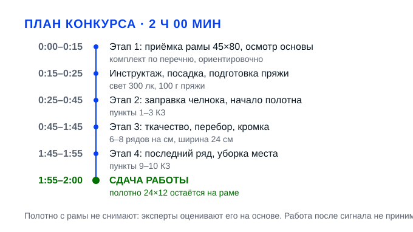
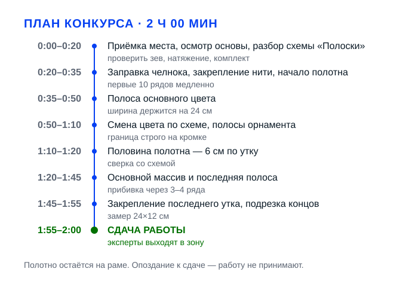
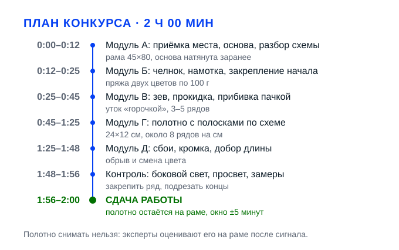

Ткач (ФВ)
Задания ниже — официальные файлы «Абилимпикс» (источник: abilympics-russia.ru), разложенные по категориям. Решения написаны по тексту задания, регламенту и критериям оценки; в них указано, что именно проверяет эксперт.
Школьник
14–16 лет, базовый уровень заданияВ официальном файле категории не разделены отдельными разделами — приводим задание целиком; различия по категориям смотрите в таблице модулей.
Пошаговое решение
Задание категории «Школьники» — соткать на настольной раме полотно в технике гладкого прямого ткачества с одноцветным перебором размером 24 на 12 сантиметров, из которого потом шьют кошелёк, косметичку, чехол для телефона или пенал. На всё отводится два часа, и основа уже натянута на ремезную раму с бердом 45 на 80 сантиметров, так что перетягивать её не придётся: участник заправляет челнок 50 на 4 сантиметра, закрепляет нить, ткёт полотно и при необходимости меняет пряжу. Работа держится на десяти приёмах, перечисленных в конкурсном задании, — от закрепления нити на челноке до закрепления конца после обрыва, — и эксперты проверяют именно последовательность их выполнения, а не только готовый вид полотна. Главные риски простые: стянутая кромка, сбитая плотность и незакреплённые концы. Ниже — разбор по этапам с цифрами и типичными ошибками.

Задача 1. Организовать рабочее место и принять рамуЭтап 1 · пункты 1–3 КЗ · 0:00–0:25
Рама приходит на конкурс с уже натянутой основой, и это сильно меняет расклад: половина успеха зависит от того, что участник увидит и поправит в первые двадцать минут. Нужно сверить комплект с перечнем оборудования, проверить натяжение и проборку основы, убедиться, что бердо переворачивается ровно, и посадить себя так, чтобы два часа работы не превратились в два часа борьбы с собственной спиной. Всё, что не исправлено до старта, испортить потом уже нельзя — основу на конкурсе не перетягивают.
Действие 1.1. Принять оборудование и осмотреть раму
Шаг 1.1.1
Раскладываем на столе всё выданное и сверяем с перечнем: ремезная рама с бердом 45 на 80 сантиметров с натянутой основой, деревянный челнок 50 на 4 сантиметра, деревянная расчёска с крупными зубьями, ножницы с тупыми концами и одноцветная пряжа — полушерстяная или акриловая — примерно 100 граммов. Каждый предмет берём в руки, а не рассматриваем издалека: челнок должен быть целым, без трещины по бортику, расчёска — без сломанных зубьев, ножницы — резать нить, а не жевать её. Если чего-то не хватает или предмет повреждён, говорим об этом сразу, до старта.
В конкурсном задании перечислено ровно пять позиций оборудования на участника, и работа проверяется именно на этом наборе: полотно, сотканное с чужой расчёской или на другой раме, к оценке не принимается. Трещина на бортике челнока цепляет пряжу и рвёт уток в самый неподходящий момент, а тупые ножницы заставляют рвать нить зубами — это видно и стоит времени. Замена после старта — только через главного эксперта и по уважительной причине.
Все пять позиций лежат перед вами, каждая подписана в перечне, и вы можете показать пальцем, где что. Челнок катается по столу ровно, без зацепов; расчёска проходит между зубьями без треска; ножницы на пробном кусочке нити дают чистый срез, а не разлохмаченный конец. Пряжа одного цвета по всей длине, без пятен и утолщений.
Самая частая ошибка — принять комплект «на глаз» и обнаружить отсутствие расчёски на сороковой минуте, когда уток уже прибивать нечем. Вторая — взять повреждённый челнок и молчать: нить будет рваться у самого бортика, и каждый обрыв придётся закреплять, теряя по три-четыре минуты. Третья — трогать раму до инструктажа.
Эксперт подходит в первые минуты и смотрит, разложены ли предметы по местам и сверялся ли участник с перечнем. Молчаливое «вроде всё есть» он отличает от спокойного пересчёта сразу.
Шаг 1.1.2
Проверяем основу: она должна быть натянута как струна, но без звона. Проводим ладонью поперёк нитей у берда и у заднего валика — ладонь должна идти ровно, без провалов. Смотрим проборку: в берде каждая нить лежит в своей прорези или отверстии, ни одна не перекинута через соседнюю и не выскочила наружу. Отдельно проверяем две крайние нити с каждой стороны — именно они держат кромку, и именно они чаще всего оказываются слабее остальных.
Полотно шириной 24 сантиметра получается только из ровно натянутой основы: провисшая нить ложится волной, и на готовом полотне это читается как продольная морщина, которую уже не расправить. Сбитая проборка даёт сдвиг рисунка перебора на одну нить — а перебор школьники выполняют именно по нитям основы, и ошибка в проборке превращает ровные рельефные полосы в косую лесенку.
Основа натянута равномерно: при щелчке пальцем по нитям звук одинаковый по всей ширине, при оттягивании одной нити она возвращается на место. Ни одна нить не выскочила из берда, крайние нити целые. Если на основе есть узел, он должен быть с изнанки и не мешать открытию зева.
Ошибка — начать ткать на основе с выскочившей нитью: через два сантиметра полотно пойдёт с продольной дыркой, и исправить это можно только перетяжкой, которой на конкурсе нет. Вторая — подтянуть «слабую» нить, потянув за неё рукой: натяжение уйдёт, и по всей длине пойдёт волна.
Эксперт смотрит на основу до первого прокидa и отдельно фиксирует, заметил ли участник дефект сам или начал работать «как есть». Заодно он проверяет, одинаково ли натянуты нити по всей ширине основы.
Шаг 1.1.3
Ставим раму на стол и проверяем устойчивость: она не должна качаться, когда вы прибиваете уток. Проверяем бердо — берём его за боковины и переворачиваем в обе стороны: ход должен быть плавным, без заедания и без люфта в петлях, а в крайних положениях бердо должно фиксироваться, иначе зев «поплывёт» посреди ряда. Пальцем проводим по зубьям: заусенец или скол будет рвать пряжу на каждом прокиде. Если рама стоит на клиньях или винтах, подтягиваем их до упора, но без фанатизма, чтобы не сорвать резьбу.
В задании школьников отдельным пунктом стоит «последовательное переворачивание берда в процессе ткачества» — это и есть способ менять зев на такой раме. Если бердо ходит туго, участник начинает дёргать его, зев открывается неравномерно, и челнок проходит то над нитью, то под ней: получаются просечки и «затяжки», которые эксперт видит на просвет.
Рама стоит на четырёх точках без качания, бердо переворачивается одним движением кисти и остаётся в крайнем положении само. Зубья гладкие на ощупь, между ними проходит нить без зацепа. Проверьте на пробном прокиде: челнок идёт через зев свободно, не задевая бердо.
Типичная ошибка — ткать на качающейся раме: прибивка уходит в наклон, и уток ложится с разной плотностью у левой и правой кромки. Вторая — силой вгонять бердо на место, когда оно заедает: зубья гнутся, и полотно получает продольные полосы от погнутых зубьев.
Эксперт проверяет плавность хода берда и устойчивость рамы, когда обходит зону перед стартом; после старта он смотрит, как участник переворачивает бердо — одним движением или судорожно, помогая второй рукой.
Шаг 1.1.4
Садимся так, чтобы бердо находилось на уровне локтей, а до переднего края рамы оставалось 25–30 сантиметров: ближе — руки устают, дальше — приходится тянуться, и зев открывается косо. Свет ставим слева и чуть спереди, чтобы тень от рук не падала на зев: на просвет видно каждую нить, и именно так ловится просечка. Инструмент раскладываем один раз и навсегда: расчёска справа под рукой, ножницы справа на столе, но не на раме, клубок пряжи — слева, чтобы нить шла к челноку без перекрута.
Порядок на столе экономит не меньше десяти минут за два часа: пока расчёска ищется, уток не прибивается, а зев остаётся открытым, и нити основы растягиваются. Свет сбоку — не прихоть: при освещённости рабочего места не менее 300 люкс, которая заложена в требованиях к местам участников с нарушением зрения, просечка и стянутая кромка видны сразу, а не через десять сантиметров.
Рама не качается, локти лежат свободно, спина прямая. Расчёска и ножницы находятся в поле зрения и не мешают движению челнока. Зев освещён так, что между поднятыми и опущенными нитями видна щель по всей ширине, без тёмных провалов у кромок.
Ошибка — положить ножницы на раму: они цепляют основу и оставляют затяжки, а при неловком движении падают в зев. Вторая — работать в тени собственной руки и не видеть, что уток лёг не через ту нить. Третья — сидеть слишком далеко и тянуться к дальнему краю.
Эксперт оценивает организацию места в первые пять минут: наклон корпуса, расположение инструмента, освещение зева. Дальше он просто смотрит, приходится ли участнику искать расчёску.
Действие 1.2. Снять риски и подготовить пряжу
Шаг 1.2.1
Слушаем инструктаж по технике безопасности до конца и задаём те вопросы, которые касаются именно ткачества: можно ли переворачивать раму, что делать при обрыве основы, где граница соревновательной зоны, как подаётся сигнал о готовности. Уточняем у эксперта две вещи, которые в задании не расписаны: сколько времени даётся на сдачу и можно ли оставить на раме обрезки нити. Ответы запоминаем или записываем на уголке задания.
Инструктаж по охране труда обязателен по разделу 3 конкурсного задания, и его прохождение фиксируется до старта. Практическая сторона важнее формальной: вопрос про обрыв основы снимает панику в середине работы, а вопрос про границу зоны не даёт случайно выйти из неё и получить замечание.
Вы можете своими словами пересказать три правила: как обращаться с ножницами, что делать при обрыве нити, где заканчивается ваша зона. Эксперт подтвердил, что вопросы заданы и ответы получены. Если ответа не последовало, спрашиваем ещё раз, но уже до старта.
Ошибка — кивнуть на инструктаже и не спросить ничего, а потом искать эксперта с поднятой рукой в разгар работы. Вторая — начать работу до окончания инструктажа: это нарушение порядка проведения конкурса.
Эксперт отмечает, слушал ли участник и задавал ли вопросы по существу; демонстративное равнодушие к инструктажу он запоминает. Если вопросов не задано ни одного, он делает пометку и дальше наблюдает за участником в работе.
Шаг 1.2.2
Убираем всё, что может зацепиться за основу: кольца, часы, браслеты, длинные серьги, шарф, свободный рукав. Волосы убираем назад и закалываем, если они длинные. Рукава подворачиваем до локтя или застёгиваем плотно у запястья, чтобы манжета не свисала в зев. Ногти коротко подстрижены — ими удобно разводить нити при переборе, и длинный ноготь здесь только мешает, цепляя уток.
Основа натянута тонкими нитями, и любая пряжка или край часов работает как крючок: одно неосторожное движение — и нить вытянута или оборвана, а запасной основы на конкурсе нет. Кроме того, аккуратный вид участника входит в общее впечатление от работы, которое эксперт фиксирует, пока обходит зону.
Украшений на руках нет, рукава не свисают, волосы не падают на лицо при наклоне над рамой. Проверьте просто: наклонитесь к зеву и посмотрите, не свешивается ли что-нибудь в рабочую зону. При поднятых руках рукав не сползает на запястье и не попадает в зев.
Классика — снять кольцо, но оставить часы с металлической застёжкой: они царапают бердо и цепляют нить. Вторая ошибка — закатать рукав небрежно, и он сползает на запястье в самый ответственный момент перебора.
Эксперт смотрит на руки и одежду в начале работы; по ходу он отдельно отмечает, не цепляется ли участник за основу одеждой. Свисающий рукав или браслет он считает риском для основы, а не мелочью.
Шаг 1.2.3
Разбираемся с пряжей до того, как она попадёт на челнок. Разматываем клубок и смотрим на нить: она должна быть одной толщины, без утолщений и тонких мест, без узлов на первых двух метрах. Направление вытягивания выбираем такое, чтобы нить шла без перекрута: если при сходе она закручивается в спираль, клубок переворачиваем другой стороной. Клубок кладём в невысокую коробку или пакет с узким горлом, чтобы он не катался по столу и не путался.
Пряжа в перечне оборудования одна — одноцветная полушерстяная или акриловая, около 100 граммов, и второго клубка не будет. Узел, попавший в полотно, выглядит как шишка и сразу заметен на ровном гладком ткачестве, а перекрученная нить ложится неравномерно и даёт «рябь» по всей ширине. Спокойный сход нити — это ещё и ровный зев: дёргающийся клубок выводит челнок из линии.
Нить идёт между пальцами ровно, без узлов на проверенных двух метрах, не раскручивается в спираль. Клубок стоит на месте, когда вы отходите от стола на шаг, и не тянет за собой челнок. При вытягивании нить не цепляется за клубок и не идёт рывками.
Ошибка — начать ткать прямо из свободного клубка: через полчаса он укатится под раму, нить натянется, и в полотне появится утолщённый участок. Вторая — оставить узел «он маленький»: на одноцветном полотне он виден как точка и снимает оценку за качество поверхности.
Эксперт обращает внимание на подготовку пряжи, когда участник заправляет челнок: ровная намотка без узлов — признак того, что материал проверен заранее.
Шаг 1.2.4
Проверяем условия своего места и, если что-то не так, просим поправить до старта. Свет должен давать не меньше 300 люкс на рабочей поверхности, температура в зоне — 21–24 градуса при лёгкой работе, влажность 40–60 процентов, шум не выше 81 дБА. Проход между рабочими местами по требованиям — 1,5 метра, и если стул соседа стоит в вашем проходе, это решается сразу, а не в процессе. Всё это записано в разделе о минимальных требованиях к оснащению рабочих мест.
Ткачество — работа мелкая и долгая: два часа на раме при плохом свете дают слезящиеся глаза и ошибки в счёте нитей при переборе, а духота в зоне снимает внимание к последнему получасу, когда доделывается самое важное. Требования к микроклимату и освещённости в задании прописаны отдельно для каждой нозологии, и организаторы обязаны их выполнить — но попросить об этом нужно самим.
Освещение ровное, без пульсации и бликов на раме, тени от рук не закрывают зев. В зоне не холодно и не душно, шум с соседних мест не заставляет повышать голос. Стул отрегулирован по высоте так, что бердо на уровне локтей.
Ошибка — терпеть неудобное место и списывать усталость на нервы: к концу работы внимание падает, и последние ряды идут с просечками. Вторая — самовольно переставлять раму и свет, не сообщив эксперту: это меняет оснащение рабочего места.
Эксперт реагирует на просьбы об условиях места и фиксирует их выполнение; молчаливое терпение он не считает ни смелостью, ни баллом. Ещё один признак — приходится ли участнику щуриться и наклоняться к зеву.
Задача 2. Заправить челнок и заложить начало полотнаЭтап 2 · пункты 1–3 КЗ · 0:25–0:50
Первые три пункта конкурсного задания — закрепление нити на челноке, наматывание и закрепление конца пряжи в начале ткачества. Это самая короткая часть работы и самая частая причина провала: неправильно намотанный челнок даёт рывки на каждом прокиде, а незакреплённый начальный конец выходит из кромки через десять сантиметров и тянет за собой весь первый ряд. Здесь важно не спешить: двадцать пять минут на заправку — это ровно столько, сколько нужно, чтобы потом не останавливаться.
Действие 2.1. Закрепить и намотать нить на челнок
Шаг 2.1.1
Берём пряжу и находим свободный конец. Распускаем первые 30–40 сантиметров — они почти всегда смяты и перекручены, — и проверяем этот участок на узлы и утолщения. Обрезаем ножницами наискосок, а не под прямым углом: косой срез легче пройти в прорезь челнока и не даёт «бороды» из распущенных волокон. Если нить полушерстяная, кончик можно слегка скрутить между пальцами, чтобы он не распадался.
Закрепление нити на челноке — первый пункт последовательности выполнения задания, и эксперт смотрит именно на узел: он должен держать нить и при этом не быть толстым. Смятый распущенный конец с узлом даёт утолщение, которое не проходит в зев и рвёт соседние нити основы. Косой срез — мелочь, которая экономит минуту на каждом обрыве.
Конец нити ровный, без узлов на первых 30 сантиметрах, срез косой и не разлохмаченный. Проведите концом между пальцами: он должен пройти гладко, без зацепов за кожу. На срезе нет распущенных волокон, кончик держит форму и не махрится.
Ошибка — взять нить прямо из клубка, не распустив: смятый участок пойдёт в первый ряд и даст шишку на кромке. Вторая — обрезать под прямым углом и оставить махру, которая будет цепляться за основу на каждом прокиде.
Эксперт смотрит на подготовку конца нити в момент заправки челнока и отмечает, распущен ли конец и есть ли узел у самого края. Смотрит он и на то, распущены ли первые сантиметры нити и нет ли узла у самой прорези.
Шаг 2.1.2
Закрепляем нить на челноке. На деревянном челноке 50 на 4 сантиметра есть прорезь или отверстие у бортика — продеваем конец туда и фиксируем простой петлёй: обводим нить вокруг бортика, пропускаем конец под себя и затягиваем. Узел затягиваем у самого дерева, но не намертво: перетянутый узел режет нить и рвётся в самый неподходящий момент. Хвост оставляем 5–7 сантиметров, его потом придержим пальцем при первом прокиде.
Крепление нити на челноке — отдельный пункт в списке того, что проверяют эксперты, и он напрямую влияет на весь дальнейший ход: слабое крепление отпускает нить при натяжении, и уток ложится свободно, а полотно идёт с наплывами. Слишком тугой узел перерезает волокно, и обрыв случается на третьем-четвёртом ряду, когда переделывать уже дорого.
Возьмите челнок за корпус и потяните за нить в сторону: узел держит, нить не проскальзывает, но и не врезается в дерево. Хвост не мешает намотке и не попадает под витки. Челнок в руке лежит так, что прорезь смотрит вверх.
Частая ошибка — привязать нить «на два оборота» без узла: при первом же натяжении она сходит с челнока, и вы теряете конец в зеве. Вторая — затянуть узел так, что нить у самого узла становится тонкой: обрыв гарантирован в первые минуты.
Эксперт проверяет крепление, когда участник показывает заправленный челнок или просто прокидывает его первый раз: держит ли узел и не торчит ли длинный хвост.
Шаг 2.1.3
Наматываем пряжу на челнок виток к витку, в один слой, укладывая нить плотно, но без натяга. Ведём намотку от одного бортика к другому, а не «восьмёркой» через середину: восьмёрка при сходе даёт петли, которые цепляются за основу. Намотка не должна подниматься выше бортиков челнока — на челноке 50 на 4 сантиметра это примерно 8–10 миллиметров толщины. Заканчиваем намотку так, чтобы нить выходила с верхней стороны.
Ровная намотка — условие точного прокида: челнок с бугром посередине идёт по зеву неровно, задевает нити и оставляет затяжки, а с рыхлой намоткой нить сходит петлями и ложится в уток с петлёй, которая потом вылезает на лицевую сторону. Кроме того, намотанный выше бортика челнок физически не проходит в зев шириной 3–4 сантиметра.
Челнок ровный по всей длине, намотка не выше бортиков, нить лежит параллельными витками без перехлёстов. Прокидываем челнок в зев на пробу: он идёт свободно, нить сходит без рывков и не образует петель у бортика.
Ошибка — намотать «побольше, чтобы хватило на всё полотно»: челнок становится толстым, зев расходится, и прибивка идёт с перекосом. Вторая — намотать восьмёркой, которая на сходе даёт узлы и петли. Третья — тянуть нить при намотке: она теряет упругость и уток ложится плоско.
Эксперт смотрит на намотку в первые минуты ткачества: ровные витки и отсутствие петель у бортика он видит сразу, как только участник делает первый прокиде.
Шаг 2.1.4
Проверяем сход нити на коротком отрезке. Отводим челнок от клубка на полметра, даём нити провиснуть и снова натягиваем: она должна сходить свободно, без зацепа за бортик и без самопроизвольного раскручивания челнока. Кладём челнок на стол прорезью вверх и смотрим, не сходит ли нить сама: если челнок «убегает», намотка слабая, и её надо подтянуть. Конец нити при этом остаётся закреплённым на бортике.
Проверка схода — это профилактика обрывов: девять из десяти обрывов у школьников случаются не из-за плохой пряжи, а из-за того, что нить зацепилась за бортик или пошла петлёй. Пять минут проверки здесь экономят двадцать минут на закреплении обрывов по ходу работы, и именно эти минуты в конце уходят на последние ряды.
Нить сходит ровно, челнок не раскручивается сам, на нити нет петель и узлов на проверенном участке. При потягивании за нить челнок поворачивается, а не прыгает. Всё это проверяется до первого прокида в зев.
Ошибка — проверить сход «мысленно» и обнаружить проблему на десятом ряду. Вторая — подтянуть намотку, потянув за свободный конец: узел сойдёт, и челнок останется пустым посреди зева. Третья — намотать нить поверх хвоста: при первом прокиде хвост выйдет из-под витков.
Эксперт может попросить показать челнок перед началом ткачества; аккуратная намотка без петель читается как понимание технологии. Если челнок заправлен небрежно, он предлагает перемотать его до начала ткачества.
Действие 2.2. Заложить первый ряд и закрепить конец пряжи
Шаг 2.2.1
Открываем зев: берём бердо за боковины и переворачиваем его до упора. Смотрим на щель между нитями — она должна идти по всей ширине основы одинаковой высотой 3–4 сантиметра. Если в каком-то месте нити слиплись или перекрестились, разводим их расчёской или пальцами, начиная от берда и до заднего края. Проверяем, что зев открыт именно на рабочей ширине 24 сантиметра, а не захватывает запасные нити по краям.
Чистый зев — это точный прокид: если нити слиплись, челнок пройдёт над двумя нитями сразу, и в полотне появится просечка, которая видна на просвет и не исправляется. В задании школьников точный пропуск челнока между нитями основы вынесен отдельным пунктом, и проверяют его именно на первых рядах, пока эксперт стоит рядом.
Зев открыт по всей ширине, щель ровная, ни одна нить не перекрещена и не натянута поперёк. Проверьте пальцем: он должен пройти между поднятыми и опущенными нитями по всей ширине без сопротивления. Зев открыт на всю рабочую ширину, а не только у середины.
Ошибка — гнать челнок в зев с перекрещенными нитями: получается просечка, и на однотонном полотне она видна как светлая полоса. Вторая — открыть зев не до упора: щель узкая, челнок трёт основу и сдвигает нити.
Эксперт смотрит на зев при первом прокиде и отмечает, разводит ли участник слипшиеся нити или гонит челнок силой. Высоту зева у кромок он тоже сверяет: перекошенный зев виден сразу.
Шаг 2.2.2
Берём челнок в правую руку, придерживаем хвост нити пальцем левой и вводим носик челнока в зев у самого берда под углом примерно 15–20 градусов к основе. Ведём челнок по зеву до противоположной кромки, не поднимая и не опуская его: он должен идти по прямой линии параллельно берду. У левой кромки перехватываем челнок другой рукой и выводим его наружу, оставляя в зеве проложенную нить. Хвост начального конца при этом остаётся снаружи, за правой кромкой.
Прокид под углом и по прямой — это и есть «точный пропуск челнока между нитями основы», пункт 5 задания. Если вести челнок с наклоном вверх или вниз, он зацепит нити у кромки и вытянет их, а на полотне появятся затяжки по краям. Хвост, придержанный пальцем, не даёт начальному концу уйти в зев и остаться внутри полотна.
Челнок вышел с другой стороны, нить лежит в зеве свободно, не натянута струной и не провисает петлёй. У обеих кромок нить лежит под тем же углом, что и в середине. Хвост начального конца виден снаружи и не утянут в полотно.
Ошибка — бросить челнок через зев, как мяч: он ударяется о бердо, отскакивает и цепляет нити. Вторая — тянуть челнок за собой, прижимая к основе: трение вытягивает нити и сбивает проборку. Третья — держать челнок за нить, а не за корпус: нить режет пальцы и путается.
Эксперт наблюдает за прокидом в первые минуты: угол ввода челнока и линию его движения он видит сразу, как только участник начинает первый ряд. Отмечает он и то, придерживает ли участник начальный хвост при первом прокиде.
Шаг 2.2.3
Укладываем первый ряд и закрепляем начальный конец. Прокладываем уток дугой — «горочкой» — с запасом 1–1,5 сантиметра по середине: нить не натягиваем в линию, а даём ей слегка провиснуть, чтобы при прибивке она вошла в кромку, а не стянула полотно. Затем берём начальный хвост, обводим его вокруг крайней нити основы петлёй и затягиваем так, чтобы конец лёг вдоль кромки и не выходил на лицевую сторону.
Закрепление конца пряжи в начале ткачества — третий пункт задания, и без него первый ряд «уезжает»: незакреплённый конец вытягивается из кромки при первой же прибивке, край становится рыхлым, и полотно начинается с дырки. Дуга «горочкой» компенсирует усадку: ровно уложенный в натяг уток при прибивке стягивает кромку внутрь.
Начальный конец закреплён и лежит вдоль кромки, не болтается и не виден на лицевой стороне. Первый ряд лежит дугой с запасом по середине. Потяните за хвост: он держит, кромка не расходится. Первый ряд не провисает у кромок и не тянет их внутрь.
Ошибка — оставить хвост свободным «потом закреплю»: он выйдет из кромки на третьем ряду, и придётся разбирать начало. Вторая — уложить первый ряд в натяг, без дуги: после прибивки кромка стягивается, и полотно сужается уже на первом сантиметре.
Эксперт проверяет закрепление начального конца, когда подходит к раме в первые десять минут; торчащий хвост и стянутая кромка фиксируются сразу. Ещё он смотрит, лежит ли уток дугой с запасом, а не в натяг.
Шаг 2.2.4
Прибиваем первый ряд и проверяем начало. Берём расчёску с крупными зубьями, ставим её зубьями к себе и прибиваем уток ровными движениями по всей ширине: не в одно место, а последовательно слева направо, по два-три удара на участок. Сила средняя — уток должен лечь плотно к опушке, но не врезаться в неё. Затем переворачиваем бердо, прокладываем второй ряд и снова прибиваем, после чего осматриваем первые два ряда как образец.
Первые два ряда — это настройка всей работы: по ним видно, с какой силой надо прибивать, чтобы получить нужную плотность. Если прибить сразу сильно, уток врежется в опушку, и первый сантиметр полотна будет плотнее остального — это читается как неровная плотность. Прибивка по всей ширине, а не в одно место, даёт ровный край.
Первые два ряда лежат ровно, без волн, кромки слева и справа на одной линии. Плотность одинаковая по ширине: при нажатии пальцем уток пружинит одинаково в середине и у краёв. Начальный конец закреплён и не выходит на лицевую сторону.
Ошибка — прибивать уток в одно место у середины: края остаются рыхлыми, и первый сантиметр полотна идёт «лодочкой». Вторая — бить слишком сильно, вгоняя уток в опушку: полотно получается жёстким, а кромка стягивается.
Эксперт смотрит на первые два ряда как на образец: по ним он понимает, будет ли полотно ровным по всей длине, и делает пометку о силе прибивки. Проверяет он и то, прибит ли первый ряд по всей ширине, а не только в середине.
Задача 3. Ткать полотно гладким прямым ткачествомЭтап 3 · пункты 4–8 КЗ · 0:50–1:45
Основной объём работы — пятьдесят пять минут на раме, за которые нужно пройти от начала полотна до двенадцати сантиметров по основе и сохранить ширину двадцать четыре сантиметра. Работа монотонная и состоит из одного и того же цикла: перевернуть бердо, провести челнок, уложить уток дугой, прибить. Ошибки здесь накапливаются медленно и обнаруживаются поздно, поэтому контроль идёт не по готовому полотну, а по ходу: плотность, ширина и кромка проверяются каждые два-три сантиметра, а не в конце.
Действие 3.1. Освоить рабочий цикл: зев, прокид, прибивка
Шаг 3.1.1
Рабочий цикл начинается с берда. Берём его двумя руками за боковины, переворачиваем на 180 градусов до упора и оставляем в этом положении: нити, которые были вверху, уходят вниз, и открывается новый зев. Движение делаем плавно, без рывка, доводим до конца — недопрокинутое бердо даёт перекошенный зев, у которого одна сторона выше другой. Держим бердо пальцами за боковины, а не за зубья, иначе зубья погнутся и полотно получит продольные полосы.
Последовательное переворачивание берда — четвёртый пункт последовательности в задании школьников, и это единственный способ менять зев на такой раме. Плавность и полнота переворота определяют, будет ли зев одинаковым по всей ширине: при перекосе челнок с одной стороны проходит свободно, а с другой трёт основу и сдвигает нити, оставляя затяжки на кромке.
После переворота бердо стоит неподвижно и не возвращается само. Зев открыт по всей ширине на 3–4 сантиметра, щель ровная, без перекоса на одну сторону. Пальцем проверьте у левой и правой кромки: высота зева должна быть одинаковой.
Ошибка — переворачивать бердо одной рукой за середину: оно идёт с перекосом, и зубья гнутся. Вторая — бросать бердо, давая ему упасть в крайнее положение: удар расшатывает петли, и зев начинает «гулять» по ходу работы.
Эксперт смотрит на переворот берда в первые минуты ткачества и отмечает, берётся ли участник за боковины и доводит ли движение до упора. Заодно он смотрит, не гнутся ли зубья берда под пальцами.
Шаг 3.1.2
Прокидываем челнок в открытый зев. Держим его правой рукой за корпус, вводим носик у самого берда под углом 15–20 градусов к основе и ведём по прямой до противоположной кромки, где перехватываем левой рукой. Челнок должен идти по зеву, не касаясь нитей: если он трёт основу, значит, зев узкий или челнок ведут с наклоном. Нить при этом сходит с челнока свободно, без натяга, и ложится в зев мягкой дугой.
Точный пропуск челнока между нитями основы — пункт 5 задания, и он оценивается по отсутствию просечек: каждая просечка это место, где челнок прошёл над двумя нитями вместо одной, и на однотонном полотне она читается как светлая полоска. Трение челнока об основу вытягивает крайние нити, и кромка идёт волной.
Нить лежит в зеве ровно, без натяга и без петли, у обеих кромок на одинаковой высоте. Челнок вышел с другой стороны целиком, не зацепив ни одной нити. Полотно после прибивки не показывает светлых полос на просвет.
Ошибка — тянуть челнок за нить, прижимая его к основе: нити вытягиваются, и в полотне появляется продольная волна. Вторая — прокидывать челнок в неполностью открытый зев: он цепляет верхние нити и рвёт уток.
Эксперт стоит у рамы в начале работы и смотрит именно на прокид: угол, линию движения и то, остаётся ли нить в зеве свободной. Ещё он проверяет, не трёт ли челнок основу на середине зева.
Шаг 3.1.3
Укладываем уток «горочкой». После прокида нить не натягиваем в линию, а оставляем дугой с запасом 1–1,5 сантиметра по середине полотна: придерживаем нить у кромки и даём ей провиснуть. Затем прокладываем следующий ряд, снова перевернув бердо, и только после двух-трёх рядов прибиваем их расчёской. Такой порядок — прокладывать несколько рядов прежде, чем прибить уток — прописан в задании отдельным пунктом.
Дуга компенсирует усадку: при прибивке уток укорачивается и тянет крайние нити основы внутрь, поэтому запас, заложенный «горочкой», уходит в кромку и ширина остаётся ровной. Прибивка сразу после каждого ряда даёт жёсткое полотно с плотной, «забитой» поверхностью и стянутой кромкой, а на школьном задании ценится ровное гладкое полотно.
Уток лежит дугой с запасом, полотно не стянуто, кромки не подтянуты внутрь. После прибивки двух-трёх рядов поверхность остаётся мягкой, а не «деревянной». Проверьте пальцем: полотно пружинит, уток не вбит в опушку.
Ошибка — натягивать нить в линию «чтобы ровнее»: при прибивке кромка стягивается, и полотно сужается на сантиметр за десять рядов. Вторая — прибивать каждый ряд отдельно: полотно становится жёстким и плотным, а кромка идёт фестонами.
Эксперт проверяет, есть ли на полотне запас «горочкой» и прибиваются ли ряды группой, а не по одному: это видно по ритму работы. Смотрит он и на кромки: есть ли у них запас утка, заложенный дугой.
Шаг 3.1.4
Прибиваем уток деревянной расчёской с крупными зубьями. Ставим расчёску зубьями к себе, прижимаем к опушке и делаем два-три коротких удара по участку, последовательно продвигаясь слева направо по всей ширине. Сила средняя и одинаковая: уток должен лечь вплотную к предыдущему ряду, но не врезаться в него. Расчёску держим под прямым углом к полотну, а не с наклоном, иначе край прибивается неравномерно.
Прибивка задаёт плотность полотна и его внешний вид. Именно здесь появляется разница между ровным гладким ткачеством и полотном с «полосами»: если бить в одно место или с разной силой, плотность у левой и правой кромки будет отличаться, и это видно на готовой работе при боковом свете.
Полотно после прибивки ровное по всей ширине, без выпуклостей и впадин. Плотность проверяется на ощупь: проведите пальцем поперёк — уток должен ощущаться одинаково в середине и у кромок. На просвет не видно полос с разной плотностью.
Ошибка — бить расчёской в середину полотна: края остаются рыхлыми, и полотно идёт «лодочкой». Вторая — прибивать с наклоном расчёски: зубья цепляют нити и вытягивают их из полотна. Третья — бить по уже прибитому ряду: уток уплотняется неравномерно, и полотно идёт волной.
Эксперт смотрит на прибивку в процессе, а не в конце: равномерность ударов по ширине он видит по движению руки и по тому, как лежит поверхность. Отмечает он и то, прибивается ли уток к опушке, а не поверх предыдущего ряда.
Действие 3.2. Держать плотность и ровный ряд
Шаг 3.2.1
Определяем плотность по утку и держим её постоянной. Ориентир для пряжи такой толщины — 6–8 уточных рядов на сантиметр, то есть на полотно длиной 12 сантиметров уйдёт примерно 70–95 рядов. Проверяем на третьем сантиметре: прикладываем линейку вдоль кромки, считаем ряды на отрезке в 2 сантиметра и умножаем на два. Если получилось меньше шести, прибивка слабая, если больше восьми — уток вбит слишком сильно.
Плотность — главный измеримый признак качества полотна: от неё зависят и внешний вид, и прочность, и то, попадёт ли работа в заданный размер 24 на 12 сантиметров. Если ткать «как получается», к концу работы выясняется, что полотно либо короче нужного, либо длиннее, и обрезать его нельзя — оно остаётся на раме и оценивается как есть.
На отрезке в 2 сантиметра укладывается 12–16 рядов, что даёт 6–8 рядов на сантиметр. Плотность одинаковая на первом, третьем и пятом сантиметре: замеры совпадают с точностью до одного ряда. Полотно не просвечивает настолько, чтобы были видны щели между утками.
Ошибка — не мерить плотность вообще и узнать о проблеме на десятом сантиметре, когда переделывать поздно. Вторая — менять силу прибивки по ходу: полотно получается с «поясами» разной плотности, и это заметно даже без линейки.
Эксперт прикладывает линейку к полотну при оценивании и смотрит на равномерность плотности по длине; скачки видны сразу. Плотность на первом и последнем сантиметре он сверяет между собой.
Шаг 3.2.2
Следим за ровностью ряда по всей ширине. Каждый ряд должен лежать параллельно предыдущему, без перекоса: если с одной стороны уток поднялся, а с другой опустился, значит, челнок шёл с наклоном или прибивка была неравномерной. Проверяем линию ряда глазом от кромки к кромке, наклоняясь к раме, и при перекосе сразу поправляем: подтягиваем уток пальцами у той кромки, где он провис.
Ровный ряд — это и есть «гладкое прямое ткачество»: перекос на один-два миллиметра на десяти рядах превращается в заметную диагональ, и полотно выглядит перекошенным. Исправлять перекос задним числом приходится распуская ряды, а распущенный уток теряет упругость и ложится хуже.
Линия ряда идёт параллельно берду по всей ширине. Проверьте, приложив расчёску поперёк полотна: она должна лечь параллельно последнему ряду, без зазора с одной стороны. На пяти сантиметрах полотна линия ряда не уходит вниз ни с одной стороны.
Ошибка — тянуть уток за один конец, чтобы «подтянуть» ряд: кромка стягивается, и на этом месте остаётся утолщение. Вторая — не смотреть на дальнюю кромку и обнаружить перекос через пять сантиметров. Третья — подтягивать ряд за середину, а не за кромку: середина идёт плотнее краёв.
Эксперт смотрит на параллельность рядов при боковом освещении: перекос виден как тень по линии утка. По кромке перекос виден даже лучше, чем по линии утка, и он смотрит именно на край.
Шаг 3.2.3
Держим счёт рядов и темп. Считаем каждый прокинутый ряд, отмечая каждые десять рядов — например, сдвигом пальца по краю рамы или короткой пометкой на бумаге рядом. Темп ровный: один полный цикл из переворота берда, прокида и прибивки занимает примерно 25–30 секунд, то есть за минуту выходит два ряда. При таком темпе 12 сантиметров закрываются за 40–50 минут и остаётся запас на разбор ошибок.
Счёт рядов — единственный способ управлять размером полотна и временем. Без счёта участник либо торопится в конце, сбивая плотность, либо работает слишком медленно и не успевает дойти до 12 сантиметров. Задание ограничено двумя часами, и на всё полотно отведено около пятидесяти пяти минут — это видно по раскладке этапов.
Вы знаете, сколько рядов проложено и сколько осталось. На 5 сантиметрах полотна пройдено примерно 30–40 рядов, на 10 сантиметрах — 60–80. Отметки каждых десяти рядов не сбиваются и совпадают с линейкой.
Ошибка — считать «на глаз» и потерять счёт после обрыва нити: потом невозможно понять, где остановился перебор. Вторая — гнать темп в ущерб прибивке: полотно получается рыхлым, и размер уходит в минус.
Эксперт не оценивает счёт напрямую, но по темпу и по ровности плотности видит, управляет ли участник процессом. Ему видно и то, останавливается ли участник, чтобы поправить ряд, или гонит дальше.
Действие 3.3. Не дать полотну стянуться
Шаг 3.3.1
Перед прибивкой оттягиваем пальцами крайние нити основы. Берём две-три крайние нити с каждой стороны, слегка отводим их наружу и придерживаем, пока расчёска прибивает уток. Оттягивать нужно без усилия, чуть-чуть: задача — не растянуть основу, а не дать утку затянуть кромку внутрь. На плотной пряже это движение повторяется перед каждой прибивкой, и через двадцать рядов оно становится автоматическим.
Избегание стягивания путём оттягивания пальцами крайних нитей основы — пункт 8 задания, и он стоит там не случайно: стянутая кромка — самая частая потеря на школьном задании. Полотно сужается от 24 сантиметров к 22, кромка идёт волной, а на готовой работе это читается как небрежность, даже если середина соткана идеально.
Кромка остаётся вертикальной, ширина не уменьшается. Проверьте: крайние нити основы идут параллельно друг другу по всей длине полотна, а не сходятся к середине. На ощупь кромка плотная, но не «затянутая» в жгут.
Ошибка — оттягивать крайние нити сильно, «на всякий случай»: основа растягивается, и после снятия усилия кромка идёт волной в другую сторону. Вторая — оттягивать только с одной стороны: полотно перекашивается.
Эксперт смотрит на кромку при обходе зоны и отдельно проверяет ширину полотна линейкой: расхождение с 24 сантиметрами больше полусантиметра он фиксирует как дефект.
Шаг 3.3.2
Измеряем ширину полотна каждые 2–3 сантиметра по основе. Прикладываем линейку поперёк полотна у самой опушки, от крайней нити до крайней, и сравниваем с 24 сантиметрами. Отклонение до половины сантиметра считается рабочим, больше — сигнал, что прибивка или натяжение утка пошли не так. Замер делаем при открытом зеве и при закрытом: разница показывает, насколько полотно стягивает основу.
Полотно размером 24 на 12 сантиметров — это результат, который оценивается в задании, и ширина здесь первична: она зависит от натяжения основы и от того, насколько аккуратно уложен уток. Замер по ходу даёт возможность поправить прибивку, а замер в конце уже ничего не меняет — полотно остаётся на раме.
Ширина держится в пределах 23,5–24,5 сантиметра на всём протяжении. Замеры на третьем, шестом и девятом сантиметре отличаются не больше чем на полсантиметра. Кромки параллельны. Разница между замерами при открытом и закрытом зеве не больше двух миллиметров.
Ошибка — измерить один раз в начале и больше не возвращаться к линейке. Вторая — мерить по диагонали или с наклоном линейки: получается ложный результат, и участник успокаивается, когда полотно уже пошло на сужение.
Эксперт измеряет ширину при оценивании работы и сравнивает с заявленными 24 сантиметрами; следы промежуточных замеров на полотне он тоже видит. Сужение к концу работы он проверяет отдельно: это самый частый дефект на этом задании.
Шаг 3.3.3
Формируем кромку. Уток у кромки подтягиваем пальцами так, чтобы не оставалось петли, но и не было натяга: нить должна обогнуть крайнюю нить основы и лечь ровно, без «усика». На каждом ряду проверяем обе кромки: слева и справа уток должен поворачивать под одинаковым углом. Если у кромки образовалась петля, её распускаем до этого места и укладываем заново.
Кромка — это то, что видно на готовом изделии первым: кошелёк, косметичка или пенал шьются именно по кромке, и неровный край не спрятать. Петли у кромки при раскрое дают утолщения и дырки, а затянутая кромка не даёт сделать ровный шов. На конкурсе кромка оценивается вместе с общим качеством полотна.
Кромка ровная по всей длине, без петель и «усиков», крайние нити основы не вытянуты. Проведите пальцем вдоль кромки: она должна быть плотной и одинаковой на ощупь, без утолщений и провалов. Ни у левой, ни у правой кромки не прощупываются петли и утолщения.
Ошибка — оставлять петлю у кромки «она маленькая»: при прибивке следующего ряда петля вылезает наружу и остаётся навсегда. Вторая — подтягивать уток за кромку слишком сильно: край идёт волнистой линией.
Эксперт осматривает кромку по всей длине при оценивании и отдельно отмечает петли и затяжки у края. При боковом свете петли дают тень, и на однотонном полотне это читается сразу.
Шаг 3.3.4
Если полотно всё-таки стянуло, действуем сразу, а не «доткуём и посмотрим». Сначала распускаем один-два последних ряда: вытягиваем уток за кромку, снимаем его с зева и убираем. Затем оттягиваем крайние нити основы пальцами в стороны и держим несколько секунд, пока полотно не распрямится. Если нить сухая и жёсткая, слегка увлажняем пальцы водой и проводим по кромке — полушерсть и акрил после этого ложатся ровнее.
Распустить два ряда — это минута работы, а стянутая кромка остаётся на полотне навсегда: исправить её после десятого сантиметра нельзя, потому что полотно остаётся на раме и не перетягивается. Чем раньше участник замечает сужение, тем дешевле исправление: на третьем сантиметре это два ряда, на восьмом — уже весь участок.
После исправления ширина вернулась к 24 сантиметрам, кромка выпрямилась, плотность на исправленном участке совпадает с остальным полотном. Распущенные ряды не оставили утолщений и «лохматых» мест. Натяжение основы после исправления осталось прежним, нити не провисли.
Ошибка — оставить стяжку и надеяться, что «разгладится при шитье»: не разгладится, а ширина уйдёт из допуска. Вторая — распускать слишком много рядов от злости: уток теряет упругость, и полотно в этом месте становится тоньше.
Эксперт видит следы распуска по уплотнению у кромки и по изменению блеска нити; аккуратно исправленный участок он не считает дефектом, а брошенную стяжку — считает.
Действие 3.4. Выполнить одноцветный перебор
Шаг 3.4.1
Разбираемся, что такое перебор в одноцветном варианте. Перебор — это ручной подбор нитей основы: часть нитей вы поднимаете пальцами или кончиком расчёски, а челнок проходит только под оставшимися. В одноцветном исполнении рисунок получается не цветом, а рельефом: там, где нити подобраны, уток ложится плотнее и выше, там, где нет — ниже и свободнее. Простейший вариант — подбор через одну нить, он даёт ровные рельефные полосы по основе.
Одноцветный перебор — это и есть суть задания для школьников: полотно в технике гладкого прямого ткачества с одноцветным перебором, где вся выразительность держится на рельефе, а не на смене пряжи. Если участник просто ткёт гладкое полотно без перебора, работа теряет заявленную технику, и это видно эксперту с первого взгляда на поверхность.
Вы можете показать на полотне, где переборный пояс, а где гладкая часть: рельеф читается на ощупь как чередование более плотных и более свободных полос. Подбор идёт через одну нить, без пропусков и без захвата лишних нитей.
Ошибка — подобрать нити «примерно» и не проверить, через одну ли они идут: рельеф получается рваным, полосы разной ширины. Вторая — подобрать слишком много нитей сразу: челнок не проходит, и уток ложится с натягом.
Эксперт ищет перебор на поверхности полотна при оценивании: если рельефа нет, техника задания не выполнена. Заодно он проверяет, идёт ли подбор через одну нить, а не через две или три.
Шаг 3.4.2
Выполняем первый переборный пояс. Открываем зев, затем пальцами левой руки подбираем нити основы через одну, начиная от левой кромки, и придерживаем подбор до конца прокида. Челнок ведём по зеву поверх подобранных нитей, у самого берда, и выводим с другой стороны. Прибиваем пояс расчёской чуть слабее обычного, чтобы рельеф не «забился». Ширина пояса — 1,5–2 сантиметра по основе, этого достаточно, чтобы рисунок читался.
Первый переборный пояс задаёт образец для всей работы: по нему видно, какой высоты рельеф получается при вашей силе прибивки. Если прибить перебор так же сильно, как гладкое полотно, рельеф сравняется, и перебор перестанет быть виден — а он и есть содержание задания.
Пояс читается как рельефная полоса: на ощупь выше гладкой части, на просвет плотнее. Ширина пояса одинаковая по всей основе, границы ровные, ни одна нить не подобрана дважды или пропущена. Рельеф не сглажен прибивкой: пояс выступает над гладкой частью на ощупь.
Ошибка — отпустить подбор раньше, чем челнок прошёл: нити падают, и челнок проходит не под теми нитями, рельеф сбивается. Вторая — прибить перебор с той же силой, что и гладь: пояс не виден. Третья — подбирать нити при недопрокинутом берде: подбор идёт криво и рельеф сбивается.
Эксперт подходит к раме и смотрит на первый переборный пояс: ровные ли границы, читается ли рельеф, не сбит ли подбор. Смотрит он и на то, не прибит ли пояс так же плотно, как гладкая часть полотна.
Шаг 3.4.3
Держим ритм перебора и чередование поясов. После первого пояса провязываем 2–3 сантиметра гладкого полотна, затем повторяем перебор — так рисунок получается ритмичным и работа выглядит законченной. Считаем нити подбора вслух или про себя, чтобы не сбиться: через одну от левой кромки до правой. Каждый пояс сверяем с предыдущим по ширине и высоте рельефа, а после каждого пояса проверяем ширину полотна линейкой.
Ритм перебора — это то, что отличает продуманную работу от набора случайных полос: чередование поясов и глади должно быть одинаковым по всей длине, иначе полотно выглядит так, будто участник сбился. Сверка с предыдущим поясом ловит ошибку сразу, а не через пять сантиметров, когда переделывать уже некогда.
Пояса перебора идут на равном расстоянии друг от друга, ширина и высота рельефа совпадают. Полотно по-прежнему 24 сантиметра по ширине. Счёт нитей в подборе не сбит: границы поясов ровные и вертикальные.
Ошибка — сделать перебор один раз в начале и дальше ткать гладко: рисунок читается как случайная полоса, а не как техника. Вторая — менять число подобранных нитей от пояса к поясу: рельеф идёт с разной шириной.
Эксперт оценивает всю поверхность полотна целиком: ритм поясов и постоянство рельефа он видит при боковом свете, когда обходит работу. Пояса он пересчитывает: их число и расстояния должны повторяться по всей длине.
Действие 3.5. Устранять обрывы и стыки
Шаг 3.5.1
Если оборвался уток, останавливаемся и не тянем нить. Выводим оба конца на изнаночную сторону через зев, складываем их нахлёстом 3–4 сантиметра и закрепляем: полушерсть и акрил достаточно скрутить между пальцами, а концы уложить вдоль утка и прибить следующим рядом. Продолжаем работу с того же места, где оборвались, не пропуская ни одного ряда. Кончики не обрезаем под корень — они должны полежать в полотне 3–4 ряда.
Закрепление нити после обрыва — отдельный пункт последовательности в задании, и он проверяется по изнанке: если концы просто брошены или связаны узлом на лицевой стороне, это видно. Узел на лице остаётся точкой, которая не убирается, а незакреплённый конец выходит из полотна после первой же стирки изделия.
Место стыка не выделяется на лицевой стороне: нет узла, нет петли, нет утолщения. На изнанке концы уложены вдоль утка и прибиты. Потяните полотно в этом месте в стороны: стык держит, нить не выходит. Лицевая сторона в месте стыка чистая, без узелков и петель.
Ошибка — связать концы узлом и оставить его на лицевой стороне: на однотонном полотне узел виден как шишка. Вторая — бросить незакреплённый конец и продолжить: через несколько рядов он вылезет из кромки.
Эксперт осматривает изнанку полотна при оценивании и отдельно проверяет места стыков: торчащие концы и узлы он фиксирует. Проверяет он и то, не выходят ли концы на лицевую сторону после прибивки следующего ряда.
Шаг 3.5.2
Если оборвалась нить основы, действуем иначе: концы обрыва находим с обеих сторон, натягиваем и связываем тонким узлом у самого края полотна, а не в середине. Узел уводим на изнанку. Затем проверяем натяжение: оборванная нить должна идти в одной плоскости с соседними, не провисать и не быть туже их. Если натяжение выправить не удаётся, аккуратно распределяем недостающую нить из соседних, чуть оттянув их пальцами.
Оборванная нить основы — самая опасная неисправность: она даёт продольную дырку, которая на полотне 24 сантиметра шириной видна как тёмная полоса, и весь участок приходится признать дефектным. Правильно связанная и натянутая нить почти не читается на поверхности, а вот провисание или перетяг заметны сразу.
Нить основы идёт ровно, без провиса и без стягивания соседних. На просвет в этом месте нет щели. Узел лежит на изнанке и не проступает на лицевой стороне. Зев в этом месте открывается на ту же высоту, что и рядом.
Ошибка — связать нить с сильным натягом: полотно в этом месте собирается в мелкие складки. Вторая — оставить концы висеть и надеяться, что «зарастёт»: дырка останется на всю длину полотна. Третья — тянуть за оборванную нить, чтобы «выровнять»: соседние нити вытягиваются следом.
Эксперт проверяет основу на просвет при обходе и при оценивании: продольная дырка — один из первых дефектов, которые он ищет. Ещё он смотрит, открывается ли зев в месте стыка на полную высоту, как и рядом.
Шаг 3.5.3
Когда пряжа на челноке заканчивается, не ждём, пока конец уйдёт в зев. Заранее, за 20–25 сантиметров до конца, останавливаемся, снимаем челнок, оставляя хвост снаружи, и заправляем новую порцию пряжи тем же способом, что в начале: узел на бортике, намотка виток к витку. Концы старой и новой нити складываем нахлёстом 3–4 сантиметра, скручиваем между пальцами и укладываем вдоль утка, прибивая следующим рядом.
Смена пряжи на челноке прямо прописана в задании: участник самостоятельно заправляет челнок, закрепляет нить и при необходимости меняет пряжу. Если конец уйдёт в зев, придётся останавливать работу, разбирать ряд и вытаскивать конец из полотна, а это минус два-три ряда и потеря темпа на самом ответственном участке.
Новая порция намотана так же ровно, как первая, сход нити свободный. Место стыка не выделяется на лицевой стороне, концы уложены и прибиты. Челнок снова идёт по зеву без рывков. Место стыка не выделяется ни толщиной, ни блеском нити.
Ошибка — дождаться, пока нить кончится в зеве: конец уходит в полотно, и его приходится вытаскивать, портя ряд. Вторая — связать новую нить узлом на лицевой стороне, чтобы «быстрее». Третья — поставить клубок другой толщины: на полотне остаётся заметное утолщение.
Эксперт отмечает, как участник меняет пряжу: аккуратный стык и ровная намотка читаются как владение технологией, а узел на лице — как спешка. Отмечает он и то, заправлен ли челнок заранее или участник ждал, пока нить кончится в зеве.
Задача 4. Завершить полотно и сдать работуЭтап 4 · пункты 9–10 КЗ · 1:45–2:00
Последние пятнадцать минут решают, каким работу увидит эксперт. Нужно довести полотно ровно до двенадцати сантиметров, закрепить последний уточный ряд так, чтобы он не распустился, убрать обрезки и подготовить раму к осмотру. Полотно с рамы не снимают — оно остаётся на основе, и оценивают его прямо там. Отдельная часть — короткий и точный рассказ о том, что сделано: эксперт подходит к зоне после сигнала и смотрит работу вместе с участником.
Действие 4.1. Довести полотно до размера и закрыть последний ряд
Шаг 4.1.1
За двадцать минут до конца работы прикладываем линейку к полотну вдоль основы и смотрим, сколько осталось до 12 сантиметров. Если осталось 1,5–2 сантиметра, работаем в обычном темпе и не меняем плотность. Если осталось больше, чем можно пройти за это время, слегка увеличиваем плотность прибивки — на полряда на сантиметр, — но не больше: резкий скачок плотности виден на полотне как утолщённый участок. Если полотно уже вышло за 12 сантиметров, останавливаемся сразу, потому что лишнее не обрезают.
Размер 24 на 12 сантиметров — это тот результат, который заявлен в конкурсном задании для школьников, и он проверяется линейкой при оценивании. Недотканное полотно оценивается как незаконченная работа, а перетканное уже не привести к нужному размеру: изделие шьётся из полотна целиком, и запас по длине здесь не спасает.
Полотно ровно 12 сантиметров по основе и 24 сантиметра по ширине, кромки параллельны, плотность на последнем сантиметре такая же, как на первом. Замер сделан при закрытом зеве, линейка приложена от первого ряда до последнего.
Ошибка — спохватиться за пять минут и начать «догонять» плотностью: последний сантиметр получается в полтора раза плотнее остального полотна. Вторая — продолжать ткать «пока время есть» и выйти за 12 сантиметров, потеряв возможность исправить.
Эксперт измеряет полотно линейкой при оценивании и сравнивает с 24 на 12 сантиметров; скачок плотности в конце он видит при боковом свете. Заодно он проверяет, не вышло ли полотно за двенадцать сантиметров по основе.
Шаг 4.1.2
Закрываем последний уточный ряд. Прокладываем последний уток «горочкой», прибиваем его расчёской чуть плотнее обычного, затем закрепляем конец: выводим хвост на изнаночную сторону, продеваем его под 3–4 последних утка и подтягиваем так, чтобы он лёг вдоль кромки. Если пряжа скользкая, акрил, например, хвост закрепляем двумя проходами под разные утки. Кончик не обрезаем под корень, оставляем 2–3 сантиметра и укладываем вдоль кромки.
Закрепление нити после окончания ткачества — девятый пункт последовательности, и без него последний ряд распускается при первом же касании: эксперт берёт полотно в руки, чтобы осмотреть изнанку, и незакреплённый край разъезжается прямо у него на глазах. Закреплённый и уложенный вдоль кромки хвост почти не виден и не портит вид.
Последний ряд не сдвигается, если потянуть полотно за кромку. Хвост лежит вдоль кромки на изнанке и не выходит на лицевую сторону. Край полотна ровный, без «ступеньки» из последнего утка. Хвост не выходит за кромку и не мешает осматривать изнанку полотна.
Ошибка — просто обрезать нить после последнего ряда: край расползается, и вся работа выглядит незаконченной. Вторая — закрепить хвост узлом на лицевой стороне: узел виден на готовом изделии и не снимается.
Эксперт проверяет последний ряд и закрепление нити в первую очередь: это место, где чаще всего видно, довёл ли участник работу до конца. Он тянет за кромку у последнего ряда: закреплённый край не должен сдвигаться.
Шаг 4.1.3
Оставляем полотно на раме. Основу не обрезаем, полотно не снимаем, не складываем и не выкручиваем. Проверяем, что полотно лежит на основе ровно, зев закрыт, бердо стоит в нейтральном положении, а челнок с остатком пряжи лежит рядом на столе, а не на раме. Если на полотне остались обрезки нити или крошки пряжи, снимаем их рукой или мягкой щёткой, не проводя ножницами по основе.
В задании прямо сказано, что полотно остаётся на раме — это условие сдачи, а не пожелание: снятое полотно не принимается к оценке, потому что проверяются и натяжение, и ровность кромки в рабочем положении. Обрезанная основа лишает эксперта возможности увидеть, как выполнено закрепление, и участник теряет часть оценки за завершение.
Полотно натянуто на раме, зев закрыт, основа целая по краям. На поверхности нет обрезков и сора. Челнок и расчёска лежат на столе рядом с рамой, а не на основе. Основа по краям полотна целая, ни одна крайняя нить не обрезана.
Ошибка — снять полотно с рамы «чтобы показать»: работа теряет натяжение, кромка стягивается, и обратно её уже не посадить. Вторая — обрезать основу по краям полотна: край осыпается, и эксперт не может проверить закрепление.
Эксперт осматривает работу на раме: наличие полотна на основе он проверяет до всего остального. Обрезанную основу он видит по осыпавшемуся краю и по невозможности проверить закрепление нити.
Действие 4.2. Убрать место и подготовить работу к осмотру
Шаг 4.2.1
Убираем рабочее место. Собираем обрезки нити со стола и с пола, убираем клубок и запасную пряжу в пакет, вытираем стол от пыли и волокон. Ножницы закрываем и кладём на стол, а не на раму. Расчёску очищаем от волокон между зубьями — их удобно вытягивать пальцами, а не ножницами. Мусор складываем в одно место, чтобы не искать его потом по всей зоне. Сор с полотна снимаем рукой, а не сдуваем, чтобы волокна не осели на уток.
Чистое место — это часть оценки организации работы, и эксперт видит его в момент, когда заходит в зону после сигнала. Кроме того, обрезки и волокна на полу в соревновательной зоне — это риск падения для следующего участника и замечание от организаторов.
Стол свободен от обрезков, инструмент лежит на своих местах, клубок убран. Полотно и основа чистые, без сора. Рама стоит устойчиво, ничего не свисает с краёв. Ножницы закрыты, расчёска очищена от волокон между зубьями.
Ошибка — оставить обрезки под рамой и «убрать потом»: потом не будет, а эксперт заходит именно в этот момент. Вторая — сметать сор рукой по полотну: волокна вбиваются в уток, и вычистить их уже нельзя.
Эксперт оценивает состояние места при входе в зону: чистый стол и разложенный инструмент он отмечает как порядок в работе. Ещё он отмечает, лежат ли ножницы на столе, а не на раме рядом с полотном.
Шаг 4.2.2
Проходим по десяти пунктам последовательности, которые перечислены в конкурсном задании, и проверяем свою работу по каждому. Нить была закреплена на челноке и намотана ровно; конец пряжи закреплён в начале; бердо переворачивалось последовательно, до упора; челнок проходил между нитями точно; уток ложился «горочкой»; несколько рядов прибивались вместе; крайние нити оттягивались, и полотно не стянуто; обрывы закреплены. Всё, что можно поправить сейчас, поправляем до прихода эксперта.
Самопроверка по пунктам задания — это не формальность: именно по этим десяти пунктам эксперт проверяет соблюдение последовательности выполнения работы, и каждый пункт, который участник может показать и объяснить, работает на оценку. Найденный до эксперта дефект ещё можно исправить, найденный после — уже нет.
По каждому пункту у вас есть ответ и место на работе, которое можно показать: кромка, плотность, переборный пояс, закреплённый стык. Ширина 24 сантиметра и длина 12 сантиметров подтверждены линейкой. На полотне нет петель, узлов на лице и просечек.
Ошибка — пропустить самопроверку и надеяться на лучшее: большинство замечаний эксперта участник мог увидеть сам за две минуты. Вторая — начать исправлять что-то крупное за минуту до сдачи: можно испортить то, что уже было в порядке.
Эксперт сравнивает то, что видит, с тем, что участник говорит на самопроверке: расхождение между словами и работой он замечает сразу. По любому пункту, где он сомневается, эксперт задаёт участнику отдельный вопрос.
Шаг 4.2.3
Готовимся к сдаче. Сигнал о готовности подаём так, как сказали на инструктаже: поднимаем руку или подходим к границе зоны, но не выходим за неё. Пока эксперт идёт, стоим у рамы сбоку, не касаясь полотна, и держим руки свободными. Рядом оставляем только то, что нужно для показа: линейку, если она разрешена, и саму работу на раме. Личные вещи убираем со стола заранее, чтобы не искать их в момент осмотра.
Порядок сдачи прописан в задании отдельным пунктом: после окончания работы эксперты выходят в соревновательную зону для оценивания. Если участник продолжает работать после сигнала или начинает что-то переделывать в момент осмотра, это воспринимается как нарушение процедуры, и работа может быть оценена по состоянию на момент сигнала.
Вы стоите у рамы, полотно не тронуто, руки свободны, инструмент на столе. Эксперт может подойти и осмотреть работу, не отодвигая вас и не ожидая, пока вы что-то домоёте или доправите. Полотно не тронуто с момента последнего проложенного ряда.
Ошибка — продолжать ткать после сигнала «в надежде добрать сантиметр»: это нарушение, и добавленный ряд не засчитают. Вторая — стоять вплотную к раме и закрывать полотно собой. Третья — начинать уборку после сигнала: время осмотра уходит на сбор обрезков.
Эксперт подходит по сигналу и первым делом смотрит, остановлена ли работа: ткачество после сигнала он фиксирует как нарушение. Смотрит он и на то, подана ли работа по правилам, а не в последнюю секунду с криком «сейчас».
Действие 4.3. Показать работу и ответить на вопросы
Шаг 4.3.1
Показываем работу в том порядке, в котором её оценивают. Сначала лицевую сторону полотна целиком, при дневном или боковом свете, чтобы был виден рельеф перебора и ровность рядов. Затем кромку по всей длине — с одной стороны и с другой. Потом изнанку: закреплённые концы, отсутствие узлов и петель. В конце показываем место стыка после обрыва, если он был, и последний ряд. Не переворачиваем раму без разрешения и не снимаем полотно.
Порядок показа повторяет порядок критериев: сначала общее впечатление и техника, потом качество кромки, потом аккуратность изнанки. Когда участник сам ведёт показ, эксперт успевает увидеть то, что участник считает сильной стороной работы, и это работает лучше, чем молчаливое ожидание приговора.
Эксперт осмотрел лицевую сторону, кромку с двух сторон и изнанку, вы показали переборный пояс и место стыка. Полотно при этом осталось на раме и не потеряло натяжение. Порядок показа не сбивается: лицо, кромка, изнанка, место стыка.
Ошибка — сразу начать оправдываться за дефекты, не показав работу: эксперт не успевает оценить то, что сделано хорошо. Вторая — крутить раму и мять полотно руками, показывая изнанку: на полотне остаются заломы.
Эксперт смотрит работу в заданной последовательности и делает пометки по каждому критерию; ваша задача — не мешать и не торопить. Отдельно он отмечает, не закрывает ли участник полотно собой и не мешает ли смотреть.
Шаг 4.3.2
Отвечаем на вопросы коротко и по существу. Спрашивают обычно о плотности, о том, как выполнялся перебор, чем закрепляли конец и почему выбрали такую силу прибивки. Отвечаем цифрами: шесть-восемь рядов на сантиметр, подбор через одну нить, пояс перебора полтора-два сантиметра, нахлёст три-четыре сантиметра при стыке. Если чего-то не знаете, говорим прямо, а не придумываем на ходу.
Вопросы эксперта проверяют не память, а понимание технологии: участник, который может объяснить, почему уток укладывается дугой и зачем оттягивать крайние нити, показывает, что работал осознанно. Это важно и для оценки, и для дальнейшего обучения: на конкурсе видно, кто повторил движение за наставником, а кто понял принцип.
Ответы совпадают с тем, что видно на работе: названная плотность подтверждается линейкой, названный способ закрепления виден на изнанке. Вы говорите спокойно и не перебиваете. На уточняющий вопрос есть ответ, а не пауза и не «ну, как-то так».
Ошибка — придумывать термины и объяснять «как учили», не понимая смысла: эксперт задаёт второй вопрос, и ответ рассыпается. Вторая — отвечать односложно и замолкать. Третья — отвечать за наставника, а не за себя: заученную фразу эксперт слышит сразу.
Эксперт задаёт один-два уточняющих вопроса и по ответам понимает, освоена ли технология, а не только выполнено задание. Ему важно и то, говорит ли участник о своей работе своими словами, а не заученной фразой.
Шаг 4.3.3
Если эксперт нашёл дефект, не спорим и не пытаемся поправить работу на месте. Выслушиваем, при необходимости уточняем, где именно дефект, и соглашаемся с тем, что видно. Своё мнение о причине можно сказать спокойно и один раз: например, что стяжка появилась после обрыва основы. После осмотра убираем за собой инструмент, забираем личные вещи и ждём итогов вне соревновательной зоны.
Оценивание идёт по критериям, и обсуждение не меняет балл: эксперт фиксирует то, что видит. При этом спокойное поведение при разборе входит в общее впечатление, а попытка поправить полотно в момент осмотра может быть расценена как изменение работы после сдачи.
Вы выслушали замечание, не тронули полотно, убрали рабочее место. Работа осталась в том состоянии, в котором её оценивали. Инструмент сдан или лежит на месте, личные вещи собраны. Полотно осталось на раме, основа и кромки не тронуты.
Ошибка — начать доказывать, что дефекта нет, и показывать пальцем «вот здесь всё ровно»: это не меняет оценку, но затягивает осмотр. Вторая — хвататься за полотно, чтобы «расправить»: кромка тянется, и дефект становится хуже.
Эксперт фиксирует дефекты и после осмотра объявляет итог; реакция участника на замечание тоже попадает в его впечатление о работе. Проверяет он и то, осталась ли работа в том же состоянии после осмотра.
Студент
учащиеся колледжей и техникумовВ официальном файле категории не разделены отдельными разделами — приводим задание целиком; различия по категориям смотрите в таблице модулей.
Пошаговое решение
Конкурсное задание категории «Студенты» компетенции «Ткач» — полотно в технике гладкого прямого ткачества с простым орнаментом «Полоски» для утилитарных изделий: кошелька, косметички, чехла для мобильного телефона или пенала. Работа идёт на настольной ремезной раме с бердом 45×80 сантиметров, основа натянута заранее, а полотно 24 на 12 сантиметров участник ткёт сам: заправляет челнок 50×4, закрепляет нить, укладывает уток «горочкой», прибивает его расчёской и меняет цвет пряжи строго по схеме. На всё отведено два часа, и полотно остаётся на раме — эксперты выходят в зону и оценивают работу на месте. Ниже задание разложено на четыре задачи и двенадцать действий: от приёмки рабочего места и разбора схемы до закрепления последнего утка и сдачи. В каждом шаге есть размеры, последовательность движений и признаки, по которым видно, что операция выполнена верно.

Задача 1. Принять рабочее место и разобрать схему «Полоски»Этап 1 · 0:00–0:20 из 2 ч 00 мин
До первого прокидка нужно понять три вещи: чем вы работаете, что именно должно получиться и сколько рядов каждого цвета предстоит проложить. В конкурсном задании полотно 24 на 12 сантиметров ткут на ремезной раме с бердом 45×80 сантиметров, основа натянута заранее, и это единственное, что подготовлено за вас. Дальше всё держится на вашей разметке времени и на схеме орнамента, поэтому двадцать минут на приёмку и разбор схемы — не потерянное, а самое выгодное вложение: они сохраняют ритм, без которого за два часа полотно не догнать.
Действие 1.1. Осмотреть раму и натянутую основу
Шаг 1.1.1
Первым делом пересчитываем комплект на столе и каждую позицию берём в руки: ремезную раму с бердом 45×80 сантиметров с уже натянутой основой, деревянный челнок 50×4, деревянную расчёску с крупными зубьями, ножницы с тупыми концами, два мотка пряжи по 100 граммов разного цвета и схему ткачества на клетчатой или миллиметровой бумаге. Челнок проверяем на целость и гладкость, ножницы — на обрезке нити, расчёску — проведя пальцем по зубьям.
Перечень оборудования в задании закрытый: всё, что в нём есть, вы получаете один раз, и после старта второй моток нужного оттенка или другой челнок никто не выдаст. Эксперты оценивают соблюдение последовательности выполнения работы, а приёмка — её первый пункт. Если начать, не проверив комплект, любая нехватка всплывёт в середине тканья, когда на исправление уже нет времени.
На столе шесть позиций, каждая осмотрена и признана рабочей. Ножницы режут пряжу, а не мнут её; зубья расчёски гладкие, без заусенцев; челнок ровный, без трещин по кромке, которая пойдёт по основе. Осмотр шести позиций занимает минуты две, и это дешевле, чем искать замену челнока, когда полотно уже начато.
Самая частая ошибка — оглядеть стол и решить, что «всё на месте». Потом оказывается, что второй моток другого оттенка, и полосы читаются как случайные. Вторая — взять ножницы, которые рвут пряжу, и обрывать концы руками: кромка лохматится, а концы приходится прятать в полотно.
Эксперт обходит зону в первые минуты и смотрит, осмотрел участник инструмент или сразу взялся за челнок. Приёмка засчитывается как элемент последовательности. Отдельно он отмечает, лежит ли инструмент в пределах вытянутой руки, а не за рамой: за инструментом придётся тянуться через основу.
Шаг 1.1.2
Берём раму за боковины, ставим устойчиво и проверяем основу: нити должны идти ровно, без провиса между верхней и нижней планкой, а расстояние между соседними нитями — одинаковым по всей ширине. Проводим ладонью по основе от нижнего края к верхнему: ладонь должна идти с одинаковым усилием, без мест, где нити лежат слабее. Отдельно смотрим, не перекручены ли нити и нет ли задранных волокон у берда.
Ровное натяжение — это ровная плотность полотна: при слабых нитях уток ложится с разной силой и полотно идёт волной, а при перетянутых основа рвётся от прибивания. Основа натянута заранее, но проверить её — обязанность участника: если в ней перекос, его надо показать эксперту до старта, а не после первого метра.
Ладонь идёт по основе без рывков, провиса нет, нити параллельны. Ширина заправки по основе — около 24 сантиметров, ровно под полотно из задания; если она ушла, это видно линейкой сразу, до первой прокидки.
Ошибка — начать ткать на основе с провисом «разработается». Не разработается: слабые нити дадут слабину в утке, полотно пойдёт волнистым, и переделать его в рамках двух часов будет невозможно. Вторая — тянуть основу руками, чтобы «подтянуть»: сбивается посадка нитей в берде.
Эксперт смотрит на состояние основы при приёмке: перекошенная заправка — повод для замечания, которое потом отразится на оценке технологии. Если нити у берда задранные, он предложит заменить раму до старта — после старта это уже ваша проблема и ваши минуты.
Шаг 1.1.3
Проверяем зев — просвет, в который пойдёт челнок. Берём берд двумя руками за рамку и медленно переворачиваем на 180 градусов: половина нитей должна подняться, половина опуститься, а между ними открыться ровный просвет по всей ширине. Смотрим просвет на свет: он должен читаться как ровная щель, а не как узкий клин у одного края. Возвращаем берд в исходное положение и проверяем, что зев закрылся полностью.
В раме с бердом зев создаётся именно переворотом берда, и это тот самый пункт «последовательное переворачивание берда в процессе ткачества» из перечня операций задания. Если зев открывается неровно, челнок будет задевать нити, захватывать лишние волокна и оставлять «пробросы» — участки, где уток прошёл не по всей ширине.
Просвет ровный по всей ширине, челнок 50×4 проходит его свободно, не задевая зубья, и выходит с другой стороны. После возврата берда нити смыкаются без щелей, основа не перекрещена. Замерьте просвет на глаз у обеих кромок: разница больше двух миллиметров означает, что берд стоит неровно и его надо поправить до первой прокидки.
Частая ошибка — проверить зев одним движением и не заметить, что у одного края просвет уже. Челнок там цепляется, нить вытягивается петлёй, и в полотне остаётся дыра, которую видно на просвет. Вторая — переворачивать берд резко, рывком: нити выскакивают из зубьев.
Эксперт проверяет зев до старта и следит за ним в работе: именно по зеву видно, понимает ли участник, как устроена рама. Он проверяет, умеет ли участник открыть зев одной рукой, не выпуская челнок из другой: это базовый навык работы на раме с бердом и виден сразу.
Действие 1.2. Прочитать схему и посчитать ряды
Шаг 1.2.1
Кладём схему «Полоски» рядом с рамой, справа, на уровне глаз и так, чтобы она не ёрзала. Разбираем масштаб: на клетчатой или миллиметровой бумаге одна клетка — это одна прокидка утка, а пять клеток — сантиметр, если схема вычерчена по размеру. Находим на схеме границы полос и подписываем карандашом, сколько рядов в каждой: так схема превращается из картинки в рабочий документ, по которому считают вслух.
Задание прямо требует ткать согласно схеме, и смена цвета по ней — отдельный пункт перечня операций. Полоса, начатая на два ряда раньше или позже, ломает весь ритм орнамента: «Полоски» читаются только тогда, когда ширины выдержаны. Посчитанные заранее ряды дают ещё и план по времени — вы знаете, где должны быть в половине срока.
На схеме подписаны все полосы, суммы рядов сходятся с длиной полотна 12 сантиметров по утку, а цвет каждой полосы назван вами вслух и совпадает с мотком на столе. Если сумма не сходится — пересчитайте, пока не начали.
Ошибка — работать «по памяти» и через полчаса обнаружить, что не помните, сколько рядов было в первой полосе: полосы выходят разной ширины, и орнамент перестаёт быть орнаментом. Вторая — считать клетки на глаз, без подписи, и сбиться на третьей полосе.
Эксперт подходит и смотрит на схему в руках участника: подписанная и размеченная схема читается как работа по заданию, а не по наитию. Разметка на схеме читается как понимание задания, а схема, лежащая в стороне нераскрытой, — как работа без плана.
Шаг 1.2.2
Считаем не только ряды, но и метраж: прикидываем, сколько пряжи уйдёт на одну полосу. Полотно 24 сантиметра шириной требует примерно 25–27 сантиметров утка на прокидку с учётом «горочки» и подрезки концов, значит, на двадцать рядов — около шести метров нити. Сверяем с мотком в 100 граммов: если на полосу уходит заметная часть мотка, планируем, где именно будет смена цвета, чтобы не остаться без оттенка в середине.
Пряжа двух цветов по 100 граммов — это весь запас на два часа, и добавки не будет. Расчёт метража заранее спасает от ситуации, когда последняя полоса не дотягивает до кромки: сращивать уток на виду у эксперта — потеря и по технологии, и по внешнему виду.
Прикидка записана: сколько метров на полосу, сколько прокидок в минуту вы держите. Проверить просто — отмотайте от мотка полосу нужной длины и приложите к раме: она должна с запасом покрыть ширину заправки.
Ошибка — намотать челнок «сколько влезет» и не думать о расходе: в середине полосы пряжа кончается, и вместо ровной полосы получается стык. Вторая — экономить и натягивать уток так, что полотно стягивается по ширине.
Эксперт оценивает рациональность работы с материалом: заметно, когда участник считает расход, а когда тянет наугад. Он смотрит, соразмеряет ли участник запас пряжи со схемой: два мотка по 100 граммов — это весь материал, и нехватка второго цвета на последней полосе видна на сдаче.
Шаг 1.2.3
Раскладываем два мотка по сторонам рамы: основной цвет — слева, цвет полос — справа, оба на расстоянии вытянутой руки, но не на полу и не под локтем. Мотки не разматываем целиком: тянем нить от центра или с внешней стороны, как позволяет намотка, и следим, чтобы она не цеплялась за край. Схему ставим между мотками, ножницы — справа у кромки стола, лезвиями от себя.
Порядок на столе — это не эстетика, а темп: за два часа вы сделаете несколько сотен прокидок, и каждая лишняя секунда на поиск нити умножается на их число. Кроме того, перепутанные мотки дают узлы, а узел в утке — это утолщение, которое видно на лицевой стороне полотна и не исправляется.
Нить идёт от мотка к челноку свободно, без натяга и без петлей; мотки не сдвигаются при вытягивании. Проверьте, потянув нить на полметра: она должна сходить ровно, не закручиваясь в спираль. Ножницы лежат лезвиями от себя и не в зоне прокидки, мотки не свисают с края стола, схема не закрыта рукой.
Классическая ошибка — положить моток на колени или на пол: нить собирает пыль, а на полу ещё и цепляется за всё подряд. Вторая — оставить ножницы в зоне челнока, где они мешают прокидке и могут порезать основу.
Эксперт смотрит на организацию места в течение всей работы: чистая зона и разложенные материалы читаются как профессиональная привычка. Порядок на столе он оценивает не отдельным баллом, а как часть организации работы.
Действие 1.3. Настроить посадку, свет и хват
Шаг 1.3.1
Садимся так, чтобы рама стояла перед вами, а берд находился на уровне груди или чуть ниже: локти свободно опущены, плечи не подняты, спина опирается на спинку стула. Ноги стоят на полу всей ступнёй, колени под столом не зажаты. Расстояние до рамы — такое, чтобы руки с челноком работали вполусогнутыми, без наклона корпуса вперёд и без вытягивания шеи.
В задании два часа непрерывной мелкой работы кистями, и посадка определяет, дотечёте ли вы до последней полосы с тем же темпом. Сгорбленная поза отнимает силы быстрее, чем сама работа, а вытянутые руки сбивают точность прокидки: челнок начинает цеплять зубья, и в полотне появляются пробросы.
Проверьте три точки: стопы на полу, предплечья примерно параллельны полу, подбородок не опущен к груди. Если рама ниже — подложите то, что разрешено организаторами, но не наклоняйтесь над ней. Если приходится наклоняться к зеву, чтобы разглядеть просвет, — рама стоит слишком низко, поправьте до старта.
Ошибка — сесть «как удобно сейчас» и через сорок минут почувствовать онемение в кистях и шее: темп падает вдвое, а полотно идёт неровным. Вторая — работать стоя в наклоне, если стул неудобен: спина устаёт раньше рук.
Эксперт отмечает эргономику рабочей позы как часть культуры труда, особенно на категории с нарушением опорно-двигательного аппарата. На категории с нарушением опорно-двигательного аппарата он отдельно смотрит, подстроено ли место под участника.
Шаг 1.3.2
Ставим свет так, чтобы основа освещалась сбоку и чуть сверху: при боковом свете видно каждый просвет зева и каждую неровность утка, а при свете прямо в лицо основа сливается в полосу. Проверяем, нет ли блика на берде и тени от собственных рук в зоне прокидки. Освещённость рабочей поверхности должна быть не менее 300 люкс — это требование к рабочим местам, и лампу при необходимости просим переставить до старта.
Ткачество — работа на просвет: половина контроля идёт глазами, и при плохом свете вы просто не увидите, что уток лёг не по всей ширине. На категории участников с нарушением зрения равномерное освещение не менее 300 люкс прямо прописано в требованиях к оснащению, и это не формальность, а условие качества.
Проверьте тень: положите руку на основу — тень не должна закрывать зев. Посмотрите на полотно под углом 45 градусов: при таком взгляде видны перекосы утка, которые спереди не заметны. Проверьте тень от руки: если она ложится на зев, лампу надо сдвинуть в сторону, а не работать в полумраке.
Ошибка — работать при свете, падающем сзади: основа в тени, и дефекты обнаруживаются только на сдаче, когда исправлять поздно. Вторая — терпеть неудобную лампу, которая бьёт в глаза, и щуриться два часа.
Эксперт проверяет, пользовался ли участник возможностью настроить свет до начала работы. Он обращает внимание на то, пользуется ли участник лупой с подсветкой или электронной лупой, если они предусмотрены на его рабочем месте: оснащение стоит там не для вида, и работа без него даёт больше дефектов.
Шаг 1.3.3
Договариваемся с собой о темпе: первые десять минут работаем медленно, чтобы поставить ритм «прокидка — переворот берда — прибивание», и только потом ускоряемся. Каждые двадцать-двадцать пять минут делаем короткую паузу на десять-пятнадцать секунд: разжимаем кисти, вращаем запястьями, отводим взгляд от основы. Паузы не сокращают время работы, а сохраняют его: без них к концу второго часа точность прокидки падает.
Мелкая монотонная работа на кисти опасна не только усталостью: при онемении пальцев вы перестаёте чувствовать натяжение утка, а именно натяжение держит ширину полотна. Задание рассчитано на два часа, и распределить силы нужно с самого начала, а не героически дотерпеть до последней полосы.
Ритм ровный: одинаковое время на прокидку, полотно прибавляется ровно каждые десять минут. Сантиметр за десять минут — норма; если за это время прибавилось меньше, темп надо менять сразу, потому что к концу работы отставание только вырастет. Проверьте и усталость: если рука замедлилась к середине часа, виновата не техника, а отсутствие пауз.
Ошибка — начать в максимальном темпе и выдохнуться к середине: вторая половина полотна выходит заметно реже первой, и это видно по плотности. Вторая — работать без пауз и получить судорогу кисти. Третья ошибка — работать в неудобной позе «пятнадцать минут потерплю»: к концу первого часа кисти деревенеют, и прокидка идёт мимо зева.
Эксперт наблюдает за темпом и за тем, насколько ровно прибавляется полотно по ходу конкурса. Он отмечает, делает ли участник короткие паузы для кистей: на двухчасовом задании это признак опытного ткача, а не слабости, и на качестве полотна сказывается напрямую — ровный темп даёт ровную плотность.
Действие 1.4. Разложить время по полосам и наметить контрольные точки
Шаг 1.4.1
Раскладываем 120 минут задания по этапам и записываем на обороте схемы: 20 минут на приёмку и разбор схемы, 15 на заправку челнока и начало полотна, 70 на основной массив полос, 10 на последнюю полосу и закрепление утка, 5 на проверку и сдачу. Цифры пишем карандашом, чтобы можно было поправить, и держим листок на виду — рядом со схемой, а не в кармане.
Задание рассчитано ровно на два часа, и полотно 24 на 12 сантиметров набирается только при ровном темпе: если первые полосы займут половину срока, вторую половину придётся гнать, а на гоне плотность и ширина расходятся. Разложенное по этапам время — это инструмент, которым вы себя проверяете, а не бюрократия.
На листке пять строк с временами, сумма — 120 минут. Каждый этап начинается и заканчивается в понятный момент, и вы можете назвать, на каком вы сейчас. Сумма по строкам ровно 120 минут, и на каждый этап есть понятная точка начала и конца: «до первой смены цвета», «до 6 сантиметров» и так далее.
Ошибка — планировать «как пойдёт» и обнаружить в середине, что соткана треть полотна, а времени осталось сорок минут. Вторая — расписать план подробно, но не смотреть в него до самого конца. Третья ошибка — отвести на приёмку полчаса и потом торопиться на полосах: приёмка редко занимает больше пяти минут, а тканьё — девять десятых времени.
Эксперт видит, как участник распределяет время: работающие по плану заканчивают с запасом, остальные — в спешке. Он сверяет фактический ход работы с планом, который участник озвучил в начале: расхождение больше десяти минут — сигнал, что темп выбран неверно.
Шаг 1.4.2
Намечаем на схеме три контрольные точки и подписываем их временем: к 0:50 должна быть закрыта первая полоса основного цвета, к 1:20 — половина полотна, то есть примерно 6 сантиметров по утку, к 1:45 — последняя полоса. Отметки ставим карандашом прямо на клетках, сбоку от рисунка полос, чтобы они не закрывали схему, и подписываем не номером полосы, а временем: «0:50», «1:20», «1:45». Время читается быстрее, чем считается полоса, и по нему видно, отстаёте вы или идёте по графику.
Контрольные точки превращают абстрактное «половина срока» в конкретный сантиметр полотна. Половина полотна к 1:20 — это единственный способ узнать об отставании вовремя: если к этому времени соткано 4 сантиметра, темп надо менять сразу, а не за двадцать минут до сдачи.
Три отметки на схеме с временами, и вы можете показать, где находится полотно относительно ближайшей точки. Расхождение не больше одного сантиметра. Проверьте себя через полчаса: если первая полоса закрыта не к 0:50, а к 1:10, вторая контрольная точка сдвигается, и план надо переписать сразу, а не надеяться догнать.
Ошибка — наметить точки «на глаз» и не сверяться: схема остаётся картинкой. Вторая — поставить нереальные сроки и с первого же часа работать в режиме догоняющего. Третья ошибка — поставить контрольные точки, но не смотреть на них до самого конца: тогда они не помогают, а только занимают место на схеме.
Эксперт может спросить, сколько полотна готово: точный ответ показывает, что участник владеет и работой, и временем. Он может попросить показать, где по плану должно быть полотно сейчас: точный ответ виден по схеме с отметками.
Шаг 1.4.3
Ставим часы так, чтобы они были видны от рамы без поворота головы: настенные в зоне, экран на столе, если разрешён, или попросите волонтёра подсказывать время каждые полчаса. Сверяемся с часами в моменты контрольных точек и после каждой смены цвета — не чаще, чтобы не сбивать ритм, и не реже, чтобы не потерять счёт времени. Каждую сверку отмечаем галочкой на схеме рядом с контрольной точкой: по галочкам видно, когда вы смотрели на часы в последний раз и насколько фактический ход работы расходится с планом.
Постоянные взгляды на часы сбивают ритм, а полное отсутствие контроля времени — самая частая причина недоделанной работы на ткацких компетенциях. Проверка в моменты смены цвета удобна тем, что смена и так требует паузы: вы уже остановились, значит, можно и посмотреть.
Вы знаете текущее время, не вставая с места, и помните, сколько полос закрыто. Разница между планом и фактом известна в любой момент. В любой момент вы можете назвать время и количество закрытых полос без поиска часов: если нет — сверка поставлена неудобно, переставьте часы.
Ошибка — держать телефон на столе и смотреть в него каждые пять минут: это отвлекает и часто запрещено правилами. Вторая — не смотреть на часы вообще и узнать о конце работы по объявлению. Третья ошибка — определять время по тому, «сколько уже наткано»: темп у всех разный, и такой счёт врёт на полчаса.
Эксперт отмечает, следит ли участник за временем: на сдаче видно, кто работал по графику. Он смотрит, укладывается ли участник в контрольные точки: на ткацких компетенциях именно время, а не техника, чаще всего становится причиной недоделанной работы, и эксперт это видит по ходу конкурса.
Задача 2. Заправить челнок и закрепить начало полотнаЭтап 2 · 0:20–0:35 из 2 ч 00 мин
Первый метр полотна задаёт всё остальное: как закреплена нить на челноке, как она намотана, как уложен и закреплён первый уток. В перечне операций конкурсного задания первые три пункта — именно закрепление нити на челноке, наматывание и закрепление конца пряжи в начале ткачества, то есть эксперты смотрят на это отдельно и в самом начале. Ошибка здесь стоит дороже, чем где-либо ещё: плохо намотанный челнок придётся перезаправлять в середине полосы, а незакреплённый первый уток вылезет из кромки через десять рядов, когда распускать будет уже нечего.
Действие 2.1. Закрепить нить на челноке
Шаг 2.1.1
Берём челнок 50×4 в левую руку, находим на нём прорезь или отверстие для нити и продеваем конец пряжи сбоку, оставив свободный хвост длиной 6–8 сантиметров. Конец должен выходить на ту сторону, которая при прокидке смотрит вверх, иначе нить будет тереться о берд. Протягиваем хвост до упора и придерживаем его большим пальцем, чтобы он не выскочил, пока вы берёте моток второй рукой.
Закрепление нити на челноке — первый пункт перечня операций задания, и проверяется он буквально: держится ли нить, не проворачивается ли, не тянется ли хвост за челноком. Если нить закреплена слабо, при каждой прокидке она будет выходить из прорези, и вместо тканья вы займётесь перезаправкой на каждом втором ряду.
Возьмите челнок за корпус и потяните нить на себя: она не должна выскальзывать из прорези. Хвост держится, челнок не вращается вокруг нити, поверхность не задирает волокна. Проверьте ещё раз с нитью в руке: если хвост выходит из прорези при натяге в одно движение, заправку надо переделать сейчас, а не на пятом ряду полотна.
Ошибка — просто вставить нить в прорезь и сразу начать мотать: при первом же натяге она выходит, и намотка разваливается. Вторая — оставить хвост в два сантиметра: его нечем придержать, и он уходит в намотку, образуя узел. Третья — держать челнок за прорезь, а не за корпус: палец перекрывает нить, и она ложится с перехлёстом.
Эксперт смотрит на челнок в руках участника в первые минуты и оценивает аккуратность заправки как отдельный элемент технологии. Он смотрит на челнок в руках участника и на то, как тот держит хвост: придерживать его пальцем — правильная привычка.
Шаг 2.1.2
Закрепляем нить на челноке витком: обводим хвост вокруг корпуса один раз и прижимаем его под первый виток намотки так, чтобы хвост лёг вдоль тела челнока, а не поперёк. Если у челнока есть выемка под нить, укладываем хвост в неё — тогда он не мешает прокидке. Проверяем: хвост должен смотреть назад, в сторону, противоположную движению челнока в зеве.
Виток вместо узла — правило ручного ткачества: узел на челноке даёт утолщение, которое потом переходит в полотно и читается как дефект. Хвост, уложенный вдоль корпуса, не цепляется за нити основы при прокидке, а значит, не вытягивает петли на кромке.
Хвост лежит вдоль челнока и не торчит в стороны; при встряхивании челнока в воздухе нить не разматывается сама. Корпус челнока остаётся гладким, без налипших волокон. Проведите пальцем по корпусу челнока: он должен быть гладким, без налипших волокон и без узелка у прорези — именно там чаще всего образуется шишка.
Ошибка — завязать узел «чтобы наверняка»: узел пройдёт через зев, оставит шишку в полотне и будет цеплять соседние нити. Вторая — оставить хвост торчать поперёк: он цепляется за берд при каждой прокидке.
Эксперт проверяет, нет ли на челноке узлов и налипших волокон: это видно сразу, как только участник поднимает челнок. Он обращает внимание на то, нет ли на челноке узлов: узел виден по утолщению у прорези и сразу говорит о нарушении технологии.
Шаг 2.1.3
Проверяем заправку на коротком протяге: отводим челнок на полметра от мотка и смотрим, как сходит нить. Она должна идти ровной струной, без закручивания в спираль и без петель, а челнок — висеть на нити, не разматываясь. Если нить крутится в жгут, значит, она снята не с того конца мотка: переворачиваем моток и повторяем протяг. Отдельно проверьте хвост: он должен идти вдоль корпуса, а не поперёк, иначе при первой прокидке зацепится за зубья берда.
Крутящаяся нить — это будущие петли и «мохры» на лицевой стороне полотна, а также разная толщина утка в разных рядах. Полушерстяная и акриловая пряжа ведут себя по-разному: акрил пружинит и легко образует спираль, шерсть тянется мягче, и заправку надо подстроить под конкретный моток, который вам выдали.
Нить сходит ровно, челнок висит без самопроизвольного раскручивания, на полуметре нет ни одной петли. Протяг делайте дважды — до первой намотки и после неё: намотанная нить ведёт себя иначе, и спираль может появиться только на сходе с катушки.
Ошибка — не проверить сход нити и обнаружить спираль уже на полотне: ряды получаются разной толщины, а исправить это можно только распуском. Вторая — тянуть нить с силой, растягивая её: растянутый уток потом садится и стягивает полотно.
Эксперт наблюдает за тем, как участник обращается с пряжей: спокойный протяг без рывков читается как навык. Он смотрит на сход нити с челнока в работе: рывки и петли видны по неровным рядам, даже если сам челнок уже не видно.
Действие 2.2. Намотать пряжу на челнок
Шаг 2.2.1
Наматываем нить на челнок виток к витку, укладывая её ровно, без перехлёстов и без «горбов». Челнок держим в левой руке, правой ведём нить с лёгким натягом, поворачивая челнок на себя так, чтобы витки ложились параллельно друг другу по всей длине. Намотку ведём от одного конца к другому и обратно, следя, чтобы нить не ложилась крест-накрест. Первые два витка кладём особенно плотно, прижимая хвост: они держат всю намотку и не дают ей разъехаться при прокидке.
Ровная намотка — это ровное сматывание при прокидке: при перехлёстах нить выходит рывками, и уток ложится то слабо, то с натягом. Именно из-за этого появляется волнистая кромка, которую на сдаче видно сразу. Кроме того, намотка крест-накрест при сходе цепляет сама себя и даёт петли.
Витки лежат параллельно, поверхность намотки гладкая, без бугров и провалов. Проведите ладонью по намотке: она должна быть ровной, как катушка. Проведите по намотке большим пальцем от конца к концу: палец должен идти по ровной поверхности, без ям и без выступающих витков.
Ошибка — мотать «как получится», наспех: через двадцать прокидок намотка проваливается и нить начинает зажиматься между витками. Вторая — намотать слишком туго, растянув пряжу: уток потом даст усадку.
Эксперт смотрит на намотку, когда участник поднимает челнок: ровная намотка видна с расстояния. Он оценивает намотку как отдельный элемент заправки: ровная катушка на челноке — признак того, что участник понимает, зачем она нужна, а не просто мотает нить.
Шаг 2.2.2
Набираем столько нити, чтобы хватило на 15–25 прокидок: для полотна шириной 24 сантиметра это примерно 5–7 метров с учётом «горочки». Ориентир простой — намотка должна занимать примерно две трети длины челнока и не доходить до его концов на палец. Полный челнок тяжелее и хуже идёт в зеве, а пустой приходится заправлять слишком часто. Наматывайте с запасом в одну полосу: нехватка нити в середине заставит сращивать уток там, где стык будет виден.
Переполненный челнок 50×4 не проходит зев свободно: он цепляет верхние нити и вытягивает их петлями, а на кромке остаются затяжки. Недогруженный — заставляет бросать тканьё каждые пять минут, и в этот момент сбивается ритм. Две трети длины — оптимум, при котором челнок летит ровно и заправка не частая.
Намотка занимает около двух третей длины челнока, челнок свободно проходит проверочный зев, не задевая нитей. Хвост закреплён, намотка не разъезжается при встряхивании. Взвесьте челнок в руке: он должен быть ощутимо тяжёлым, но не переполненным, и свободно проходить проверочный зев от кромки до кромки.
Ошибка — намотать «до упора», чтобы реже заправлять: челнок начинает задевать основу, и в полотне появляются пробросы. Вторая — намотать моток целиком на один челнок, забыв, что второй цвет тоже нужно заправить до смены полосы.
Эксперт оценивает готовность челнока к работе: переполненный челнок он отметит как нарушение технологии. Он отмечает, соразмеряет ли участник намотку с шириной полотна: на 24 сантиметра хватает 5–7 метров нити на 15–25 прокидок.
Шаг 2.2.3
Закрепляем конец намотки: последний виток прижимаем под соседний или заводим в прорезь, чтобы нить не разматывалась сама. Свободный конец оставляем 15–20 сантиметров — он пойдёт в первую прокидку. Второй челнок, если у вас один, не заправляем заранее: пряжу второго цвета наматываем в момент смены полосы, чтобы она не мешала и не путалась. Готовый челнок кладём справа от рамы хвостом к себе, чтобы брать его одной рукой, не переворачивая.
Незакреплённый конец разматывается при каждом движении, и вместо прокидки вы распутываете петли. Кроме того, заранее заправленный второй челнок на столе путается с первым, а в конкурсной зоне на счету каждый сантиметр свободного места. Заправка занимает минуту, а распутывание петли посреди полосы — три-четыре минуты и сбитый счёт рядов, после которого полоса почти всегда выходит на ряд шире.
Намотка держится, конец не разматывается при встряхивании, свободный хвост 15–20 сантиметров лежит отдельно и не путается с рабочей нитью. Встряхните челнок над столом: намотка должна держаться, а конец не разматываться. Хвост лежит отдельно и не перекрещивает рабочую нить.
Ошибка — оставить хвост в намотке: при прокидке он выскочит и образует узел посреди полотна. Вторая — заправить сразу два челнока и потом искать, какой из них какой. Третья ошибка — прижать конец под намотку слишком глубоко: в нужный момент его не вытащить, и первую прокидку придётся начинать с середины намотки.
Эксперт обращает внимание на порядок: два челнока на столе — это нормально, два запутанных челнока — замечание. Он смотрит, готов ли челнок к работе до первой прокидки: разматывающийся хвост — признак того, что заправка сделана наспех.
Действие 2.3. Закрепить конец пряжи в начале ткачества
Шаг 2.3.1
Открываем зев переворотом берда и укладываем свободный конец утка длиной 6–8 сантиметров вдоль крайней нити основы, отступив от кромки на пару сантиметров внутрь полотна. Конец должен лежать в зеве, а не свисать за кромку: тогда следующие прокидки прижмут его к основе, и он уйдёт внутрь полотна без узла. Придерживаем конец пальцем левой руки, пока правая ведёт челнок.
Закрепление конца пряжи в начале ткачества — третий пункт перечня операций задания. Узел на кромке недопустим: он даёт шишку, которая видна на лицевой стороне и мешает ровной кромке. Уложенный в зев конец фиксируется самим переплетением и держится надёжнее любого узла.
Конец лежит в зеве ровно, не перекрещивает нити основы и не выходит за кромку больше чем на сантиметр. После первой прокидки он прижат и не выдёргивается, если потянуть за него. Потяните за уложенный конец до первой прокидки: он должен подаваться, а не выдёргиваться из зева целиком, и лежать вдоль основы, не перекрещивая её.
Ошибка — завязать конец узлом на крайней нити основы: узел стягивает кромку и остаётся в полотне навсегда. Вторая — оставить конец свисать снаружи: он выдернется при первой же прибивке. Третья ошибка — уложить конец поперёк основы: он ляжет под уток и даст поперечное утолщение, которое на лицевой стороне читается как брак.
Эксперт смотрит на кромку в начале полотна: именно по ней видно, закрепил участник нить по технологии или привязал. Он смотрит на кромку в начале полотна: аккуратное начало без узла — прямой признак владения технологией.
Шаг 2.3.2
Делаем первую прокидку: ведём челнок от левой кромки к правой на уровне середины зева, не задевая зубьев берда, и выпускаем его с другой стороны так, чтобы он вышел полностью. Нить при этом придерживаем пальцем у кромки, не давая ей втянуться. Затем переворачиваем берд на 180 градусов и прибиваем первый ряд расчёской, а не ладонью. Удар расчёской делаем один, ровный, от дальней кромки к себе: второй удар по тому же ряду вбивает уток глубже, чем нужно.
Первая прокидка задаёт направление: если челнок прошёл не по всей ширине, уток не дойдёт до кромки и полотно начнётся с клина. Прибивание расчёской с крупными зубьями распределяет удар по всей ширине, а не в одну точку — ладошкой уток вбивается неравномерно, и первый ряд получается толще остальных.
Уток прошёл от кромки до кромки, концы его видны с обеих сторон, первый ряд лежит ровно, без перекоса. Кромки не подтянуты внутрь: ширина после первого ряда остаётся около 24 сантиметров. Посмотрите на первый ряд сбоку, на уровне полотна: он должен лежать перпендикулярно основе, без наклона в одну сторону.
Ошибка — бросить челнок сильно, «чтобы долетел»: он бьётся о берд, отскакивает и задевает нити. Вторая — прибить первый ряд слишком сильно: полотно сразу стягивается и дальше идёт уже шириной 22–23 сантиметра.
Эксперт фиксирует первую прокидку: по ней видно, умеет ли участник работать с зевом. Он фиксирует, как участник держит челнок и куда смотрит при прокидке: взгляд на зев, а не на челнок — правильная привычка, и она видна с первого ряда.
Шаг 2.3.3
Проверяем начало полотна: поднимаем раму на свет и смотрим, как лёг первый уток — ровной полосой или с наклоном, дошёл ли он до обеих кромок, не осталось ли петли на конце. Тянем за свободный конец: он должен сидеть в полотне, а не выходить. Если конец выходит, распускаем первый ряд и укладываем его заново, глубже в зев: на первом ряду это минута, на двадцатом — десять минут и потеря темпа. Отдельно проверьте плотность первых десяти рядов: они должны быть одинаковыми, иначе на сдаче начало будет заметно отличаться от остального полотна.
Начало полотна — самое уязвимое место: здесь ещё можно всё исправить за минуту, а через двадцать рядов распуск займёт уже десять. Кроме того, ровное начало — это база, от которой вы будете считать сантиметры до 12 по утку. Если первый ряд лёг с наклоном, дальше его не выправить: полотно тянется за ним, и к середине перекос доходит до сантиметра.
Первый уток лежит ровно, дошёл до обеих кромок, конец держится в полотне. Полотно начинается без «ступеньки» и без петли на кромке. Приложите линейку к кромкам у самого начала: ширина после первых рядов должна остаться около 24 сантиметров, а не 22–23, как бывает при перетянутом утке.
Ошибка — оставить начало «как вышло»: перекос первого ряда тянет за собой все последующие. Вторая — не проверить конец и потерять его на пятом ряду, когда полотно уже не распустить без потерь. Третья ошибка — начать второй ряд, не проверив первый: перекос уйдёт вглубь полотна, и исправить его можно только полным распуском.
Эксперт подходит к раме в первые минуты и смотрит именно на начало: по нему он понимает уровень участника. Кромка, плотность первых рядов и отсутствие узла на конце — три признака, по которым он делает вывод раньше, чем увидит всё полотно.
Действие 2.4. Выйти на рабочий ритм
Шаг 2.4.1
Собираем движение в цикл из четырёх шагов: перевернули берд и открыли зев, прокинули челнок, уложили нить «горочкой», прибили. Каждый шаг делаем до конца, не начиная следующий: пока берд не перевёрнут, челнок не выпускаем. Первые десять рядов проходим медленно, проговаривая порядок про себя, — так движение закрепляется и дальше идёт само, без пауз на подумать.
Весь перечень операций задания построен как последовательность, и эксперты оценивают именно её соблюдение. Сбитый ритм — когда челнок летит в неперевёрнутый берд или прибивка идёт раньше укладки — даёт пробросы и разную плотность, а исправлять это приходится распуском.
Цикл повторяется без пропусков: после каждого переворота берда следует ровно одна прокидка, после каждой прокидки — укладка и прибивка. Ряды ложатся с одинаковым шагом, полотно прибавляется равномерно.
Ошибка — перевернуть берд дважды подряд, «чтобы зев был шире»: уток ляжет в тот же зев и полотно расползётся. Вторая — прибивать сразу после прокидки, не уложив «горочку»: полотно стягивается по ширине.
Эксперт наблюдает ритм работы несколько минут подряд: ровный цикл виден по одинаковым движениям рук. Он наблюдает цикл несколько минут и смотрит, нет ли пропущенного переворота берда: пропуск виден по месту, где полотно пошло «в два слоя», и такое место не исправляется без распуска двух-трёх рядов.
Шаг 2.4.2
После первых десяти рядов останавливаемся и проверяем плотность: считаем, сколько рядов уложилось на одном сантиметре. При пряже средней толщины это примерно 5–7 рядов на сантиметр; если рядов меньше четырёх, полотно рыхлое, если больше девяти — перебито. Смотрим на просвет: через полотно не должно быть видно рамы, но и «доска» из утка тоже не нужна.
Плотность по утку определяет, дотянете ли вы до 12 сантиметров за два часа. Рыхлое полотно придётся ткать дольше, а перебитое съест пряжу и не даст мягкости, которая нужна для кошелька или пенала. Проверка на десятом ряду дешевле, чем обнаружение проблемы на сотом.
На сантиметре укладывается 5–7 рядов, полотно плотное и ровное на просвет, ширина держится около 24 сантиметров. Линейка приложена к полотну, а не к основе. Замерьте плотность на трёх участках по ширине: у левой кромки, в середине и у правой — число рядов на сантиметр должно совпадать, иначе прибивка идёт неравномерно.
Ошибка — не проверять плотность и обнаружить на середине, что полотно идёт вдвое тоньше нужного и до 12 сантиметров не дойти. Вторая — бить уток слишком сильно, «чтобы плотнее»: полотно становится жёстким и перерасходует пряжу.
Эксперт может приложить линейку к полотну в любой момент: плотность — один из видимых показателей технологии. Он сравнивает плотность у кромок и в середине: разница читается как небрежная прибивка, даже если полотно в целом ровное.
Шаг 2.4.3
Смотрим на кромки: они должны идти вертикально, без «ступенек» и без волны. Кромочную нить подтягиваем ровно настолько, чтобы уток ложился под прямым углом к основе; если кромка пошла внутрь, следующий ряд укладываем свободнее, если наружу — чуть подтягиваем. Раз в пять рядов проводим пальцем по кромке: она должна быть плотной, без петель. Заодно проверяем крайнюю нить основы — она не должна быть вытянута в петлю, такие петли потом не убираются.
Кромка — первое, что видно на готовом полотне, и по ней судят о владении техникой. Петли на кромке появляются там, где уток не дотянут или перетянут, и убрать их потом нельзя: они остаются в полотне навсегда. Ровная кромка к тому же держит ширину: именно по крайним нитям видно, стянуто полотно или нет.
Кромки параллельны друг другу, ширина одинаковая сверху и снизу, петель и затяжек нет. Приложите линейку к обеим кромкам одновременно: расхождение больше половины сантиметра — уже перекос. Сравните ширину в начале полотна и на текущем ряду: разница больше половины сантиметра означает, что кромки пошли внутрь.
Ошибка — тянуть кромочную нить «по привычке» и получить полотно в форме песочных часов. Вторая — не замечать петлю на кромке и оставить её как есть: на сдаче она читается как дефект. Третья ошибка — подтягивать кромку после каждого ряда «для ровности»: полотно сужается, и вернуть ширину можно только распуском.
Эксперт осматривает кромки при обходе и на сдаче: ровная кромка — признак аккуратной работы. Он смотрит на обе кромки с расстояния вытянутой руки и отдельно — на просвет, где видны петли и затяжки, которых не видно при верхнем свете.
Задача 3. Выткать полотно с орнаментом «Полоски»Этап 3 · 0:35–1:45 из 2 ч 00 мин
Это основной и самый длинный этап: полотно 24 на 12 сантиметров набирается сотнями прокидок, и качество здесь складывается из повторяемости, а не из отдельных удачных рядов. В перечне операций конкурсного задания именно на эту часть приходится больше всего пунктов: точный пропуск челнока в зев, укладка «горочкой», прибивание пачкой рядов, оттягивание крайних нитей, закрепление нити при обрыве и смена цвета по схеме. Каждый пункт эксперт видит в работе, поэтому важно не просто получить ровное полотно, а делать всё в правильной последовательности.
Действие 3.1. Прокидывать челнок точно в зев
Шаг 3.1.1
Берём челнок так, чтобы он лежал в ладони вдоль, а нить выходила сверху и шла к мотку без натяга. Подносим его к зеву на уровне середины просвета, не выше и не ниже, и ведём коротким ровным движением от кромки к кромке, чуть подталкивая пальцами. Челнок должен выйти с другой стороны полностью, а не остановиться у последней нити: недолёт в два сантиметра — это уже проброс.
Точный пропуск челнока между нитями основы — отдельный пункт перечня операций, и он определяет, будет ли полотно целым. Челнок, идущий выше или ниже середины зева, задевает нити, вытягивает их петлями, и в полотне остаются пробросы — участки, где уток прошёл не по всей ширине и полотно распадается на две половины.
Челнок прошёл зев и вышел с другой стороны до конца, нить легла от кромки до кромки. На просвет в этом ряду нет участков без утка, нити основы не вытянуты петлями. Проверьте прокидку на ощупь: проведите пальцем по ряду от кромки к кромке — уток должен лежать одной линией, без провала у последних нитей основы.
Ошибка — бросать челнок с силой, как на большом станке: в настольной раме он бьётся о берд, отскакивает и цепляет нити. Вторая — останавливать челнок у кромки и вытаскивать его рукой: последние нити остаются без утка, и кромка расходится.
Эксперт смотрит на прокидку вблизи: по траектории челнока видно, работает участник с зевом осознанно или наугад. Он смотрит на скорость прокидки: слишком быстрая рука на настольной раме почти всегда означает пробросы, которые участник не замечает.
Шаг 3.1.2
После каждой прокидки переворачиваем берд на 180 градусов, но не рывком, а плавно, придерживая рамку двумя руками: сначала ослабляем хват, затем поворачиваем, затем снова фиксируем. Следим, чтобы при перевороте нить утка оставалась натянутой у кромки — её придерживает большой палец левой руки. Новый зев открывается сразу после переворота, и в него идёт следующая прокидка.
Последовательное переворачивание берда — четвёртый пункт перечня операций, и это единственный способ сменить зев на раме без ремизок. Если берд перевернуть рывком, нити выскакивают из зубьев, посадка сбивается, и полотно начинает идти с перекосом, который уже не исправить без полного распуска.
Берд переворачивается плавно, зев открывается ровно по всей ширине, нити остаются в зубьях на своих местах. Уток у кромки не втянулся и не провис. После переворота посчитайте нити в зеве у обеих кромок: если у одного края просвет заметно уже, значит, нить вышла из зубьев берда и её надо вернуть на место.
Ошибка — переворачивать берд, держа челнок в той же руке: движение получается резким, и нить уходит из зева. Вторая — забыть перевернуть берд и проложить второй уток в тот же зев: полотно в этом месте расползётся, и ряд придётся распускать.
Эксперт следит за переворотом берда: это ключевая операция технологии, и её видно с любого расстояния в зоне. Он обращает внимание на то, придерживает ли участник уток у кромки при перевороте: без этого нить втягивается, и кромка идёт «ступеньками».
Шаг 3.1.3
Держим взгляд не на челноке, а на зеве: смотрим на просвет и на то, как нить укладывается между нитями основы. Челнок ведём на уровне глаз или чуть ниже, чтобы видеть просвет по всей ширине. Если зев где-то сходится — останавливаемся и переворачиваем берд заново, а не проталкиваем челнок силой. Полезная привычка — вести челнок чуть медленнее, чем хочется: на раме шириной 24 сантиметра разница в темпе почти не заметна, а в качестве прокидки видна сразу.
Половина дефектов появляется там, где участник смотрит на челнок, а не на зев: челнок проходит, но цепляет верхнюю нить, и она ложится петлёй. Взгляд на зев позволяет поймать это в момент прокидки, когда исправление стоит одного движения, а не распуска ряда.
Просвет ровный по всей ширине, нить утка лежит горизонтально, без наклона. Проверьте после каждой пятой прокидки: поднимите раму на свет и посмотрите ряд на просвет. Поднимите раму на свет после каждой пятой прокидки: ряд должен читаться сплошной линией утка, без светлых промежутков между нитями основы.
Ошибка — проталкивать челнок через сошедшийся зев: нити рвутся, а на месте разрыва остаётся утолщение. Вторая — работать, не поднимая глаз от кромки, и не видеть, что середина полотна идёт с пробросом.
Эксперт наблюдает за направлением взгляда и за тем, как участник реагирует на сужение зева. Он смотрит, насколько близко участник наклоняется к зеву: работа «на глаз с расстояния» даёт пробросы, которые видно только на просвет.
Действие 3.2. Укладывать уток «горочкой» и прибивать через несколько рядов
Шаг 3.2.1
После прокидки не натягиваем нить в струну, а укладываем её небольшой дугой — «горочкой»: середина нити провисает в сторону уже сотканного полотна примерно на один-полтора сантиметра, а концы у кромок остаются натянутыми. Дугу формируем пальцами левой руки, поддерживая нить у кромки, и только после этого переворачиваем берд. Дугу делаем на каждой прокидке, включая те, что идут в пачке перед прибивкой: запас нужен каждому ряду, иначе после прибивки полотно сузится.
Прокладывание уточных рядов «горочкой» — пятый пункт перечня операций задания, и придуман он именно против стягивания: при прибивании нить укорачивается, и если она уложена в струну, она тянет за собой крайние нити основы, сужая полотно. Запас в дуге расходуется на усадку, и ширина остаётся прежней.
Дуга видна: середина нити провисает на сантиметр-полтора, концы натянуты. После прибивки ряд ложится ровно, без волны и без подтянутых кромок. Посмотрите на полотно сбоку, на уровне рамы: ряды должны лежать горизонтально, а не дугой, повторяющей вашу «горочку» — дуга уходит в усадку, а не в форму.
Ошибка — укладывать уток в натяг, «чтобы было аккуратно»: полотно сужается на каждом ряду, и к середине ширина падает до 20–21 сантиметра. Вторая — делать дугу слишком большой: на кромках остаются петли, которые потом свисают.
Эксперт смотрит на укладку вблизи: наличие «горочки» — прямой признак того, что участник знает технологию. Он смотрит на величину дуги: слишком маленькая не спасает от стягивания, слишком большая оставляет петли на кромках, и обе ошибки видны вблизи.
Шаг 3.2.2
Не прибиваем каждый ряд: прокладываем три-четыре ряда подряд, переворачивая берд после каждого, и только потом прибиваем всю пачку расчёской с крупными зубьями. Расчёску ставим зубьями поперёк полотна и ведём к себе ровным движением, прижимая все слои сразу. После прибивки проверяем, что ряды легли ровно и не разъехались. Пачку удобно считать вслух — «три», «четыре»: так не собьётесь, сколько рядов уже лежит неприбитыми.
Прокладывание нескольких рядов прежде, чем прибить уток — шестой пункт перечня операций. Прибивание пачкой даёт равномерную плотность: если бить каждый ряд, уток вбивается слишком сильно, полотно становится жёстким и «дощатым», а пряжа расходуется быстрее. Пачка из трёх-четырёх рядов ложится мягко и ровно.
После прибивки полотно плотное, но не жёсткое, ряды лежат параллельно, без «лесенки». Ширина не изменилась больше чем на два-три миллиметра. После прибивки проведите ладонью по полотну: поверхность должна быть ровной, без бугра в середине, который появляется, если бить каждый ряд отдельно.
Ошибка — бить каждый ряд из тревожности: полотно выходит жёстким, а пряжи уходит на треть больше. Вторая — накопить десять рядов и прибить сразу: нижние ряды не прибьются, полотно расслоится на просвет.
Эксперт наблюдает за частотой прибивки: прибивание каждого ряда — нарушение шестого пункта перечня операций, и оно видно по движениям. Ритм он сверяет с плотностью полотна: если ряды лежат слишком тесно, значит, участник бьёт после каждой прокидки.
Шаг 3.2.3
Прибиваем расчёской, а не ладонью и не челноком: зубья распределяют усилие по всей ширине, а не в одну точку. Движение идёт от дальней кромки к себе, расчёска держится под небольшим углом, прижим ровный по всей длине. Силу подбираем так, чтобы полотно не подпрыгивало, а ряды сходились плотно. Если после прибивки на полотне остался след от зубьев, прижим был слишком сильным: ослабьте его на следующей пачке.
Прибивание ладонью или челноком даёт точечный удар: уток вбивается в середине сильнее, чем у кромок, и полотно получается с утолщением по центру. Расчёска с крупными зубьями входит в перечень оборудования именно для прибивания: её зубья шире промежутков между рядами и не рвут уток. Кроме того, расчёска даёт одинаковый прижим по всей ширине, а это и есть условие ровной плотности, которую потом проверяют линейкой.
После прибивки поверхность полотна ровная на ощупь, без бугров в середине и без провалов у кромок. Ряды одинаковой толщины по всей ширине. Проверьте прибивку на просвет: между рядами не должно быть светлых щелей, но и полотно не должно стоять «доской» — оно остаётся мягким на ощупь.
Ошибка — прибивать челноком, потому что он под рукой: на полотне остаются вмятины, а уток ложится неравномерно. Вторая — бить с размаху: расчёска проскакивает между рядами и рвёт уток. Третья — прибивать по одному ряду, ускоряя темп к концу: плотность низа начинает отличаться от верха.
Эксперт отмечает, каким инструментом идёт прибивка: расчёска — по технологии, челнок — нарушение. Рядом он смотрит на равномерность прижима: след от зубьев по всей ширине и отсутствие бугра в середине говорят о правильной силе удара.
Действие 3.3. Держать ширину и не стягивать кромки
Шаг 3.3.1
Перед каждой прибивкой оттягиваем пальцами крайние нити основы: большим и указательным пальцами берём пучок из трёх-четырёх крайних нитей у кромки и слегка отводим их в стороны, к боковинам рамы, удерживая полотно в ширине. Движение делаем на обеих кромках поочерёдно, без рывка, и только после этого прибиваем уток. Оттяжка идёт на уровне последнего ряда, а не выше: тянуть за нити над полотном бессмысленно, они не держат ширину.
Избегание стягивания путём оттягивания пальцами крайних нитей основы — седьмой пункт перечня операций, и это самая частая причина потери баллов на категории «Студенты». Полотно, стянутое по ширине, не соответствует размеру 24 сантиметра, а исправить это на готовой работе невозможно.
Крайние нити подаются в стороны без усилия, полотно не собирается в «гармошку». Ширина сразу после прибивки остаётся прежней — проверяем линейкой, а не на глаз: сужение в полсантиметра глазом почти не читается.
Ошибка — тянуть кромку сильно, «чтобы точно не стянуло»: крайние нити растягиваются, и после снятия с рамы полотно пойдёт волной. Вторая — оттягивать только одну кромку: полотно уходит в сторону. Третья ошибка — оттягивать нити уже после прибивки: уток к этому моменту зафиксирован, и полотно не вернётся к нужной ширине.
Эксперт смотрит на руки у кромок: движение оттягивания видно и оценивается как отдельный элемент технологии. Он отмечает, делает ли участник оттяжку перед каждой прибивкой или вспоминает о ней через ряд — вторая привычка даёт стягивание, которое уже не исправить.
Шаг 3.3.2
Каждые два-три сантиметра по утку останавливаемся и меряем ширину: прикладываем линейку поперёк полотна на трёх уровнях — у начала, в середине и там, где сейчас идёт работа. Записываем или запоминаем цифры: отклонение больше половины сантиметра от 24 — сигнал, что уток надо укладывать свободнее и прибивать мягче. Замер делаем по полотну, а не по основе: основа шире, и по ней стягивание не видно.
Контроль ширины по ходу работы — единственный способ успеть исправить стягивание. Полотно, которое сузилось на первом сантиметре, можно вернуть к норме, а то, что сузилось к десятому, уже не выправить: разница видна на кромке как ступенька. Замер на трёх уровнях показывает не только текущую ширину, но и направление: если полотно сужается от начала к середине, проблема нарастает.
Ширина на всех трёх уровнях отличается не больше чем на пять миллиметров. Полотно лежит на раме ровно, без волны по кромкам. Замер делайте, не натягивая полотно: линейку кладите на поверхность, а не прижимайте к основе, иначе цифра будет завышенной.
Ошибка — измерить ширину один раз в начале и больше не проверять: к середине полотно уходит на два-три сантиметра, и это видно на сдаче. Вторая — мерить по основе, а не по полотну: основа шире, и разница маскирует стягивание.
Эксперт может приложить линейку к полотну в любой момент, а на сдаче замер обязателен: 24 на 12 сантиметров — формальный критерий из задания, и он проверяется первым. Отдельно он смотрит на одинаковость ширины в трёх точках, а не только на итоговую цифру.
Шаг 3.3.3
Если полотно всё-таки пошло уже, корректируем не силой, а плотностью: следующие три-четыре ряда укладываем с большей дугой и прибиваем мягче, давая утку лечь свободнее. Крайние нити оттягиваем чуть активнее, но без рывка: резкое движение в сторону не помогает, потому что полотно уже соткано и вернуть его можно только постепенно. Через три-четыре ряда снова меряем ширину и смотрим, остановилось ли сужение.
Стягивание набирается постепенно и так же постепенно компенсируется. Попытка растянуть готовое полотно руками приводит к тому, что крайние нити вытягиваются и после снятия с рамы полотно садится обратно, но уже неровно. Разница в два сантиметра по ширине — это уже не косметика: заготовка 24 на 12 не выйдет под кошелёк или пенал.
Через пять-семь рядов ширина возвращается к 24 сантиметрам или хотя бы перестаёт уменьшаться. Кромка остаётся вертикальной, без ступеньки. Смотрите на замер, а не на ощущение: сужение в один сантиметр глазом почти не читается, а линейкой видно сразу.
Ошибка — тянуть полотно за кромки, чтобы «растянуть»: нити деформируются, и на сдаче полотно выглядит перекошенным. Вторая — не замечать сужения и продолжать в том же темпе. Третья ошибка — компенсировать сужение, начав ткать шире зева: уток пойдёт волной, и кромка пойдёт наружу.
Эксперт оценивает способность участника замечать и исправлять отклонения по ходу работы. Он оценивает, замечает ли участник отклонение по ширине до того, как оно станет очевидным: реакция на первые два-три миллиметра — признак хорошей работы.
Действие 3.4. Менять цвет по схеме и закреплять нить при обрыве
Шаг 3.4.1
Меняем цвет строго на кромке, закончив ряд полностью: доводим челнок до крайней нити, вынимаем его и только тогда берём пряжу второго цвета. Нить первого цвета не обрезаем сразу — оставляем хвост 5–6 сантиметров, который потом уйдёт в полотно. Новый цвет начинаем с той же кромки, с которой закончили, чтобы полоса началась ровной линией. Второй челнок держим наготове справа: смена цвета должна занимать секунды, иначе сбивается счёт рядов.
Смена цвета пряжи согласно схеме ткачества — восьмой пункт перечня операций, и именно он отличает задание категории «Студенты» от школьного: там полотно одноцветное. Смена не на кромке даёт «лесенку» внутри полосы, и граница цвета идёт наискось, что сразу читается как ошибка.
Граница цветов идёт поперёк полотна, ровно, без уступа и без диагонали. Хвосты обоих цветов уходят внутрь полотна, а не свисают с кромки. Граница цветов должна идти поперёк полотна под прямым углом к кромкам: проверьте угольником или краем линейки, приложенной к кромке.
Ошибка — сменить цвет в середине ряда: в полотне остаётся ступенька, и полоса начинается с половины. Вторая — обрезать нить первого цвета под корень: конец вылезет из кромки после первой стирки. Третья ошибка — начинать новый цвет с другой кромки: полосы смещаются на полряда, и орнамент читается как сбой.
Эксперт проверяет границы полос на сдаче и в процессе: ровная граница цвета — прямой балл по орнаменту. Он смотрит на смену цвета в момент, когда она происходит: именно там видно, тянет участник нить через полотно или меняет её на кромке.
Шаг 3.4.2
Закрепляем оба конца при смене цвета без узлов: хвост старого цвета укладываем в зев вдоль основы на 4–5 сантиметров и прижимаем следующими прокидками, а новый цвет начинаем, оставив такой же хвост, уложенный в противоположную сторону. Если пряжа скользкая (акрил), хвосты укладываем в разные ряды, чтобы они не легли друг на друга. Хвост укладываем в зев до прокидки, а не после: после прибивки его уже не подсунуть под уток.
Закрепление нити после обрыва или для смены пряжи — девятый пункт перечня операций. Узел в этом месте даёт шишку на лицевой стороне и ослабляет кромку: при натяжении он расходится, и в полотне появляется дыра, которую видно на просвет. Акрил и шерсть ведут себя по-разному: акрил скользит и выходит из полотна легче, поэтому хвост приходится укладывать глубже.
Хвосты держатся в полотне, при потягивании не выходят. На лицевой стороне в месте смены нет утолщений и узелков. Потяните за каждый хвост после трёх-четырёх прокидок: он должен сидеть в полотне. Если вышел — верните его в зев следующего ряда и прижмите снова, пока полотно не ушло вперёд настолько, что это станет невозможно.
Ошибка — связать концы узлом и обрезать: узел виден, а при прибивке он ещё и стягивает соседние нити. Вторая — обрезать хвосты сразу: они выходят из полотна в первые же ряды. Третья — уложить оба хвоста в один ряд: в этом месте полотно утолщается, и на лицевой стороне читается бугор.
Эксперт осматривает место смены цвета с изнанки: узел и обрезанный под корень хвост видны там сразу и читаются как нарушение технологии. Он же тянет кромку у границы цветов: если нить закреплена слабо, кромка расходится под пальцем.
Шаг 3.4.3
Считаем ряды каждой полосы вслух или отмечаем на схеме карандашом, закрывая пройденные ряды. Каждые пять рядов сверяемся со схемой: сколько рядов цвета уже проложено и сколько осталось до границы. Если сбились на один ряд, доводите полосу до нужной ширины по схеме, а не «как выглядит»: на глаз разница в ряд почти не видна, а в сумме полосы разъезжаются.
Орнамент «Полоски» держится на равенстве ширин: если первая полоса вышла в двенадцать рядов, а вторая в пятнадцать, орнамент перестаёт читаться как ритм. Кроме того, схема — это единственный документ, по которому эксперт сверяет работу, и расхождение с ней фиксируется.
Количество рядов в каждой полосе совпадает со схемой, границы полос идут на тех же уровнях, что и на бумаге. Сверка идёт по отметкам, а не по памяти. Сверяйте не только число рядов, но и уровень границы: приложите линейку к кромке и отметьте, на каком сантиметре по утку должна начаться следующая полоса, и сравните с фактическим.
Ошибка — ткать «по ощущению» и обнаружить, что полосы разной ширины, когда полотно уже готово. Вторая — считать ряды про себя и сбиться на смене цвета, где внимание уходит на заправку челнока. Третья ошибка — считать ряды, не отмечая их на схеме: на пятой полосе память сдаёт, и полосы разъезжаются по ширине.
Эксперт сверяет полотно со схемой на сдаче: совпадение полос — основной критерий орнамента. Он смотрит и на количество полос, и на их ширину: полоса, отличающаяся на два ряда, в общем ритме уже заметна, а на границе цвета видно, менялся ли цвет на кромке.
Задача 4. Закончить полотно, проверить его и сдать работуЭтап 4 · 1:45–2:00 из 2 ч 00 мин
Последние пятнадцать минут решают, увидят ли эксперты то, что вы сделали. По условиям задания полотно остаётся на раме, снимать его нельзя, а эксперты выходят в соревновательную зону для оценивания после окончания работы — значит, к их приходу всё должно быть на месте: последний уток закреплён, концы подрезаны, обрезки убраны, схема рядом. Здесь же проверяется главный формальный показатель — полотно 24 на 12 сантиметров для утилитарного изделия. Работа, сданная с недорезанными хвостами или с полотном, снятым с рамы, теряет баллы не за качество тканья, а за небрежную сдачу.
Действие 4.1. Довести полотно до 12 сантиметров и закрепить последний уток
Шаг 4.1.1
За двадцать минут до конца замеряем, сколько осталось: прикладываем линейку вдоль полотна по утку и смотрим, сколько сантиметров не хватает до 12. Делим остаток на ширину полосы по схеме и решаем, какие полосы успеваем закрыть полностью. Если не хватает полутора сантиметров, а по схеме следующая полоса в сантиметр, — доводим её и заканчиваем; если не хватает трёх, лучше убрать одну полосу целиком, чем оборвать её на середине.
Полотно 24 на 12 сантиметров — это размер, который указан в задании, и он проверяется линейкой. Полоса, оборванная на половине ширины, ломает орнамент сильнее, чем отсутствие одной полосы: «Полоски» должны читаться как ритм, а не как случайные пятна.
Замер сделан, план на остаток времени записан: сколько рядов и каких цветов осталось. К 1:55 полотно выходит на 12 сантиметров или на заранее выбранный размер с целыми полосами. Сверьте план с часами: к 1:45 на схеме должна быть закрыта последняя полоса, и на закрепление утка с проверкой остаётся десять минут.
Ошибка — тянуть до последней минуты и бросить полотно на середине полосы: граница цвета приходится на край, и работа выглядит незаконченной. Вторая — гнать темп и потерять плотность: последние ряды выходят рыхлыми.
Эксперт смотрит на законченность работы: целая полоса на краю читается как завершённость, а оборванная на половине — как недоделанная работа, даже если всё остальное полотно ровное. Он же сверяет, совпадает ли число полос со схемой после вашего сокращения.
Шаг 4.1.2
Закрепляем последний уток: обрезаем нить с запасом 6–8 сантиметров, протягиваем хвост в последний зев вручную, без челнока, и прижимаем его следующей прокидкой или укладываем вдоль основы на 4–5 сантиметров. Затем прибиваем последние ряды расчёской и проверяем, что хвост не выходит из кромки при потягивании. Если хвост всё же выходит, верните его в зев следующего ряда и прижмите снова, пока полотно не ушло вперёд.
Незакреплённый последний уток — это распущенный край: при первой же попытке обработать полотно он выдернется, и последний ряд разойдётся. Закрепление нити после окончания ткачества входит в технологию так же, как закрепление в начале, и эксперт проверяет оба края.
Потяните за край полотна вниз, к раме: последний ряд не должен расходиться. Кромка на конце полотна такой же плотности, как и в начале, а хвост виден только с изнанки. Если хвост виден с лица, его надо уложить глубже, пока полотно не ушло вперёд.
Ошибка — обрезать нить под корень у кромки: последний ряд разойдётся через час. Вторая — оставить хвост в двадцать сантиметров, не закрепив его: он свисает и цепляется за всё подряд. Третья ошибка — закрепить последний уток узлом: узел на краю полотна виден и мешает ровной кромке, а держит хуже, чем уложенный в зев хвост.
Эксперт осматривает оба края полотна: начало и конец должны быть закреплены одинаково аккуратно. Он обращает внимание на последний ряд: если он толще остальных или кромка на конце разошлась, это читается как спешка в конце работы, даже когда всё полотно ровное.
Шаг 4.1.3
Полотно не снимаем с рамы: по условиям задания оно остаётся на раме, и это единственный правильный вариант сдачи. Раму ставим ровно, лицевой стороной к эксперту, чтобы полотно было видно целиком и не лежало на столе. Если полотно задевает за стол или провисает, подкладываем под раму что-то ровное, но не тянем и не подвешиваем его за кромки. Ручки и ножницы убираем со стола рядом: они не должны попадать в поле зрения эксперта.
Требование «полотно остаётся на раме» записано в описании задания для обеих категорий, и снятое полотно оценивать не будут: на раме видно и натяжение, и посадка нитей, и ровность кромок по всей длине, а снятое полотно теряет форму и часть признаков технологии.
Полотно натянуто на раме, лежит ровно, не провисает и не собрано в складки. Рама стоит устойчиво, полотно видно целиком с лицевой стороны. Полотно должно быть видно целиком с лицевой стороны, без складок и провиса, а рама — стоять так, чтобы эксперт мог подойти с любой стороны.
Ошибка — снять полотно «чтобы показать»: работа не будет принята в том виде, в каком её ждут. Вторая — оставить раму в перекошенном виде, когда полотно лежит на столе и закрыто инструментом. Третья ошибка — подпереть раму челноком или ножницами: она съедет в самый неподходящий момент, и полотно пойдёт складкой.
Эксперт подходит к раме и осматривает полотно на месте: условие «полотно остаётся на раме» записано в задании, и снятую работу по технологии не оценивают. Ему важно видеть и натяжение основы, и посадку нитей в берде — на снятом полотне этих признаков уже нет.
Действие 4.2. Проверить размер, плотность и орнамент
Шаг 4.2.1
Меряем полотно линейкой в трёх местах по ширине и в трёх по длине, не натягивая его: ширина должна быть 24 сантиметра, длина по утку — 12, с отклонением не больше половины сантиметра в обе стороны. Если полотно стянуто на сантиметр, честно фиксируем это для себя: лучше знать заранее, чем услышать от эксперта. Замеры записываем на схеме, рядом с полосами.
Размер — формальный критерий из задания, и он проверяется до всех остальных: полотно 24 на 12 сантиметров делается под конкретное утилитарное изделие — кошелёк, косметичку, чехол для телефона или пенал. Если размер ушёл, изделие не соберётся, каким бы ровным ни было тканьё.
Ширина 24 ±0,5 сантиметра, длина 12 ±0,5 сантиметра, замеры сделаны в трёх точках и совпадают между собой. Полотно не натянуто при замере. Три замера по ширине и три по длине должны совпадать между собой: расхождение больше половины сантиметра означает перекос полотна, а не ошибку замера. Линейку держите горизонтально, не натягивая полотно к себе.
Ошибка — мерить натянутое полотно: цифра красивая, а после снятия с рамы оно садится. Вторая — не мерить вообще и узнать о стягивании на оценивании. Третья ошибка — записывать замеры «примерно»: при оценивании нужен точный размер, и разница в сантиметр видна линейкой сразу.
Эксперт меряет полотно линейкой при оценивании, и замер идёт по полотну на раме. Он смотрит и на соответствие размера, и на то, одинаков ли он в трёх точках: полотно 24 на 12 сантиметров с перекосом в сантиметр считается браком по размеру, а не по технике.
Шаг 4.2.2
Сверяем орнамент со схемой: считаем полосы, их ширину и порядок цветов, прикладывая схему рядом с полотном на одном уровне. Смотрим на границы цветов: они должны идти поперёк полотна, ровно, без диагонали. Проверяем на просвет: нет ли участков, где уток не дошёл до кромки, и нет ли мест, где полотно расслоилось на два слоя. Сверку ведём по отметкам на схеме, а не по памяти: за два часа полос набирается больше, чем кажется.
Схема ткачества — второй документ после задания, по которому оценивают работу, и расхождение с ней фиксируется как ошибка орнамента. Пробросы и расслоения на просвет видны сразу и относятся к технологии, то есть стоят баллов в двух критериях одновременно.
Полосы совпадают со схемой по количеству, ширине и порядку цветов; границы ровные; на просвет нет пробросов и расслоений. Считайте полосы вслух, прикладывая палец к схеме и полотну: число, ширина и порядок цветов должны совпасть. Отдельно проверьте на просвет участки, где менялся цвет, и первые десять рядов — там ошибки заметнее всего.
Ошибка — сверять по памяти: полосы кажутся ровными, потому что вы их ткали. Вторая — не смотреть на просвет и пропустить проброс в середине, который видно только против света. Третья ошибка — смотреть полотно только при верхнем свете: пробросы видны исключительно на просвет, и без этого осмотра половина дефектов останется незамеченной.
Эксперт сверяет полотно со схемой: это делается на оценивании, и схема должна лежать рядом с работой. Он сравнивает не только число полос, но и порядок цветов — перепутанные местами полосы читаются как ошибка орнамента, даже если каждая в отдельности ровная.
Шаг 4.2.3
Осматриваем кромки по всей длине: они должны быть вертикальными, одинаковой плотности, без петель и затяжек. Проверяем лицевую сторону на ощупь — она должна быть ровной, без утолщений от узлов и без торчащих волокон. Отдельно смотрим места смены цвета: там чаще всего остаются хвосты, которые надо убрать до сдачи. Осмотр ведём против света и с наклоном полотна: при прямом освещении мелкие дефекты не читаются.
Кромки и лицевая сторона — то, что эксперт видит первым, и по ним складывается впечатление о всей работе. Торчащие волокна и хвосты на лицевой стороне снимают балл за аккуратность независимо от того, насколько ровно легло полотно. При этом исправить их можно за минуту — ножницами и иглой, если заметить до сдачи.
Кромки ровные по всей длине, лицевая сторона гладкая, хвостов и узлов нет. Полотно выглядит одинаково с обоих краёв. Проведите ладонью по лицевой стороне сверху вниз и снизу вверх: утолщений быть не должно. Осмотрите кромки против света — на них видны все петли и затяжки, которых не видно при прямом освещении.
Ошибка — оставить хвосты на лицевой стороне, посчитав, что «их почти не видно»: на белом или светлом полотне они читаются сразу. Вторая — обрезать хвост у самой кромки и распустить ряд. Третья — подрезать хвост, не придержав полотно: ножницы тянут нить, и на кромке остаётся затяжка.
Эксперт проводит рукой по лицевой стороне: утолщения и торчащие волокна он чувствует. Он же смотрит на кромки с расстояния двадцати сантиметров: на этом расстоянии видны все петли, которые не заметны с рабочего места.
Действие 4.3. Подготовить работу к оцениванию
Шаг 4.3.1
Подрезаем концы нитей ножницами с тупыми концами: хвосты, оставленные при смене цвета и закреплении, подрезаем на 1–1,5 сантиметра от кромки, а те, что уложены внутрь полотна, не трогаем вовсе. Режем под углом к нити, а не поперёк пучка, чтобы не вытянуть волокна из полотна. Обрезки собираем в ладонь, а не смахиваем на стол, и сразу ссыпаем в отведённое место: на полотне не должно остаться ни волоска.
Подрезанные концы — это аккуратность, которую видно без линейки. Длинные хвосты читаются как незаконченная работа, а обрезанные под корень — как распущенный край. Полтора сантиметра — размер, при котором конец держится в полотне, но не свисает. И ещё: подрезка занимает минуту, а распущенный из-за неё ряд придётся ткать заново уже после объявления готовности.
Концы подрезаны до 1–1,5 сантиметра, полотно не тянется за них, кромка не расходится. Обрезков на столе и на полу вокруг рамы нет. Пересчитайте хвосты: их должно быть столько же, сколько было смен цвета плюс два края, и каждый должен смотреть вниз, а не в сторону.
Ошибка — обрезать хвост вплотную к кромке: ряд распустится, и на его месте останется дыра. Вторая — оставить хвосты по пять сантиметров, посчитав, что так надёжнее: на сдаче это выглядит как небрежность.
Эксперт осматривает кромки с близкого расстояния: длина хвостов — видимый признак аккуратности. Он же проверяет, не осталось ли на полотне обрезков: волоски пряжи, прилипшие к лицевой стороне, он убирает пальцем и отмечает как небрежность.
Шаг 4.3.2
Убираем рабочее место: расчёску и ножницы кладём справа, лезвиями от себя, челнок — рядом с рамой, мотки сматываем и убираем в сторону, чтобы они не свисали на полотно. Смахиваем обрезки и пыль со стола, поправляем раму так, чтобы она стояла ровно. Схему кладём рядом с рамой, не на полотне: на самой работе не должно лежать ничего, включая бумагу и карандаш.
Оценивание идёт в соревновательной зоне, куда эксперты выходят после окончания задания, и посторонние предметы на полотне мешают осмотру. Кроме того, порядок на месте входит в общую культуру работы, которую оценивают наравне с техникой. Ножницы на полотне — это ещё и риск: при неловком движении они оставляют зацепку на утке.
На раме только полотно, инструмент лежит сбоку и не касается работы, обрезков нет, схема на видном месте. Обойдите рабочее место вокруг рамы: на полу и на столе не должно остаться обрезков, а инструмент должен лежать сбоку, не касаясь полотна. Проверьте и место под рамой — обрезки падают туда и остаются до конца конкурса.
Ошибка — оставить челнок и ножницы на полотне: они давят на уток и оставляют заломы. Вторая — смахнуть обрезки на пол: их видно вокруг рабочего места. Третья — положить схему на полотно: бумага цепляет волокна, и на лицевой стороне остаются ворсинки.
Эксперт обходит зону перед оцениванием: чистое место ускоряет осмотр и работает в плюс. Он смотрит и на то, лежит ли схема рядом с работой: без схемы сверять орнамент ему придётся по памяти, а это лишние минуты и лишние вопросы.
Шаг 4.3.3
Проверяем, что работа соответствует условиям сдачи: полотно на раме, основа не подрезана, берд в исходном положении, размер 24 на 12 сантиметров, орнамент по схеме. Если что-то вызывает сомнение — лучше сказать об этом эксперту самому, коротко и по делу, чем ждать, пока он обнаружит. Спокойное объяснение воспринимается как понимание своей работы. Осмотр делайте стоя, отойдя на шаг: с рабочего места полотно видно под одним углом, а со стороны сразу читаются перекос и разная ширина полос.
Условия сдачи в задании перечислены прямо: полотно остаётся на раме, основа не снимается, работа предъявляется в том виде, в каком её соткали. Нарушение любого из этих пунктов может привести к тому, что работу не станут оценивать по технологии. Спокойное объяснение воспринимается как понимание своей работы, а не как попытка оправдаться.
Полотно на раме, основа целая, берд не перекошен, размер и орнамент проверены. Вы можете назвать число рядов и порядок полос без подглядывания. Отдельно проверьте, что на полотне не осталось обрезков и что схема лежит рядом, а не под рамой.
Ошибка — подрезать основу, «чтобы полотно легло ровно»: работа перестаёт соответствовать условиям сдачи. Вторая — молчать о замеченном дефекте и надеяться, что не заметят. Третья — трогать полотно после объявления готовности: эксперт фиксирует состояние работы в момент осмотра, и любая правка после сигнала считается продолжением работы.
Эксперт задаёт уточняющие вопросы по работе: чёткие ответы говорят о понимании технологии. Он может спросить, почему выбрана та или иная плотность или где именно менялся цвет: ответ по делу занимает две фразы и читается как владение материалом.
Действие 4.4. Сдать работу
Шаг 4.4.1
Заканчиваем работу за три-пять минут до конца времени, а не в последнюю секунду: на сдачу нужен запас. Убираем руки с полотна, выпрямляемся, поднимаем руку и спокойно говорим эксперту, что работа готова. После этого не трогаем полотно и не поправляем ни одного ряда — любое движение после объявления готовности эксперт может расценить как продолжение работы.
В задании сказано, что после окончания работы эксперты выходят в соревновательную зону для оценивания, и объявление готовности — это сигнал, по которому начинается осмотр. Опоздание с объявлением съедает время осмотра, а попытки доработать после сигнала — нарушение процедуры.
Работа закончена, руки убраны с полотна, инструмент на месте, эксперт уведомлён. Проверьте, что после объявления вы не поправили ни одного ряда: любое движение после сигнала расценивается как продолжение работы, и время окончания сдвигается.
Ошибка — дорабатывать до последней секунды и объявлять готовность, когда эксперт уже начал обход. Вторая — продолжать поправлять кромку после сигнала. Третья ошибка — объявить готовность, а потом вспомнить про неподрезанный хвост и вернуться к раме: работа уже предъявлена, и правки после этого фиксируются отдельно.
Эксперт фиксирует время окончания работы и то, в каком состоянии оставлено место. Спешка в последние минуты видна по разбросанному инструменту и по тому, успел ли участник убрать обрезки: порядок на столе к моменту сдачи он отмечает наравне с самим полотном.
Шаг 4.4.2
Отвечаем на вопросы эксперта коротко и по существу: какая техника использована (гладкое прямое ткачество с простым орнаментом «Полоски»), сколько рядов в полосах, где менялся цвет, как закрепляли нить в начале и в конце. Показываем схему, по которой работали, и место смены цвета. Если эксперт просит показать изнанку — показываем, не переворачивая раму резко.
Понимание собственной работы — часть оценки: эксперт по ответам видит, ткал участник осознанно или повторял движения. Расплывчатые ответы заставляют его искать причину самому, и не всегда в вашу пользу: непонятный дефект он запишет как ошибку технологии. Точные ответы занимают минуту и снимают половину вопросов.
Вы называете технику, число полос и порядок цветов без подглядывания, показываете места смены цвета и закрепления нити. Ответы должны занимать не больше минуты: длинное объяснение эксперт воспринимает как попытку затянуть осмотр, а короткое «не знаю» — как отсутствие понимания.
Ошибка — отвечать «не знаю, ткал как получилось»: это снижает оценку по пониманию технологии. Вторая — оправдываться и объяснять дефекты нехваткой времени, вместо того чтобы назвать причину по делу. Третья ошибка — показывать работу и одновременно поправлять кромку: эксперт оценивает то, что видит в момент осмотра, а не то, что вы успели поправить.
Эксперт задаёт два-три вопроса по ходу осмотра и оценивает точность ответов. Понимание технологии — отдельный критерий, и он виден по речи участника: те, кто ткал осознанно, называют плотность и число рядов без запинки.
Шаг 4.4.3
После оценивания убираем за собой окончательно: мотки и обрезки — в отведённое место, инструмент — на стол сдачи, раму оставляем на месте, полотно на ней. Если разрешено, аккуратно снимаем фартук или нарукавники, складываем и убираем. Уходим из зоны, не задевая соседние рамы и не переставляя чужой инструмент. Полотно не поправляем и не накрываем тканью: работа остаётся в том виде, в каком её оценили.
Сдача заканчивается не объявлением готовности, а приведением зоны в порядок: за это отвечает участник, и это последнее, что видит эксперт. Кроме того, соседние рамы трогать нельзя: чужая работа — это чужие баллы, и любое вмешательство фиксируется. Порядок занимает две минуты, а замечание о разбросанных обрезках остаётся в протоколе.
Рабочее место убрано, инструмент сдан, полотно на раме, соседние места не тронуты. Вы можете уйти, не возвращаясь за забытым. Проверьте стол и пол вокруг своей рамы ещё раз: обрезки, оставшиеся после подрезки хвостов, чаще всего находят именно на этом этапе.
Ошибка — уйти, оставив мотки и обрезки на столе: это снимает баллы за организацию, и замечание остаётся в протоколе. Вторая — поправить полотно на соседней раме «по-дружески»: это нарушение, за которое отвечают оба участника. Третья — унести с собой моток пряжи: остатки возвращаются на место сдачи.
Эксперт смотрит на зону после ухода участника: порядок — последний штрих оценки. Он отмечает и то, сданы ли инструмент и остатки пряжи: два мотка по 100 граммов возвращаются на место, а не уходят с рабочего места.
Специалист
работающие профессионалыВ официальном файле категории не разделены отдельными разделами — приводим задание целиком; различия по категориям смотрите в таблице модулей.
Пошаговое решение
На конкурсном задании по компетенции «Ткач» в категории «Специалисты» отводится два часа, и за это время нужно выткать полотно 24 на 12 сантиметров в технике гладкого прямого ткачества с простым орнаментом «Полоски» — заготовку для кошелька, косметички, чехла для телефона или пенала. Работа идёт на ремезной раме с бердом 45 на 80 сантиметров, основа натянута заранее, а участник получает челнок 50 на 4, расчёску, ножницы с тупыми концами, пряжу двух цветов по 100 граммов и схему на клетчатой бумаге. Десять пунктов последовательности укладываются в два часа: заправить челнок, закрепить конец пряжи, переворачивать бердо, точно пропускать челнок, класть уток «горочкой», прибивать не каждый ряд, не давать полотну стягиваться, менять цвет по схеме и закреплять нить при обрыве. Полотно остаётся на раме. Два часа идут непрерывно, и каждый сбитый ряд съедает сантиметры необратимо.

Задача 1. Принять рабочее место и разобрать схему «Полоски»Модуль А · подготовка, 0:00–0:12
Первые двенадцать минут уходят не на ткачество, а на то, чтобы ткачество стало возможным: проверить раму и натянутую основу, разложить по местам челнок, расчёску, ножницы и два мотка пряжи, поставить посадку и свет и разобрать схему орнамента в понятный счёт рядов. Задание выполняется на раме, которую готовили не вы, поэтому основу нужно осмотреть своими глазами: провисшая или перехлёстнутая нить основы — это дефект, который потом не исправить ничем, и обнаружить его лучше на первой минуте, чем на тридцатой.
Действие 1.1. Осмотреть раму, бердо и натянутую основу
Шаг 1.1.1
Ставим раму на стол и проверяем, что она стоит жёстко: нажимаем ладонью на верхнюю перекладину и на боковины — рама не должна качаться и «гулять» по столешнице. Если ножки скользят, подкладываем под них сложенную вчетверо ткань или резиновый коврик. Затем берём основу двумя пальцами у середины и отпускаем: натянутая основа отдаёт коротким звонким щелчком и возвращается на место, а не провисает дугой. Проверяем и то, что бердо ходит свободно: поворачиваем его на себя и от себя на полный ход, не прикладывая силы.
Конкурсное задание прямо оговаривает, что основа натянута заранее и полностью подготовлена к работе, — значит, отвечать за её состояние уже некому, кроме вас. Слабое натяжение не даёт открыть зев: нити верхней группы лежат слишком низко, челнок цепляет их и выдёргивает, и вместо ровного полотна получаются засечки на всю длину. Устойчивость рамы — ещё и техника безопасности: рама 45 на 80 сантиметров весит немало.
Щипок основы звонкий, нити пружинят и не провисают между перекладинами. Бердо поворачивается от упора до упора без заеданий и без скрипа. Рама не сдвигается, если толкнуть её ладонью вбок на пару сантиметров. Если хоть один признак не выполняется — поднимаем руку и зовём наставника до старта.
Самая частая ошибка — принять раму «как есть» и начать ткать: провисшая в середине основа обнаруживается, когда зев перестаёт раскрываться на нужную ширину, то есть ряда на двадцатом, и переделать это уже нельзя. Вторая ошибка — крутить бердо, держась за один край: бердо перекашивается, и потом его ведёт в сторону на каждом обороте.
Эксперт обходит площадку в первые минуты и смотрит именно на подготовку: устойчиво ли стоит рама, как участник проверяет основу, не начинает ли работу, не осмотрев её. По этой картине складывается первое впечатление о культуре работы.
Шаг 1.1.2
Проходим основу по всей ширине глазами и пальцами: ищем порванные, перекрученные и сцепившиеся нити. Сцепленные нити разводим деревянной расчёской с крупными зубьями — проводим ею по основе от берда к дальнему краю, как расчёсываем волосы, легко, без нажима. Затем берём линейку и измеряем рабочую ширину между крайними нитями: по заданию полотно должно выйти 24 сантиметра, и основа под него уже разведена на эту ширину, а на раме 45 сантиметров остаётся запас по краям под кромку.
Обрыв нити основы в начале работы — самый дорогой дефект ручного ткачества: нить основы не наращивается, её можно только аккуратно связать и спрятать узел под уток, и место всё равно будет видно на просвет. Перехлёстнутая нить ведёт себя так же плохо: она попадает не в свою группу зева, полотно идёт волной, а кромка «гуляет» в сторону. Расчёска в перечне оборудования стоит именно для этой операции.
Нити идут параллельно, без «пауков» и перехлёстов, расчёска проходит по всей основе свободно, не застревая. Линейка, приложенная поперёк у берда, показывает 24 сантиметра между крайними рабочими нитями с точностью до половины сантиметра. Порванных нитей нет — если есть, они перевязаны и узлы сдвинуты к краю.
Типичная ошибка — пропустить осмотр, потому что «основу готовил наставник»: сцепка из двух-трёх нитей даёт зев с «окном», челнок уходит в это окно и вместо утка проскакивает под нижнюю группу, а ряд получается с пропуском. Вторая ошибка — расчёсывать основу с силой: так выдёргиваются отдельные нити и ослабляется натяжение по краям.
Эксперт смотрит, осматривает ли участник основу и пользуется ли расчёской по назначению. Расчёска, лежащая нетронутой весь конкурс, — заметный признак того, что подготовка была формальной.
Шаг 1.1.3
Ставим раму так, чтобы свет падал сбоку и чуть спереди, а не в лицо и не за раму: при боковом свете зев читается как просвет между двумя плоскостями нитей, и этот просвет нужно видеть постоянно. Для участников с нарушением зрения задание предусматривает индивидуальное равномерное освещение не менее 300 люкс, поэтому лампу ставим сбоку на расстоянии 30–40 сантиметров от полотна и направляем на зев, а не на глаза. Наклон рамы выставляем так, чтобы бердо оказалось на уровне локтя: тогда предплечье лежит горизонтально и кисть не устаёт.
Требование к освещённости в разделе оснащения рабочих мест задано не для галочки: ткачество — работа на просвет, и при плохом свете участник просто не видит, какая нить осталась не в своей группе. Посадка влияет на скорость напрямую: два часа непрерывной работы с поднятыми плечами заканчиваются тем, что к концу первого часа движения становятся мелкими, а прибивка — слабой, и плотность полотна падает именно на второй половине.
Тень от руки не падает на зев, просвет между нитями виден по всей ширине полотна. Локти на уровне берда, спина опирается на спинку стула, стопы стоят на полу. Проверить просто: посмотрите на зев, не наклоняя голову к раме, — если приходится пригибаться, рама стоит слишком низко.
Поставить раму против окна: зев оказывается в контровом свете, нити сливаются в тёмную полосу, прокидки идут вслепую, и участник сбивается со счёта рядов уже на первой полосе. Вторая ошибка — работать сидя на слишком высоком стуле: плечи подняты, амплитуда поворота берда падает, зев открывается на 1–2 сантиметра вместо трёх-четырёх.
Эксперт обращает внимание на организацию места: есть ли лампа, направлена ли она на работу, как участник сидит. Сгорбленная поза и лампа, светящая в лицо, читаются как непродуманная подготовка.
Действие 1.2. Разложить инструмент и пряжу двух цветов
Шаг 1.2.1
Раскладываем на столе всё, что выдано на рабочее место, и сверяем с перечнем задания: ремезная рама с бердом 45 на 80 с натянутой основой, деревянный челнок 50 на 4, деревянная расчёска с крупными зубьями, ножницы с тупыми концами для текстильных материалов, пряжа двух цветов по 100 граммов и схема ткачества на клетчатой или миллиметровой бумаге. Каждую позицию берём в руки и кладём на своё место: пряжу и ножницы — слева от рамы, расчёску — справа, схему — перед глазами, закрепив её на верхней перекладине рамы зажимом или полоской малярного скотча, челнок — на подставке у правой кромки.
Перечень оборудования в конкурсном задании — это граница вашей ответственности: всё, что участник не проверил до старта, считается принятым, и замена потом идёт только через наставника и только если он признает причину уважительной. Кроме того, раскладка зон — это скорость: за два часа челнок уходит в зев и возвращается несколько сотен раз, и каждый раз, когда его приходится искать рукой, теряется три-четыре секунды.
Все шесть позиций перечня лежат на своих местах и названы вами по порядку. Схема закреплена так, что для взгляда на неё не нужно поворачивать голову или отнимать руки от берда. Ножницы лежат слева остриём от себя, расчёска справа зубьями вверх, челнок не под полотном и не на полу.
Частая ошибка — положить схему на стол под мотки пряжи: счёт рядов теряется через десять минут, полосы идут разной ширины. Вторая — держать ножницы под полотном или на коленях: их ищут на ощупь, задевают основу и выдёргивают нити. Третья — оставить челнок на раме так, что он падает при первом же повороте берда.
Эксперт в начале смены обходит места и смотрит на разложенный комплект: всё ли из перечня на месте, в каком состоянии инструмент, есть ли схема перед участником. Это первое, что он фиксирует, ещё до первой прокидки.
Шаг 1.2.2
Берём оба мотка — по 100 граммов пряжи двух цветов, полушерстяной или акриловой, — и сравниваем их между собой: толщина нити должна быть одинаковой, потому что в задании полосы двух цветов идут в одном полотне, а разная толщина даёт разную плотность. Разматываем по метру от каждого мотка и смотрим, нет ли узлов, утолщений и «сорных» участков: узлы в утке дают бугорок на кромке, который потом не спрятать. Определяем, какой цвет будет основным, а какой пойдёт на полосы, и ставим мотки в том порядке, в котором они будут входить в работу — основной ближе к руке, цветной за ним.
В перечне для специалистов стоит именно два мотка по 100 граммов, и этого хватает с запасом: на полотно 24 на 12 сантиметров при плотности около восьми уточных рядов на сантиметр уходит примерно сто рядов по 24 сантиметра, то есть около двадцати пяти метров утка. Но запас — не повод мотать на челнок всё сразу, а проверить одинаковость нити нужно сейчас: обнаружить, что цветная пряжа тоньше, на середине второй полосы — значит потерять орнамент.
Обе нити при складывании рядом не отличаются по толщине ни на глаз, ни на ощупь. На первых двух-трёх метрах от каждого мотка нет узлов и утолщений. Мотки не сваляны, нить сходит свободно, без рывков и «бороды» из отдельных волокон.
Типичная ошибка — начать с цветной пряжи и только на третьей полосе заметить, что она тоньше: полосы выходят ниже по высоте, чем на схеме, и весь рисунок сдвигается. Вторая — не проверить моток на узлы: узел в утке проходит через зев с рывком, на кромке остаётся петля, а при прибивке нить рвётся в самом неудобном месте — посередине полотна.
Эксперт может подойти и посмотреть, как участник обращается с пряжей: разматывает ли он моток, проверяет ли нить, или сразу начинает мотать на челнок первое, что попалось под руку.
Действие 1.3. Разобрать схему «Полоски» в счёт рядов
Шаг 1.3.1
Кладём схему перед собой и читаем её по правилам: одна клетка на клетчатой или миллиметровой бумаге — это один уточный ряд, горизонтальные линии соответствуют рядам утка, вертикальные — нитям основы. Считаем и выписываем на свободном поле схемы последовательность: сколько рядов основного цвета до первой полосы, сколько рядов в самой полосе, сколько рядов между полосами, сколько полос всего и чем полотно заканчивается. Полученную последовательность складываем в сумму и сверяем с длиной полотна: при плотности семь-восемь рядов на сантиметр на 12 сантиметров приходится примерно от 84 до 96 рядов.
В задании сказано, что участник получает схему орнамента и ткёт полотно согласно схеме, а смена цвета пряжи по схеме вынесена отдельным пунктом последовательности. Это значит, что оценивается не «красиво получилось», а точное совпадение с заданным рисунком: ширина каждой полосы в рядах, порядок цветов, положение полос относительно начала и конца полотна. Пока схема не переведена в число рядов, ткать нельзя: на глаз ширину полосы не удержать.
На схеме или на отдельном листке появилась запись вида «6 светлых — 4 цветных — 8 светлых — 4 цветных», и сумма этих чисел даёт 84–96 рядов. Все полосы названы по порядку, ни одна не пропущена. Если сумма сильно расходится с 96, значит, плотность на схеме другая — тогда ориентируемся на схему, а не на арифметику.
Самая распространённая ошибка — «примерно помнить» рисунок и ткать по памяти: к третьей полосе счёт сбивается, полосы выходят то в четыре ряда, то в шесть, и орнамент перестаёт читаться. Вторая — считать полосы по цвету на полотне задним числом: полоса уже выткана, и исправить её можно только распустив, а на распуск времени нет.
Эксперт подходит в начале работы и смотрит, работает ли участник по схеме: лежит ли она перед ним, делает ли он на ней пометки. Полотно, вытканное «по мотивам» схемы, видно сразу по неровным полосам.
Шаг 1.3.2
Переводим схему в счёт, который не надо держать в голове: каждый десятый ряд отмечаем на схеме карандашом, а на самом рабочем месте заводим простой счётчик — откладываем в сторону мелкие предметы (спички, бумажные полоски, канцелярские скрепки), по одному на каждые десять рядов, либо пишем карандашом на листке число вытканных рядов после каждой полосы. Отдельно отмечаем закладкой или линейкой ту строку схемы, где находимся сейчас, и двигаем закладку вместе с работой.
Два часа непрерывного счёта — это примерно сто рядов, и держать их в памяти невозможно: любой вопрос эксперта, любой обрыв нити и любой взгляд в сторону сбрасывают счёт. Ошибка в счёте стоит дорого, потому что полоса, начатая на два ряда раньше, сдвигает весь рисунок, а распускать на раме с бердом — долгая операция: уток вытягивается по одному ряду, и на пять рядов уходит минут десять.
На схеме отмечены все десятые ряды, закладка стоит на текущей строке, а счётчик лежит рядом и обновляется. Проверить себя легко: назовите вслух номер текущего ряда и сверьте его с числом отложенных меток — они должны совпадать.
Ошибка новичка — считать ряды «до полосы» и сбиваться на смене цвета: смена занимает руки, и в этот момент счёт теряется чаще всего. Вторая — отмечать ряды на самой схеме жирным крестом, так, что через полчаса уже не разобрать, где была отметка, а где случайная черта.
Эксперт видит счётчик и закладку и делает вывод, что участник управляет процессом, а не идёт на ощупь. Это же помогает участнику спокойно отвечать на вопросы, не прерывая работу.
Шаг 1.3.3
Раскладываем два часа по контрольным точкам. На ткачество остаётся примерно семьдесят пять минут из ста двадцати: остальное уходит на подготовку, смену цвета и сдачу. Значит, сто рядов на двенадцать сантиметров — это около одного ряда в сорок пять секунд, то есть полный цикл из поворота берда, прокидки челнока и прибивки должен укладываться в минуту. Отмечаем на схеме три-четыре точки: три сантиметра к 0:45, шесть сантиметров к 1:00, девять к 1:15 и двенадцать к 1:40, оставляя двадцать минут на осмотр, подрезку концов и сдачу.
В конкурсном задании время обозначено одной цифрой — два часа, — и внутри него нет пауз между этапами. Без собственного графика участники почти всегда «зависают» на первых сантиметрах: полотно кажется медленным, каждый ряд требует внимания, и к половине времени бывает готово четыре-пять сантиметров вместо шести. Догнать это можно только за счёт плотности и качества, то есть ценой баллов.
Контрольные точки записаны с временем и с сантиметрами. Первая проверка — на 0:45: прикладываем линейку от отметки начала полотна, и если вышло меньше трёх сантиметров, следующий отрезок работаем быстрее, не меняя плотности.
Ошибка — планировать «успею, времени много» и обнаружить на 1:30, что выткано семь сантиметров из двенадцати: добрать недостающие пять сантиметров за полчаса можно только очень редким утком, а это уже другой рисунок и другая плотность. Вторая ошибка — наоборот, гнать с самого начала и получить рыхлое полотно, которое не держит форму.
Эксперт смотрит на темп по ходу работы: равномерно ли участник ткёт, делает ли паузы, успевает ли к контрольным точкам. Рваный темп с длинными остановками и рывками в конце — заметный признак того, что плана не было.
Задача 2. Заправить челнок и закрепить начало ткачестваМодуль Б · заправка челнока, 0:12–0:25
Следующие тринадцать минут уходят на челнок и на первый ряд. Нить нужно закрепить на челноке 50 на 4 так, чтобы она не соскочила ни на двадцатом, ни на восьмидесятом ряду, намотать ровно, без перехлёстов, и правильно завести конец пряжи в начало полотна. Это три первых пункта последовательности из конкурсного задания, и они оцениваются не по результату, а по действиям: эксперты в соревновательной зоне проверяют, как именно участник закрепляет и наматывает нить.
Действие 2.1. Закрепить нить на челноке
Шаг 2.1.1
Берём деревянный челнок 50 на 4 и находим на нём прорезь или отверстие для нити — у деревянных челноков это либо узкий пропил на торце, либо сквозное отверстие у края. Конец пряжи заводим в прорезь с внутренней стороны, то есть со стороны, обращённой к намотке, и закрепляем петлёй «восьмёркой» вокруг шпенька или выступа: делаем виток вокруг пальца, снимаем его на шпенёк и затягиваем, придерживая хвост. Хвост оставляем длиной 5–7 сантиметров, не обрезая его под корень.
Закрепление нити на челноке стоит первым пунктом последовательности в конкурсном задании, и это не формальность: челнок за две сотни прокидок проходит по зеву несколько километров, и любое слабое место в креплении разбивается очень быстро. Соскочившая нить означает, что челнок выходит из зева пустым, ряд остаётся непроложенным, а участник обнаруживает это через два-три ряда, когда полотно уже прибито, и приходится распускать.
Тянем за нить в сторону — челнок идёт за ней, петля не развязывается и не ползёт. Хвост не выскальзывает из прорези при рывке средней силы. Петля лежит плотно у самого края, не мешая намотке и не выступая за габарит челнока.
Типичная ошибка — привязать нить бантиком или обычным узлом «на два оборота»: такой узел держится на спокойной нити, но развязывается от рывка на развороте челнока. Вторая — завести нить в прорезь снаружи: тогда при намотке она трётся о дерево и перетирается у самого крепления, и обрыв случается на пятом-шестом метре.
Эксперт подходит и смотрит именно на крепление: способ закрепления, длина хвоста, плотность петли. Это одна из тех операций, которые проверяют «в процессе», а не по готовому полотну.
Шаг 2.1.2
Обрезаем свободный конец нити ножницами с тупыми концами косо, под углом примерно 45 градусов, оставляя те самые 5–7 сантиметров. Косой срез нужен для того, чтобы кончик проходил между нитями основы, не зацепляясь: он получается заострённым и скользит по волокну. Проверяем срез пальцами — он должен быть гладким, без разлохмаченной «бороды» из отдельных волокон.
Длина хвоста и форма среза напрямую влияют на то, как пройдёт первый ряд: слишком короткий хвост выскользнет из полотна при первой прибивке, слишком длинный и лохматый будет тянуться за челноком по зеву и путаться в нитях основы. Косой срез даёт ещё и то преимущество, что кончик пряжи потом легче спрятать под уток — он уходит в полотно, а не лежит поверх него.
Срез косой и гладкий, длина хвоста примерно с ладонь. При попытке протащить хвост между двумя нитями основы он идёт легко и не цепляет соседние нити. Волокна не рассыпаются в стороны. Хвост держится в прорези при потягивании.
Ошибка — отрезать хвост «под ноль», чтобы «не мешал»: тогда нить выскальзывает из крепления, и вся намотка разматывается в зев. Вторая — оставить хвост в 15–20 сантиметров: он цепляется за основу при каждой прокидке, и на кромке появляется пушистая «борода», которую потом снимают баллы за аккуратность.
Эксперт оценивает аккуратность работы с нитью: ровный срез, разумная длина хвоста, отсутствие обрывков на рабочем месте. Мелочь, по которой видно школу.
Шаг 2.1.3
Прежде чем мотать пряжу, прогоняем пустой челнок по зеву на всю ширину: вводим носок у левой кромки, ведём до выхода за правую кромку и обратно. Челнок 50 сантиметров на раме 45 сантиметров идёт с запасом всего в несколько сантиметров, поэтому проверяем, не задевает ли он зубья берда и стойки рамы, не приходится ли его проталкивать. Заодно смотрим, как ведёт себя зев при проводке: он должен оставаться открытым по всей ширине.
Проверка на пустом челноке занимает полминуты и снимает целый класс проблем: челнок, который цепляет бердо, при каждой прокидке сбивает нити основы и постепенно рвёт зев, а челнок, который не проходит на всю ширину, оставляет у кромки недоход, и кромка получается рваной. С намотанной нитью эти дефекты заметить труднее: челнок становится толще и тяжелее, и он либо проходит, либо нет — без полутонов.
Челнок проходит от кромки до кромки с лёгким усилием, без стука и без зацепов, выходит за правую кромку на 5–7 сантиметров. При подъёме рукой он не задевает верхнюю группу нитей. Зев после проводки остаётся раскрытым.
Ошибка — начать мотать, не проверив проход: полная намотка добавляет челноку толщины, и он перестаёт проходить в зев, приходится сматывать пряжу и начинать заново. Вторая — гнать челнок силой через зацеп: нити основы вытягиваются, и на полотне остаётся полоса с разрежённой основой.
Эксперт замечает, как участник обращается с челноком: свободно или с усилием, смотрит ли он на проход, или проталкивает вслепую. Проверка прохода перед намоткой — приём, который он видит у опытных ткачей.
Действие 2.2. Намотать пряжу на челнок
Шаг 2.2.1
Наматываем пряжу на челнок виток к витку, укладывая нить ровными рядами и заполняя сначала середину, а потом уже края, — так намотка получается в форме «бочонка», и нить сходит с неё без рывков. Толщина намотки в самой широкой части не должна превышать двух сантиметров: челнок с такой намоткой ещё проходит в зев, а с более толстой уже цепляет нити. На один челнок наматываем 15–20 метров — этого хватает примерно на четверть полотна, то есть на 25–30 рядов.
Намотка — второй пункт последовательности, и она влияет на всё остальное: перехлёсты и «ступеньки» на намотке дают рывки при сходе нити, а рывок — это петля в зеве, которая потом выходит на кромке бугорком. Тонкая намотка заставляет останавливаться и домалывать каждые десять минут, а каждая остановка — это потеря ритма и счётчика рядов. Оптимальная намотка — та, при которой челнок проходит в зев и нить идёт ровно двадцать-тридцать рядов.
Намотка ровная, без перехлёстов, в середине челнока она толще, чем у краёв. Проверяем сход: тянем нить в сторону зева — она идёт плавно, без рывков и без «восьмёрок». Челнок с намоткой проходит по зеву от кромки до кромки, не задевая бердо.
Самая частая ошибка — мотать «до краёв», чтобы реже останавливаться: челнок получается слишком толстым, цепляет верхнюю группу нитей и выдёргивает их. Вторая — мотать крест-накрест, как на клубке: при сходе нить затягивается под соседние витки и выходит рывками, а на полотне это видно как полоса с неравномерной плотностью.
Эксперт смотрит на намотку в начале работы: ровная «бочонок» — признак того, что участник работал с пряжей раньше. Клубок с перехлёстами на челноке он обязательно отметит.
Шаг 2.2.2
Когда нить на челноке заканчивается, не домалываем её на весу и на ходу: откладываем челнок на подставку, освобождаем руки, сматываем остаток до конца и закрепляем новую нить тем же способом, что и в начале. Место соединения двух концов делаем у самой кромки, а не в середине полотна, и оставляем хвосты по 4–5 сантиметров, чтобы потом спрятать их под уток. Если челнок один, а цветов два, то после сматывания цвета намотку следующего делаем сразу, не откладывая на «потом».
Дозаправка на весу — почти гарантированный брак: одной рукой держишь раму, другой мотаешь, натяжение сбивается, и первые ряды после дозаправки идут то туже, то слабее, а на кромке появляется характерная «ступенька». Кроме того, в задании прямо сказано, что участник при необходимости меняет цветную пряжу на челноке, — то есть смена намотки является частью работы, и её нужно делать спокойно, а не в спешке между рядами.
После дозаправки нить идёт ровно, полотно в этом месте не стянуто, кромка не изменила ширину. Хвосты от соединения подобраны и лежат вдоль кромки, а не торчат в зев. Челнок снова проходит по всей ширине без зацепов.
Ошибка — домотать нить, не закрепив конец, и потерять его в намотке: тогда челнок выходит из зева с пустым концом, и участник ищет кончик в зеве, раздвигая нити основы. Вторая — соединять концы посередине полотна: узел оказывается под утком, и на лицевой стороне видно утолщение, которое уже не убрать.
Эксперт наблюдает за дозаправкой, если она попадает на его обход: спокойно ли участник откладывает челнок, закрепляет ли нить, или пытается совместить несовместимое.
Действие 2.3. Закрепить конец пряжи в начале ткачества
Шаг 2.3.1
Открываем первый зев, вводим челнок и прокладываем первый уточный ряд без натяга, оставляя за левой кромкой хвост длиной 10–12 сантиметров. Хвост не обрезаем, а укладываем вдоль кромки, поверх первого ряда, и прибиваем его вместе с утком так, чтобы он лёг внутрь полотна. Второй вариант, если хвост длинный, — завести его петлёй за крайнюю нить основы и подтянуть: тогда конец держится сам и не выходит при прибивке.
Закрепление конца пряжи в начале ткачества — третий пункт последовательности, и он решает судьбу всего полотна: незакреплённый конец при первой же прибивке вылезает из ткани, и дальше он либо тянется за челноком по зеву, либо остаётся висеть с краю. Если конец уйдёт, начало полотна начнёт распускаться — а распущенное начало на раме с бердом восстановить почти невозможно, потому что первые ряды уже прибиты и уток из них не вытянуть.
Тянем за хвост средней силой — он держится и не выходит из полотна. Кромка в начале ровная, без петли и без «хвостика», торчащего в сторону. Первый ряд лежит параллельно берду, без перекоса. Кромка не завёрнута наизнанку.
Ошибка — сразу обрезать хвост: конец выскальзывает, и начало полотна расходится на глазах, а исправлять это приходится, распуская первые ряды. Вторая — оставить хвост висеть с краю, не уложив его в полотно: он цепляется за челнок при каждой прокидке, и на кромке появляется «борода», которая портит вид готовой работы.
Эксперт смотрит на начало полотна в первые минуты: аккуратно ли закреплён конец, не торчит ли он. Именно по началу видно, умеет ли участник закрывать работу с краёв.
Шаг 2.3.2
Первые три-пять рядов кладём с ослабленным утком: укладываем нить дугой с запасом 1,5–2 сантиметра в середине и прибиваем мягко, не до упора, поворачивая бердо с небольшим усилием. Не стараемся сделать начало «покрепче»: на старте полотно садится сильнее всего, и именно здесь закладывается его ширина. После пяти рядов снова измеряем ширину и только потом переходим к рабочей плотности прибивки.
Начало полотна — место, где ткань усаживается наиболее интенсивно, потому что свободные концы основы ещё не «обмяты» утком. Если прибить первые ряды с полной силой, кромки стягиваются к центру, и полотно начинается трапецией: у берда 24 сантиметра, а через пять сантиметров уже 22. Готовое изделие 24 на 12 сантиметров из такой заготовки не выкроить без потерь, а ширина полотна — один из первых признаков, по которым оценивают работу.
Ширина первых рядов, измеренная линейкой поперёк полотна, равна ширине основы, то есть 24 сантиметра с допуском плюс-минус половина сантиметра. Кромки не заваливаются внутрь, полотно не идёт «лодочкой». Опушка — граница ткани — идёт прямой линией, перпендикулярной нитям основы.
Типичная ошибка — «прибить получше, чтобы держалось»: полотно сужается, и вернуть ширину потом нельзя, потому что уток уже прибит. Вторая — наоборот, оставить первые ряды совсем не прибитыми: они провисают, и в полотне получается рыхлый участок, который виден на просвет.
Эксперт проверяет ширину полотна на нескольких уровнях, и начало — первое, что он измеряет. Сужение у старта он отмечает как дефект кромки. Сужение у старта он относит к дефектам кромки.
Шаг 2.3.3
Отмечаем линию начала полотна: вкалываем булавку в кромку первого ряда или ставим на боковине рамы карандашную метку напротив опушки. От этой метки будем мерить сантиметры: двенадцать сантиметров полотна считаются именно от первого ряда, а не от берда. Заодно записываем время старта ткачества — оно нужно для контрольных точек, которые мы наметили при разборе схемы.
Без базы для измерения все контрольные точки превращаются в гадание: глядя на раму, невозможно определить на глаз, десять сантиметров выткано или двенадцать, а разница в два сантиметра — это двадцать минут работы. Кроме того, метка нужна при сдаче: по ней видно, что полотно начато ровно, и она же помогает эксперту понять, что участник контролировал длину по ходу дела.
Метка стоит точно напротив линии первого ряда и не мешает проходу челнока. Линейка, приложенная от метки, показывает ноль на опушке. Время старта записано рядом со схемой. Если метка сбилась, ставим её заново, пока не ушли далеко.
Ошибка — мерить от берда: бердо при каждом повороте смещается, и отсчёт «плывёт» на сантиметр-полтора, а к концу работы набегает ошибка в два сантиметра. Вторая — не записать время: тогда непонятно, отстаёте вы или идёте по графику, и решение ускоряться принимается наугад, в самый неподходящий момент.
Эксперт не оценивает метку отдельно, но по тому, как участник контролирует длину, видно управление процессом. Работа без единого измерения до самого конца — характерный признак неопытного ткача.
Задача 3. Выполнить рабочий цикл: зев, прокидка, прибивкаМодуль В · рабочий цикл, 0:25–0:45
С двадцать пятой минуты начинается собственно ткачество, и оно состоит из одного и того же цикла, повторённого около сотни раз: перевернуть бердо и открыть зев, пропустить челнок точно между нитями основы, уложить уток «горочкой» и прибить несколько рядов сразу. На этих двадцати минутах ставится ритм и проверяется техника: дальше будет некогда думать о том, как держать руки. Пункты с четвёртого по седьмой в последовательности задания — про этот цикл, и эксперты смотрят именно на движения, а не только на готовое полотно.
Действие 3.1. Перевернуть бердо и открыть зев
Шаг 3.1.1
Бердо берём двумя руками за боковины, ближе к краям, и поворачиваем на себя до упора — примерно на 45–60 градусов, пока между двумя плоскостями нитей не откроется просвет в 3–4 сантиметра. Движение делаем двумя руками одновременно и с одинаковым усилием: если тянуть за один край, бердо встаёт клином. Обратно возвращаем его так же плавно, до упора в другую сторону, — тогда зев меняется на обратный, и уток оказывается перекрыт нитями основы с другой стороны.
Последовательное переворачивание берда — четвёртый пункт последовательности конкурсного задания, и это единственный способ получить полотно гладкого прямого ткачества на такой раме: бердо одновременно меняет зев и служит прибивкой. Перекошенное бердо даёт разное натяжение нитей по ширине — одна сторона зева раскрывается на четыре сантиметра, другая на два, и полотно начинает «косить» в сторону уже к третьему сантиметру.
Зев открыт по всей ширине одинаково, просвет 3–4 сантиметра и виден на просвет по всей длине полотна. Бердо стоит без перекоса: зазоры между ним и стойками рамы слева и справа одинаковые. Ни одна нить не натянута сильнее соседних.
Ошибка — рвануть бердо одной рукой: оно встаёт клином, часть нитей остаётся внизу, челнок идёт над ними и пропускает половину основы, а ряд получается с «дыркой». Вторая — не доводить поворот до упора: зев открывается наполовину, челнок проходит с трением и вытягивает нити основы.
Эксперт смотрит на работу берда: двумя руками или одной, до упора или «как получится». Это базовый приём, и по нему сразу видно уровень владения техникой.
Шаг 3.1.2
Перед прокидкой смотрим вдоль зева на просвет и ищем нити, которые остались не в своей группе: обычно это одна-две нити, зацепившиеся за соседнюю или перехлёстнутые ещё на основе. Такую нить аккуратно возвращаем на место пальцами или кончиком расчёски, не дёргая, и только после этого вводим челнок. Если нить не идёт, лучше остановиться и разобраться, чем ткать через неё.
Одна нить, оставшаяся не в своей группе, даёт «засечку» — короткий диагональный пробел в полотне, который тянется на всю длину, пока нить не освободят. Засечка не исправляется: уток уже лёг вокруг неправильной нити. На готовом полотне 24 на 12 сантиметров такая полоса видна сразу, и она портит именно то, за что дают баллы, — ровность поверхности и чистоту рисунка.
Зев чистый: все нити распределены в двух плоскостях, нет нити, лежащей поперёк зева или прилипшей к соседней. Просвет между плоскостями не «рваный», а ровный по всей ширине. Проверяем зев и после смены цвета: новая нить иногда цепляет соседнюю.
Типичная ошибка — увидеть зацеп и протолкнуть челнок «как-нибудь, потом разберусь»: потом уже не разобраться, засечка остаётся в полотне навсегда. Вторая — дёрнуть зацепившуюся нить: она лопается, а обрыв основы в середине полотна — самый неприятный дефект из всех возможных.
Эксперт наблюдает, смотрит ли участник в зев перед прокидкой. Ткач, который вводит челнок не глядя, почти всегда оставляет засечки, и эксперт находит их на осмотре.
Шаг 3.1.3
Зев держим открытым всё время, пока челнок идёт через него: бердо остаётся в повёрнутом положении, рука не отпускает его до выхода челнока за кромку. Если приходится освободить руку — фиксируем бердо деревянным клином или подкладкой, но не оставляем его «на честном слове». После выхода челнока бердо можно переворачивать в обратную сторону, и это будет уже следующий ряд.
Закрывшийся зев защемляет челнок ровно посередине, и дальше происходит одно из двух: либо рвётся уток, и приходится закреплять нить в середине полотна, либо челнок выдёргивает нити основы. И то и другое стоит времени, а времени в двухчасовом задании нет: одна такая остановка — это минус два-три ряда, то есть минус полсантиметра полотна.
Во время всей проводки зев не меняет ширину, челнок идёт свободно и выходит за правую кромку. Если бердо зафиксировано клином, клин не мешает проходу челнока и не упирается в нити. Клин не должен касаться нитей основы.
Ошибка — отпустить бердо, чтобы поправить пряжу или взять расчёску: зев закрывается сам, и возвращать его приходится с уже вставленным челноком. Вторая — придерживать бердо локтем, не глядя: локоть соскальзывает, бердо проворачивается, и ряд идёт с перекосом.
Эксперт смотрит на устойчивость приёма: держит ли участник зев до конца прокидки или «отпускает» его на полпути. Он также смотрит, не отпускает ли участник бердо, чтобы взять расчёску или поправить пряжу.
Действие 3.2. Пропустить челнок точно между нитями основы
Шаг 3.2.1
Челнок берём рабочей рукой за середину, вводим носок в зев у левой кромки, отступив 1–2 сантиметра от крайней нити, и ведём ровно и горизонтально, не поднимая и не опуская, до выхода за правую кромку на 5–7 сантиметров. Скорость средняя, без разгона: челнок должен идти по зеву, а не лететь через него. Второй рукой в это время слегка поддерживаем полотно у правой кромки, чтобы оно не провисало.
Точный пропуск челнока между нитями основы — пятый пункт последовательности. Под углом вверх челнок цепляет верхнюю группу нитей и выдёргивает их, под углом вниз — задевает нижнюю; в обоих случаях в полотне остаётся участок с разрежённой основой, который на просвет виден как светлая полоса. Ровная горизонтальная проводка — это то, что делает поверхность полотна однородной, а однородность поверхности — главный признак качественного ткачества.
Челнок вышел за правую кромку с запасом 5–7 сантиметров, ни одна нить не выдернута и не сдвинута. На кромке нет петли и «усика» из торчащих волокон. Уток лежит в зеве прямой линией, параллельной берду.
Ошибка — гнать челнок с разгона: он выскакивает из зева, падает и сбивает натяжение, а иногда и тянет за собой нить, образуя петлю. Вторая — вести челнок с наклоном вверх, «чтобы прошёл легче»: он проходит, но цепляет верхние нити, и через десять рядов на полотне появляется полоса с «проплешинами».
Эксперт стоит рядом и смотрит на проводку: горизонтально ли идёт челнок, не задевает ли нити, выходит ли за кромку на достаточный запас. Запас за кромкой он тоже отмечает.
Шаг 3.2.2
Следим за натяжением утка на выходе: не вытягиваем нить натянутой струной, а оставляем слабину примерно 1,5–2 сантиметра на всю ширину полотна. Практически это выглядит так: челнок вышел, и мы придерживаем нить пальцем у кромки, не давая ей уйти в полотно, пока не уложим следующий ряд. Слабина должна быть одинаковой на каждом ряду — именно одинаковой, а не «примерно такой».
Натянутый уток — главная причина того, что полотно сужается: каждая нить утка, проходя через основу, делает небольшой изгиб, и если уток натянут, он стягивает кромки к центру. За тридцать рядов это даёт сужение на два-три сантиметра, и полотно вместо 24 сантиметров выходит 21. При равномерной слабине изгибы распределяются по всей ширине, и полотно держит заданный размер.
Ширина полотна, измеренная линейкой, остаётся 24 сантиметра с допуском половина сантиметра на всём протяжении. Кромка не «талия»: она не сужается и не расширяется волной. Уток в зеве лежит дугой, а не струной.
Типичная ошибка — тянуть уток «чтобы полотно было плотнее»: плотность от этого не растёт, а ширина падает, и заготовка 24 на 12 перестаёт годиться под изделие. Вторая — наоборот, оставлять слишком много слабины: у кромки образуются петли, которые при прибивке выходят наружу и висят по краю.
Эксперт проверяет ширину полотна в нескольких местах и смотрит на кромку. Ровная кромка без петель — отдельный критерий, по которому видно, умеет ли участник регулировать натяжение утка.
Шаг 3.2.3
На развороте у кромки не дёргаем челнок, а делаем плавную петлю: уток огибает крайнюю нить основы и ложится без залома, а челнок возвращается в зев уже с другой стороны. Петлю придерживаем пальцем у самой кромки, чтобы она не затянулась внутрь, и только потом укладываем следующий ряд. Если уток идёт следом за челноком без обрыва, ничего не обрезаем — нить просто переходит на новый ряд.
Залом на кромке — это утолщение в месте разворота: там нить перекручивается сама на себя, и после прибивки на краю остаётся жёсткий бугорок. На полотне 24 на 12 сантиметров таких бугорков будет около сотни, и кромка перестаёт быть ровной линией, а именно ровность кромки оценивают в первую очередь: по ней потом шьют изделие, и кривой край не даст сделать кошелёк или пенал аккуратно.
На кромке ровный поворот без утолщений, петли не свисают с края и не затянуты внутрь. Проведите пальцем вдоль кромки: она должна быть одинаковой на ощупь по всей длине, без «узелков». Проверьте кромку и с изнанки.
Ошибка — резко дёрнуть челнок на развороте: нить перекручивается, и на кромке остаётся узел, который потом не спрятать. Вторая — обрезать уток после каждого ряда «чтобы не путался»: тогда на каждый ряд приходится по два закреплённых конца, и кромка превращается в бахрому из хвостиков.
Эксперт осматривает кромку по всей длине при сдаче, а по ходу работы замечает, как участник разворачивает челнок. Рваные развороты он отмечает сразу. Так видно школу.
Действие 3.3. Уложить уток «горочкой» и прибить несколько рядов
Шаг 3.3.1
Уток укладываем дугой: середина нити провисает в зев на 1,5–2 сантиметра, а у кромок нить идёт почти прямо. Эту дугу и называют «горочкой». Практически это делается так: после проводки челнока придерживаем нить у левой кромки, а правой рукой подтягиваем середину к себе, формируя плавную дугу, и только потом отпускаем. Если нить при укладке затягивается с усилием, значит, уток перетянут: ослабляем пальцы и повторяем.
Прокладывание уточных рядов «горочкой» — шестой пункт последовательности, и он решает главную геометрическую задачу ткачества: уток должен быть длиннее расстояния между кромками, потому что при прибивке он не лежит прямой линией, а огибает каждую нить основы. Запас дуги уходит в эти изгибы. Если уток уложен прямо, изгибы забирают длину у кромок, и полотно стягивается по ширине.
Уток лежит дугой с запасом 1,5–2 сантиметра в середине. При прибивке дуга выпрямляется, а ширина полотна не меняется. На просвет видно, что уток распределён по всей ширине равномерно, без участков, где он натянут.
Ошибка — уложить уток прямой нитью «чтобы не было петель»: прибивка стягивает кромки, и полотно сужается тем сильнее, чем плотнее прибивка. Вторая — сделать дугу слишком большой: излишек утка выходит петлями у кромок и висит по краю, а в полотне остаются рыхлые участки.
Эксперт смотрит на укладку утка: видно ли «горочку» или нить лежит струной. Это тот приём, который отличает ткача от человека, впервые севшего за раму.
Шаг 3.3.2
Не прибиваем каждый ряд по отдельности: кладём три-пять рядов, каждый раз меняя зев переворотом берда, и только потом прибиваем все сразу — поворачиваем бердо на себя ребром и прижимаем уток к опушке. Порядок такой: проложили ряд, перевернули бердо, проложили следующий, снова перевернули, и так три-пять раз, а затем одно прибивочное движение на всю пачку.
Прокладывание нескольких рядов прежде, чем прибить уток, — седьмой пункт последовательности. Прибивка каждого ряда в отдельности перебивает полотно: уток ложится слишком плотно, ткань становится жёсткой, расход пряжи растёт, а поверхность идёт «рубцами». При прибивке пачкой ряды ложатся ровнее, полотно получается мягче и однороднее, и главное — пряжи хватает на всю длину: 100 граммов на 24 на 12 сантиметров рассчитаны на такую технику.
После прибивки трёх-пяти рядов поверхность полотна ровная, без рубцов и без провалов. Плотность соответствует схеме: на двух сантиметрах укладывается семь-восемь рядов. Расход пряжи идёт по плану — к середине работы израсходовано не больше половины мотка.
Самая частая ошибка — бить каждый ряд: полотно получается жёстким, как картон, пряжа уходит в полтора раза быстрее, и к 1:30 мотать уже нечего. Вторая — наоборот, накопить десять-двенадцать рядов и прибить их одним ударом: пачка прибивается неравномерно, посередине уток выбивается, а у кромок остаётся рыхлым.
Эксперт наблюдает за ритмом прибивки и считает ряды между прибивками. Прибивка каждого ряда — заметный признак того, что участник не владеет приёмом. Ритм прибивки — его главный признак.
Шаг 3.3.3
Прибиваем равномерно: два-три коротких нажатия по ширине полотна, а не одно сильное движение посередине. Бердо поворачиваем ребром к опушке и прижимаем уток короткими толчками — сначала у левой кромки, потом в середине, потом у правой. Силу держим одинаковой: прибивка должна быть такой, чтобы уток лёг к опушке, но не был вдавлен в основу. Проверяем на просвет: полотно должно быть одинаковым от кромки до кромки.
Одно сильное нажатие посередине выбивает уток из центральной части, и середина полотна получается плотнее кромок: ткань идёт «бочкой», а опушка — граница ткани — перестаёт быть прямой линией. Кривая опушка означает, что полотно скошено, и при разметке изделия 24 на 12 сантиметров часть работы уйдёт в обрезки. Равномерная прибивка по всей ширине — это и есть ровная опушка.
Опушка идёт прямой линией, перпендикулярной нитям основы: проверяется линейкой, приложенной поперёк полотна у самой границы ткани. Плотность одинаковая от кромки до кромки, полотно не «бочкой». Опушка не «гуляет» по ширине.
Ошибка — бить в одно место с силой: опушка идёт косо, полотно получается клином, и это уже не исправить. Вторая — прибивать слишком слабо, «чтобы не стянуть»: уток не доходит до опушки, между рядами остаются просветы, и полотно на просвет просвечивает.
Эксперт проверяет ровность опушки на нескольких уровнях и смотрит на плотность полотна на просвет. Косая опушка и «просветы» между рядами — два самых заметных дефекта гладкого ткачества.
Задача 4. Выткать полотно с полосками по схемеМодуль Г · орнамент «Полоски», 0:45–1:25
Сорок минут — основная часть работы, за которую нужно пройти примерно восемь сантиметров полотна и все полосы орнамента. Здесь к технике добавляется рисунок: полосы должны начинаться и заканчиваться на тех рядах, что заданы схемой, цвет меняется на одном и том же челноке, а граница цветов идёт прямой линией поперёк полотна. Одновременно нужно держать ширину 24 сантиметра и плотность около восьми рядов на сантиметр, потому что исправлять и то и другое потом будет нечем.
Действие 4.1. Выдержать счёт рядов и границы полос
Шаг 4.1.1
Каждый уточный ряд отмечаем сразу, как только он прибит: откладываем метку в счётчике или ставим точку карандашом на листке. Ряд считается не тогда, когда прошёл челнок, а тогда, когда он прибит к опушке, — иначе счёт «убегает» на три-четыре ряда вперёд, потому что пачка рядов прибивается одной прибивкой. На границе полосы, то есть на последнем ряду предыдущего цвета, метку ставим отдельно и обводим кружком: это точка, где начинается новый цвет.
Счёт рядов — это то, чем орнамент «Полоски» отличается от одноцветного перебора в категории школьников: там ошибка в счёте не видна, а здесь она сразу ломает рисунок. Полоса в четыре ряда, начатая на два ряда раньше, сдвигает все следующие, и к концу полотна орнамент уезжает на сантиметр — при сдаче это читается как несоответствие схеме, а соответствие схеме и есть главный критерий этого задания.
Число меток в счётчике совпадает с номером прибитого ряда. На схеме закладка стоит на той же строке. Границы полос отмечены кружками, и их число совпадает с числом полос на схеме. Если числа разошлись, доверяем полотну, а не записи.
Ошибка — считать ряды по прокидкам челнока, а не по прибивке: за сорок минут набегает ошибка в пять-семь рядов, и полосы съезжают. Вторая — отмечать ряды «через десять», округляя: на границе полосы округление в два ряда уже критично.
Эксперт может подойти и попросить назвать текущий ряд — это стандартный вопрос на таких конкурсах. Участник, который отвечает сразу и точно, подтверждает, что контролирует рисунок.
Шаг 4.1.2
Полосу начинаем строго на том ряду, который указан в схеме: доводим текущий ряд до правой кромки, прибиваем его вместе с пачкой и только после этого берём челнок с другим цветом. Не начинаем полосу «на ходу», не оставляя недобитый ряд: сначала заканчиваем предыдущий, потом меняем цвет. Первый ряд нового цвета кладём плотнее обычного — на одно нажатие больше, — потому что на границе цветов уток ложится в ещё не «обмятую» основу и может дать просвет.
Граница цветов — самое заметное место в орнаменте: именно по ней видно, ровно ли выдержан рисунок. Если новый цвет начинается с недобитого ряда, граница получается ступенькой, и полоса с одной стороны шире, чем с другой. Если первый ряд нового цвета не прибить плотно, между цветами остаётся светлая полоска просвета, и она читается как брак, даже когда все размеры соблюдены.
Граница цветов идёт прямой линией поперёк полотна, перпендикулярно основе. Просвета между цветами нет: на просвет ткань на границе такая же плотная, как рядом. Ширина полосы в рядах совпадает со схемой.
Ошибка — начать новый цвет, не доведя предыдущий ряд: у кромки остаётся «хвост» старого цвета, и граница идёт косо. Вторая — прибить первый ряд нового цвета как обычно: на границе остаётся полоска просвета, которую на готовом полотне видно на свет.
Эксперт осматривает границы цветов при сдаче и проверяет, совпадает ли число полос и их ширина со схемой. Это прямой критерий соответствия заданию. Число полос он пересчитывает сам.
Шаг 4.1.3
Каждые десять-пятнадцать рядов останавливаемся на пять секунд и проверяем полосы на самом полотне: считаем ряды в последней вытканной полосе по «зубчикам» на кромке — каждый ряд даёт на краю небольшой выступ, и по нему видно, сколько рядов легло. Заодно смотрим, не «поплыла» ли граница по ширине: линия цвета должна оставаться перпендикулярной основе по всей ширине, а не уходить в сторону у правого края.
Проверка по полотну нужна потому, что схема и реальность расходятся: счётчик показывает число рядов, но не показывает, ровно ли они легли. Кромка — самый чувствительный индикатор: если граница цвета на кромке и в середине полотна приходится на разные ряды, значит, где-то уток лёг с разной плотностью, и дальше это расхождение будет только расти.
Полосы на полотне совпадают со схемой по числу и ширине. Граница цвета перпендикулярна основе по всей ширине, без наклона. Кромка не «зубрится» неравномерно: выступы одинакового размера. Смотрите на полотно сбоку, а не сверху.
Ошибка — не проверять полотно до самого конца: расхождение обнаруживается на сдаче, когда исправлять уже нечего. Вторая — проверять только счётчик и верить цифрам: счётчик не покажет, что полоса легла косо из-за перекошенного берда.
Эксперт при обходе смотрит на полотно сбоку, при боковом свете: косые границы цвета видны именно так. Участник, который сам проверяет полотно по ходу, таких дефектов не допускает.
Действие 4.2. Сменить цвет пряжи согласно схеме
Шаг 4.2.1
Меняем цвет на том же челноке, потому что в перечне оборудования для специалистов челнок один. Порядок такой: домотав текущий цвет до нужного ряда, отрезаем нить ножницами с тупыми концами, оставляя хвост 10–12 сантиметров, сматываем остаток с челнока в моток, закрепляем на челноке нить второго цвета петлёй «восьмёркой» и наматываем её тем же способом — виток к витку, заполняя середину. На всё уходит минута-полторы, и эту минуту нужно заложить в график заранее.
Смена цвета пряжи согласно схеме ткачества — десятый, последний пункт последовательности, и в задании отдельно оговорено, что участник при необходимости меняет цветную пряжу на челноке. На полотне с четырьмя-пятью полосами таких смен будет восемь-десять, то есть десять-пятнадцать минут работы. Если не планировать это время, оно вычитается из ткачества в самом конце, когда каждая минута на счету.
Нить второго цвета закреплена так же надёжно, как первая: тянем — держится. Намотка ровная, челнок проходит в зев. Моток снятого цвета лежит отдельно и не путается под руками. Хвосты обоих цветов подобраны.
Ошибка — пытаться намотать второй цвет поверх первого, не сматывая: на челноке получается бугристая намотка, нить идёт рывками, а цвета смешиваются в зеве. Вторая — бросить смотанный моток на полотно: он цепляет уток и тянет его при следующей прокидке.
Эксперт наблюдает за сменой цвета, если она попадает на его обход: аккуратно ли снят старый цвет, закреплён ли новый, не теряется ли при этом ритм. Он отмечает и время, потраченное на смену.
Шаг 4.2.2
Соединяем концы двух цветов у самой кромки: складываем хвосты вместе и завязываем плоским узлом, затягивая его так, чтобы узел был не толще нити, — затем разводим хвосты в разные стороны и укладываем их вдоль кромки, в зев, и прибиваем вместе с первым рядом нового цвета. Узел должен оказаться внутри полотна, а не снаружи: тогда его не видно ни с лица, ни с изнанки.
Узел на границе цветов — единственное место, где полотно может разойтись: если соединить концы просто «на два оборота», узел развяжется при первой же прибивке, и в полотне появится дыра на всю ширину ряда. Плоский узел держит и при этом не даёт утолщения, а уложенные вдоль кромки хвосты прячутся под уток и не торчат наружу — это важно, потому что полотно потом пойдёт в изделие и лицевая сторона будет видна.
Узел не прощупывается пальцем как бугорок и не виден на просвет. Хвосты уложены в полотно и не торчат с кромки. При натяжении за оба конца соединение держится, полотно в этом месте не расходится. Проверьте границу и на изнанке.
Ошибка — связать концы посередине полотна: узел оказывается на лицевой стороне, и его не спрятать. Вторая — обрезать хвосты сразу после узла: они выходят из полотна при прибивке, и на границе цветов появляется «борода» из коротких кончиков.
Эксперт осматривает границы цветов и изнанку работы: аккуратность соединения нитей — часть оценки качества полотна. Узел на лицевой стороне — один из тех дефектов, которые он ищет целенаправленно, проводя рукой по полотну.
Действие 4.3. Держать кромку и плотность на всей длине
Шаг 4.3.1
Перед каждой прибивкой оттягиваем пальцами крайние нити основы: берём две-три крайние нити с каждой стороны и слегка разводим их в стороны, на 2–3 миллиметра, а затем прибиваем уток. Движение мелкое, но именно оно не даёт утку затянуть кромку внутрь. На плотном полотне это делается на каждой прибивке, на рыхлом — через одну, но лучше не пропускать.
Избегание стягивания путём оттягивания пальцами крайних нитей основы — восьмой пункт последовательности, и он прямо направлен на то, чтобы полотно сохраняло ширину 24 сантиметра. Механика простая: уток при прибивке стремится лечь по кратчайшему пути, то есть по прямой, и тянет крайние нити к центру. Если придержать эти нити, уток ложится с изгибом, и ширина остаётся заданной.
Кромка остаётся вертикальной линией: расстояние от крайней нити до стойки рамы не меняется по длине полотна. Ширина, измеренная в трёх местах, одинакова. Крайние нити не выгнуты внутрь «лодочкой». Замерьте ширину в начале, середине и у опушки.
Ошибка — не оттягивать крайние нити, потому что «и так нормально»: к пятому сантиметру полотно сужается на полтора-два сантиметра, и это видно невооружённым глазом. Вторая — оттягивать слишком сильно: кромка, наоборот, расходится, и в полотне у края появляются рыхлые петли.
Эксперт измеряет ширину полотна в нескольких точках и смотрит на кромку вдоль. Ровная кромка на всю длину — один из основных критериев качества. Он сравнивает ширину у старта и у текущей опушки.
Шаг 4.3.2
Раз в пять сантиметров останавливаемся и прикладываем линейку поперёк полотна: 24 сантиметра плюс-минус половина сантиметра. Одновременно проверяем плотность — считаем ряды на двух сантиметрах длины и сверяем с планом: должно быть семь-восемь рядов на сантиметр. Если плотность упала, значит, прибивка стала слабее или пачка рядов выросла; если выросла — прибивка слишком сильная.
Измерение — единственный способ поймать отклонение, пока оно маленькое. Ширина и плотность меняются медленно и незаметно: за десять рядов полотно может уйти на три миллиметра, и это не видно, а за тридцать рядов набегает сантиметр. Плотность важна не сама по себе, а потому что от неё зависит, уложится ли рисунок в 12 сантиметров: при семи рядах на сантиметр полосы будут шире, чем на схеме, и орнамент не совпадёт.
Ширина 24 сантиметра с допуском половина сантиметра. Плотность семь-восемь рядов на сантиметр. Замеры записаны, чтобы видеть динамику: если ширина падает от замера к замеру, нужно срочно ослабить уток.
Ошибка — измерить один раз в начале и больше не проверять: отклонение накапливается постепенно, и в конце оказывается, что полотно на два сантиметра уже. Вторая — мерить «на глаз», сравнивая с шириной ладони или с краем рамы: рама 45 сантиметров, и на глаз ошибка в два сантиметра не читается вообще.
Эксперт пользуется линейкой, а не глазом, и делает те же замеры. Участник, который сам мерил полотно по ходу, к сдаче приходит с предсказуемым результатом.
Шаг 4.3.3
Держим ритм около сорока пяти секунд на ряд: поворот берда, прокидка, укладка «горочкой», и прибивка на каждый третий-пятый ряд. Ритм важнее скорости: ровный темп даёт одинаковую плотность, а рывки «побыстрее» — полосы с разной плотностью, которые видны на просвет. Если чувствуете, что начали спешить, — остановитесь на пять секунд, проверьте ширину и продолжайте с той же скоростью, а не с более высокой.
В задании на всё отведено два часа, и внутри них нет резерва: ускорение всегда оплачивается плотностью, а плотность — это и ровность поверхности, и расход пряжи, и совпадение рисунка со схемой. Кроме того, при спешке первым страдает контроль зева: участник перестаёт смотреть на просвет, и в полотне появляются засечки, которые уже не убрать.
Полотно на просвет однородное: нет участков светлее и темнее. Плотность на разных участках одинаковая. Границы полос ровные, без «разъехавшихся» краёв. Расход пряжи соответствует плану. Смотрите полотно на просвет у лампы, а не на весу.
Ошибка — гнать в середине работы, чтобы «догнать график»: именно на этом участке появляются полосы с рыхлым утком, и они видны на готовом полотне как светлые поперечные полосы. Вторая — наоборот, замедлиться и застрять на одной полосе: к 1:25 должно быть выткано около восьми сантиметров.
Эксперт оценивает равномерность полотна: смотрит на него на просвет и сбоку. Полотно, вытканное рывками, читается сразу, даже если рисунок совпал. Полотно, вытканное рывками, видно и по кромке.
Задача 5. Устранить сбои, не потеряв полотноМодуль Д · сбои и кромка, 1:25–1:48
К концу второго часа сбои случаются у всех: рвётся уток, кромка уходит внутрь, полотно начинает отставать от графика. Двадцать три минуты этого отрезка уходят на то, чтобы исправлять их правильно и не растерять уже вытканное. Правильное исправление — это закрепление нити по технологии, ослабление утка на нескольких рядах и возвращение к ровному ритму; неправильное — распустить полотно или замаскировать дефект, который потом всё равно увидят на осмотре.
Действие 5.1. Закрепить нить после обрыва или смены пряжи
Шаг 5.1.1
Находим место обрыва и не тянем полотно: обрыв утка — это не повод распускать ряд. Выводим оба конца на изнанку или к кромке: если обрыв случился в середине полотна, аккуратно раздвигаем пальцами нити основы у опушки, вытаскиваем концы наверх и выводим их к ближайшей кромке по линии утка, не перекрещивая с основой. Длина выведенных концов — 5–6 сантиметров, чтобы хватило на узел и на то, чтобы спрятать хвосты.
Закрепление нити после обрыва — девятый пункт последовательности, и он есть в задании отдельной строкой именно потому, что обрыв неизбежен. Распускать ряд нельзя: уток, уже прибитый к опушке, вытягивается по одной нити, и на один ряд уходит три-четыре минуты, а след от распуска остаётся навсегда — основа в этом месте раздвинута. Правильное закрепление занимает полминуты и не оставляет следа, если узел спрятан под уток.
Оба конца выведены, полотно не перекошено, нити основы на месте. У опушки нет петли и «усика» из вытянутых волокон. Место обрыва отмечено для себя, чтобы после закрепления проверить его на просвет. Пометьте место ниткой, если оно у самой кромки.
Ошибка — дёрнуть оборванный конец, чтобы «выровнять»: нить выходит из полотна и тянет за собой уток нескольких рядов. Вторая — оставить концы внутри полотна, не выводя их: при следующей прибивке они вылезут наружу в случайном месте, и на лицевой стороне появится «усик».
Эксперт смотрит, как участник реагирует на обрыв: спокойно закрепляет или начинает распускать. Второе он отмечает как потерю времени и как риск для всего полотна.
Шаг 5.1.2
Связываем концы плоским узлом у самой кромки или у опушки, затягиваем так, чтобы узел был не толще нити, и укладываем хвосты по 4–5 сантиметров вдоль утка, в зев, а затем прибиваем их вместе со следующим рядом. Если обрыв случился при смене цвета, узел всё равно уводим к кромке: на середине полотна узел другого цвета виден как точка. После закрепления проверяем место пальцем — оно не должно прощупываться как бугорок.
Плоский узел, уложенный в полотно, — это единственный способ соединить нить так, чтобы соединение держало и не было видно. Узел «на два оборота» развязывается при прибивке, узел с длинными хвостами даёт утолщение, которое на просвет читается как дефект поверхности, а поверхность — одно из главных требований гладкого прямого ткачества. Хвосты, уложенные вдоль утка, прячутся под соседние нити и не выходят наружу.
Место соединения не прощупывается и не видно на просвет. Полотно в этом месте не стянуто, плотность такая же, как рядом. Хвосты не торчат ни с лица, ни с изнанки. При натяжении за оба конца соединение держится.
Ошибка — связать концы и сразу обрезать хвосты под узел: узел развязывается от прибивки, и в полотне появляется разрыв на всю ширину ряда. Вторая — уложить узел в середине полотна: на лицевой стороне видно утолщение другого цвета.
Эксперт при осмотре проводит рукой по полотну и смотрит на него на просвет: места соединений он находит именно так. Аккуратное закрепление он отмечает как владение технологией.
Действие 5.2. Снять стягивание и выровнять кромку
Шаг 5.2.1
Если ширина ушла на сантиметр-полтора, не пытаемся растянуть уже вытканное — это бесполезно и только раздвинет нити основы. Работаем на опережение: следующие пять-шесть рядов кладём с ослабленным утком, с запасом «горочки» в 2,5–3 сантиметра вместо обычных двух, прибиваем мягче, а перед каждой прибивкой оттягиваем крайние нити основы в стороны. Через пять-шесть рядов кромка возвращается на место, и дальше работаем в обычном режиме.
Стягивание — процесс накопительный: каждый недоложенный сантиметр утка забирает у полотна часть ширины, и вернуть её можно только запасом на следующих рядах. Растягивать готовое полотно нельзя: нити основы уже зафиксированы прибитым утком, и любое растяжение оставляет разрежённые участки, которые на просвет выглядят как дыры. Пять-шесть рядов с запасом — это полтора сантиметра длины, минута работы, а спасают они два сантиметра ширины.
Ширина возвращается к 24 сантиметрам с допуском половина сантиметра, и это видно по линейке. Кромка снова идёт вертикально, крайние нити не выгнуты внутрь. Полотно в месте исправления не «волнится» и не имеет рыхлых участков.
Ошибка — тянуть полотно руками, чтобы «растянуть обратно»: основа раздвигается, и на просвет появляются светлые полосы, которые уже не убрать. Вторая — продолжать ткать как обычно, надеясь, что «само выправится»: стягивание не выправляется, оно только растёт.
Эксперт измеряет ширину полотна в нескольких точках, в том числе там, где участник исправлял кромку. Резкий перепад ширины он отмечает как дефект, плавное выравнивание — как работу над ошибкой.
Шаг 5.2.2
Если кромка пошла волной, то есть край полотна волнится, а не стянут, — причина в другом: уток у кромки уложен слишком слабо, петлями. В этом случае следующие ряды кладём с меньшим запасом у краёв (0,5 сантиметра вместо полутора) и прибиваем у кромки чуть плотнее, а излишек утка расправляем деревянной расчёской по линии утка, ведя её от середины к краям. Расчёска с крупными зубьями для этого и нужна: она разгоняет уток по ширине, не раздвигая основу.
Волнистая кромка — дефект, который видно на готовом изделии сразу: край не ложится ровно, и кошелёк или пенал по такой кромке не сошьёшь без обрезки, а обрезка уменьшает размер полотна. Расправление утка расчёской — приём, который выравнивает плотность у края без переделки: уток перераспределяется по ширине, петли уходят в полотно, и кромка становится ровной линией.
Кромка ровная по всей длине, петли не свисают с края и не затянуты внутрь. Полотно лежит плоско, не «лодочкой». Расчёска проходит по утку свободно и не цепляет основу. Проверьте кромку на просвет: волнистый край виден и там.
Ошибка — расправлять уток расчёской с силой: зубья раздвигают нити основы, и в полотне появляются продольные просветы. Вторая — продолжать класть уток с большим запасом у краёв: волна не исчезает, а петли становятся крупнее.
Эксперт осматривает кромку вдоль, при боковом свете. Волнистый край читается сразу, и он напрямую влияет на оценку аккуратности работы. Он проводит пальцем вдоль края и смотрит на полотно с торца.
Действие 5.3. Вернуть ритм и добрать полотно до 12 сантиметров
Шаг 5.3.1
Сверяем остаток по двум числам: сколько сантиметров выткано от метки начала и сколько минут осталось до 1:48. Прикидываем просто: если до двенадцати сантиметров не хватает двух, а времени двадцать минут, то нужно по ряду в сорок секунд — это рабочий темп, и паниковать не надо. Если не хватает четырёх сантиметров при тех же двадцати минутах, придётся ткать плотнее по времени, но не за счёт прибивки.
Арифметика здесь важнее интуиции: на глаз «успеваю или нет» определить нельзя, а два числа дают точный ответ за десять секунд. Ошибка в оценке приводит к двум крайностям: либо участник гонит и портит плотность, либо спокойно дотягивает до 1:45 и обнаруживает, что не хватает полутора сантиметров, которые уже не добрать — полотно остаётся недомерком, а размер 24 на 12 сантиметров задан в конкурсном задании прямо.
Записаны два числа: сантиметры и минуты. По ним посчитан темп в секундах на ряд. Если расчёт показывает, что темп нереальный, решение принимается сразу: сохраняем плотность и рисунок, а не догоняем длину любой ценой.
Ошибка — не считать и «примерно чувствовать»: в половине случаев это заканчивается недомерком в сантиметр-полтора. Вторая — начать гнать и прибивать реже: плотность падает, и полотно на просвет идёт светлыми полосами, что видно даже сильнее, чем недостающая длина.
Эксперт смотрит на длину полотна при сдаче и на его равномерность. Полотно короче заданного размера — прямое несоответствие конкурсному заданию. Он же сверяет длину полотна с заданными 12 сантиметрами.
Шаг 5.3.2
Добираем полотно в спокойном темпе: полный цикл на ряд, прибивка на каждый третий-четвёртый ряд, оттягивание крайних нитей перед прибивкой. Последнюю полосу по схеме доводим до конца, не обрывая её на половине: орнамент должен закончиться так, как задано. Заканчиваем работу за две-три минуты до 1:48, оставляя уток длиной 5–7 сантиметров для закрепления последнего ряда.
Последние сантиметры — самое рискованное место: именно здесь участники торопятся и портят то, что делали полтора часа. При этом последняя полоса и последний ряд видны на осмотре лучше всего, потому что эксперт начинает осмотр с того, что лежит сверху. Запас в две-три минуты нужен, чтобы закрепить последний ряд и не сдавать полотно с болтающимся концом утка.
Выткано 12 сантиметров от метки, последняя полоса доведена до конца по схеме. Уток на челноке остался, и его хватает на закрепление. Полотно не стянуто в последних рядах, кромка ровная до самого конца.
Ошибка — оборвать полосу на середине, «потому что не хватает времени»: рисунок не совпадает со схемой, и это прямое несоответствие заданию. Вторая — бросить работу ровно в 1:48 с незакреплённым последним рядом: полотно начинает распускаться с края, пока его несут к столу экспертов.
Эксперт осматривает полотно с верхнего края: там видно и последнюю полосу, и закрепление последнего ряда, и то, в каком состоянии участник оставил работу.
Задача 6. Проконтролировать полотно и сдать работуМодуль Е · контроль и сдача, 1:48–2:00
Последние двенадцать минут — это осмотр, подрезка концов и сдача. По конкурсному заданию полотно остаётся на раме, снимать его нельзя, а после окончания работы эксперты выходят в соревновательную зону и оценивают то, что лежит перед ними. Значит, задача этого отрезка — привести полотно в состояние, в котором его видно целиком: концы подрезаны, последний ряд закреплён, инструмент на местах, рабочее место убрано, а участник готов ответить на вопросы.
Действие 6.1. Осмотреть полотно по критериям оценки
Шаг 6.1.1
Осматриваем полотно при боковом свете, наклоняя голову к кромке: смотрим на поверхность вдоль, как смотрят на доску на предмет покоробленности. Ищем неровности плотности, «рубцы», участки, где уток лёг реже или гуще, и засечки — короткие диагональные пробелы от неправильно прошедшей нити основы. Затем смотрим полотно на просвет, подняв его вместе с рамой к лампе: на просвет видно то, что не видно сбоку, — разрежённые участки и просветы на границах цветов.
Оценка идёт по готовому полотну, и большая часть дефектов обнаруживается именно при боковом свете и на просвет, а не в обычном положении. Участник, который осматривает работу сам, находит дефект раньше эксперта и успевает либо исправить, либо объяснить. Кроме того, осмотр по критериям — это способ проверить себя: ровность кромки, плотность, совпадение полос со схемой, чистота поверхности — именно эти пункты и оцениваются.
Поверхность однородная, засечек нет, границы цветов прямые. На просвет нет светлых участков. Кромка ровная по всей длине. Ширина 24 сантиметра, длина 12 сантиметров — измерено линейкой от метки начала.
Ошибка — осматривать полотно в том положении, в котором ткали: при взгляде сверху многие дефекты не видны, и участник сдаёт работу, не зная о них. Вторая — начинать исправлять всё подряд за десять минут до сдачи: любое вмешательство в готовое полотно рискованнее, чем сам дефект.
Эксперт осматривает полотно в том же порядке: сбоку, на просвет, с измерением. Всё, что участник нашёл и исправил заранее, он оценивает в плюс. Порядок осмотра он повторяет за участником.
Шаг 6.1.2
Сверяем полотно со схемой: считаем полосы, измеряем ширину каждой в рядах по кромке, проверяем порядок цветов и то, что первая и последняя полосы начинаются и заканчиваются там, где задано. Проверяем и размеры: длина 12 сантиметров от первого ряда и ширина 24 сантиметра. Всё, что не совпадает, запоминаем, чтобы быть готовым ответить на вопрос эксперта точнее, чем «примерно так».
Соответствие схеме — главный критерий этой категории: в задании сказано, что участник получает схему орнамента и ткёт полотно согласно схеме. Размеры 24 на 12 сантиметров заданы прямо в описании результата, потому что из этого полотна шьют кошелёк, косметичку, чехол для телефона или пенал, и любое отклонение означает, что заготовка не подойдёт. Проверка занимает две минуты и даёт участнику уверенность при сдаче.
Число полос совпадает со схемой, ширина каждой полосы в рядах тоже. Порядок цветов правильный, первая и последняя полосы на своих местах. Длина и ширина полотна в пределах половины сантиметра от заданных.
Ошибка — не сверять полосы и на вопрос эксперта отвечать «вроде по схеме»: неточный ответ читается как отсутствие контроля. Вторая — обнаружить расхождение и промолчать, надеясь, что не заметят: эксперт считает полосы так же, как вы.
Эксперт считает полосы и сверяет их со схемой, а также задаёт участнику вопросы по рисунку. Точный ответ подтверждает, что работа велась осознанно. Схема лежит перед ним, и он сверяет полосы по ней.
Действие 6.2. Подрезать концы и закрепить последний ряд
Шаг 6.2.1
Закрепляем последний ряд, чтобы полотно не распустилось: пропускаем уток в тот же зев ещё раз, то есть дублируем последний ряд, и прибиваем его плотно, либо закрепляем конец петлёй за крайнюю нить основы у кромки. После закрепления обрезаем уток, оставляя хвост 1,5–2 сантиметра, который укладываем вдоль кромки и прячем под последний ряд. Ножницы с тупыми концами держим так, чтобы лезвие не касалось нитей основы.
Незакреплённый последний ряд распускается с края при первом же касании: полотно несут к столу экспертов, перекладывают, осматривают, и уток выходит из последних рядов. Распущенный край — это не только потерянные сантиметры, но и рыхлая кромка, которую видно сразу. Дублирование последнего ряда — приём, который закрывает край надёжно и не портит вид: утолщение в один ряд на самом верху не читается как дефект.
Последний ряд не расходится при натяжении: потяните полотно вдоль — край держится. Хвост утка спрятан под ряд и не торчит. Кромка у последнего ряда такая же ровная, как на остальной длине. Проверьте край и с изнанки полотна.
Ошибка — обрезать уток под корень, не закрепив ряд: край распускается на глазах. Вторая — закреплять ряд узлом на кромке: узел виден и портит край, а при оценке аккуратности это минус. Третий вариант — оставить уток висеть петлёй у кромки.
Эксперт осматривает верхний край полотна в первую очередь, потому что именно он ближе всего к нему. Распущенный или узловатый край он отмечает сразу. Край он осматривает первым делом.
Шаг 6.2.2
Подрезаем все торчащие концы: хвосты от закрепления начала, от соединений нитей при смене цвета, от обрывов. Подрезаем на 1,5–2 сантиметра, не короче, — иначе конец выйдет из полотна при первой же чистке, — и укладываем оставшиеся кончики вдоль утка, а не поперёк. Одновременно убираем с полотна пух и обрезки волокон: снимаем их липкой лентой или просто сдуваем, не проводя по полотну рукой, чтобы не сдвинуть уток.
Аккуратность полотна — отдельный пункт оценки, и он складывается из мелочей: торчащие концы, пух на поверхности, обрезки, прилипшие к утку. Всё это видно на осмотре, и всё это снимается за две минуты. Полотно остаётся на раме, поэтому основа тоже должна быть чистой: пух между нитями читается как небрежность работы.
На полотне нет торчащих концов, пуха и обрезков. Все хвосты подрезаны до одинаковой длины и уложены вдоль утка. Основа между нитями чистая, без пуха. Проверьте полотно и с изнанки: там концы видны лучше, чем с лица, и их легче подрезать.
Ошибка — обрезать концы под корень «чтобы не было видно»: они выходят из полотна и остаются висеть обрывками. Вторая — смахивать пух рукой: рука цепляет уток и сдвигает последние ряды, а иногда и вытягивает нить из кромки.
Эксперт осматривает полотно с близкого расстояния и с обеих сторон. Чистота поверхности и подрезанные концы он отмечает как аккуратность работы. Чистое полотно он отличает от подрезанного наспех.
Действие 6.3. Убрать место и сдать работу
Шаг 6.3.1
Приводим рабочее место в порядок, не трогая полотно: мотки сматываем и убираем в отведённое место, челнок кладём рядом с рамой, расчёску — на стол, ножницы закрываем и убираем, обрезки и пух собираем в мусор. Ручку или карандаш, которыми вели счёт, и схему оставляем на месте: они могут понадобиться при ответе на вопросы эксперта. Стол протираем, но раму с полотном не двигаем и не наклоняем.
Полотно остаётся на раме и оценивается на месте, поэтому порядок вокруг него — часть впечатления о работе. Кроме того, в конкурсном задании есть требования охраны труда и дисциплины: инструмент должен быть убран, обрезки — не разбросаны. Разложенные мотки и обрезки на столе читаются как незаконченная работа, даже если полотно безупречно.
Стол свободен от обрезков и пуха, инструмент на своих местах, ножницы закрыты, мотки смотаны. Рама с полотном стоит так же, как стояла, полотно не перекошено. Схема и записи лежат под рукой. Проверьте, что рама стоит ровно, как и до уборки.
Ошибка — начать убирать раму с полотном или наклонять её, чтобы «удобнее было сфотографировать»: полотно смещается, натяжение меняется, и на осмотре видно перекошенную основу. Вторая — смести всё в кучу и потерять схему: на вопрос эксперта о рисунке отвечать придётся по памяти.
Эксперт обходит зону после окончания времени и видит рабочее место целиком. Порядок на столе он оценивает как часть дисциплины и организации работы. Мотки на столе он читает как незаконченную работу.
Шаг 6.3.2
Докладываем об окончании работы: поднимаем руку или подходим к наставнику и говорим коротко и точно — «работа закончена, полотно на раме, двенадцать сантиметров, полосы по схеме». Не снимаем полотно, не трогаем раму, не начинаем показывать её издалека. Остаёмся у рабочего места до прихода экспертов: по заданию после окончания работы эксперты выходят в соревновательную зону и оценивают работы на месте.
Порядок сдачи задан самим конкурсным заданием: полотно остаётся на раме, эксперты приходят в зону. Участник, который снял полотно или унёс его, лишает экспертов возможности оценить работу так, как предусмотрено, и это может обернуться тем, что работу не примут. Кроме того, спокойный и точный доклад показывает, что участник владеет ситуацией и знает, что именно он сделал.
Работа сдана в пределах двух часов, полотно на раме, участник у своего места. Доклад сделан, время сдачи зафиксировано. Ничего из оборудования не сдвинуто и не снято. Если эксперт задаёт вопрос, отвечаем коротко и по делу, не отходя от рамы.
Ошибка — продолжать ткать после сигнала, «доделывая последнюю полосу»: время фиксируется, и работа сверх нормы не оценивается, а иногда снимается целиком. Вторая — уйти с рабочего места сразу после доклада: эксперты приходят, а участника нет, и вопросы остаются без ответа.
Эксперт фиксирует время сдачи и подходит к рабочему месту. Он смотрит на полотно в том виде, в котором его оставили, и задаёт вопросы по технологии — по делу, коротко, чаще всего про счёт рядов, смену цвета и закрепление нити.